Little Book, Big Profits
The Only Way to Guarantee Your Fair Share of Stock Market Returns
John C. Bogle
Introduction
Don’t Allow a Winner’s Game to Become a Loser’s Game.
SUCCESSFUL INVESTING IS ALL about common sense. As the Oracle has said, it is simple, but it is not easy. Simple arithmetic suggests, and history confirms, that the winning strategy is to own all of the nation’s publicly held businesses at very low cost. By doing so you are guaranteed to capture almost the entire return that they generate in the form of dividends and earnings growth.
成功的投资全靠常识。正如「神谕」所说，它简单，但并不容易。简单的算术表明、历史也证实：制胜的策略是以极低的成本持有全国所有公开上市的企业。这样做，你就有把握获得它们以股息和盈利增长形式所创造的几乎全部回报。
The best way to implement this strategy is indeed simple: Buying a fund that holds this market portfolio, and holding it forever. Such a fund is called an index fund. The index fund is simply a basket (portfolio) that holds many, many eggs (stocks) designed to mimic the overall performance of any financial market or market sector.1 Classic index funds, by definition, basically represent the entire stock market basket, not just a few scattered eggs. Such funds eliminate the risk of individual stocks, the risk of market sectors, and the risk of manager selection, with only stock market risk remaining (which is quite large enough, thank you). Index funds make up for their short-term lack of excitement by their truly exciting long-term productivity.
落实这一策略的最佳办法确实简单：买入一只持有这一市场组合的基金，然后永远持有它。这样的基金叫作指数基金。指数基金不过是一个篮子（组合），里面装着许多、许多鸡蛋（股票），用来复制任一金融市场或市场板块的整体表现。按定义，经典指数基金基本上代表整个股市这个篮子，而不只是零散的几只鸡蛋。这类基金消除了个股风险、板块风险与基金经理选择风险，只剩股市风险（这已经足够大了，谢谢）。指数基金短期不够刺激，却以真正令人兴奋的长期生产力弥补了这一点。
Index funds eliminate the risks of individual stocks, market sectors, and manager selection. Only stock market risk remains.
This is much more than a book about index funds. It is a book that is determined to change the very way that you think about investing. For when you understand how our financial markets actually work, you will see that the index fund is indeed the only investment that guarantees you will capture your fair share of the returns that business earns. Thanks to the miracle of compounding, the accumulations of wealth over the years generated by those returns have been little short of fantastic.
这本书远不止是关于指数基金。它要改变的是你思考投资的方式本身。因为一旦你明白我们的金融市场究竟如何运转，你就会看到，指数基金确实是唯一能保证你获得企业所赚回报中应得那一份的投资。得益于复利的奇迹，这些回报多年来累积起来的财富，堪称惊人。
I’m speaking here about the classic index fund, one that is broadly diversified, holding all (or almost all) of its share of the $15 trillion capitalization of the U.S. stock market, operating with minimal expenses and without advisory fees, with tiny portfolio turnover, and with high tax efficiency. The index fund simply owns corporate America, buying an interest in each stock in the stock market in proportion to its market capitalization and then holding it forever.
我这里说的是经典指数基金：它广泛分散，持有美国股市15万亿美元市值中所有（或几乎所有）的股票，运作成本极低，不收顾问费，组合换手率极低，税收效率很高。指数基金就是直接拥有整个美国企业界：按市值比例买入股市中每一只股票的一份权益，然后永远持有。
Please don’t underestimate the power of compounding the generous returns earned by our businesses. Over the past century, our corporations have earned a return on their capital of 9.5 percent per year. Compounded at that rate over a decade, each $1 initially invested grows to $2.48; over two decades, $6.14; over three decades, $15.22; over four decades, $37.72, and over five decades, $93.48.2 The magic of compounding is little short of a miracle. Simply put, thanks to the growth, productivity, resourcefulness, and innovation of our corporations, capitalism creates wealth, a positive-sum game for its owners. Investing in equities is a winner’s game.
请不要低估把我们的企业所赚取的可观回报用于复利的力量。过去一个世纪，我们的公司每年从其资本上赚取9.5%的回报。以这一比率复利，最初投入的每1美元，十年后变成2.48美元；二十年后6.14美元；三十年后15.22美元；四十年后37.72美元；五十年后93.48美元。复利的魔力近乎奇迹。简单说，靠着我们企业的增长、生产力、聪明才智与创新，资本主义创造了财富，对其所有者而言是一场正和游戏。投资股票，是赢家的游戏。
The returns earned by business are ultimately translated into the returns earned by the stock market. I have no way of knowing what share of these returns you have earned in the past. But academic studies suggest that if you are a typical investor in individual stocks, your returns have probably lagged the market by about 2.5 percentage points per year. Applying that figure to the annual return of 12 percent earned over the past 25 years by the Standard & Poor’s 500 Stock Index, your annual return has been less than 10 percent. Result: your slice of the market pie, as it were, has been less than 80 percent. In addition, as explained in Chapter 5, if you are a typical investor in mutual funds, you’ve done even worse.
企业赚取的回报，最终会转化为股市赚取的回报。过去你从中分得了多少，我无从得知。但有学术研究表明，如果你是一名典型的个股投资者，你的回报很可能每年落后市场约2.5个百分点。把这个数字套用到标普500指数过去25年12%的年回报上，你的年回报就不到10%。结果是：你从市场这块大饼中分到的份额，还不到80%。此外，如第5章所述，如果你是一名典型的共同基金投资者，你的结果还要更糟。
If you don’t believe that is what most investors experience, please think for a moment, about the relentless rules of humble arithmetic. These iron rules define the game. As investors, all of us as a group earn the stock market’s return. As a group—I hope you’re sitting down for this astonishing revelation—we are average. Each extra return that one of us earns means that another of our fellow investors suffers a return shortfall of precisely the same dimension. Before the deduction of the costs of investing, beating the stock market is a zero-sum game.
如果你不相信这就是大多数投资者的实际经历，请想一想那无情而朴素的算术法则。这些铁律决定了这场游戏的性质。作为投资者，我们所有人合在一起，赚到的就是股市的回报。作为一个整体——这个惊人的真相，希望你听之前先坐稳——我们是平均水平。我们当中有人多赚一分回报，就意味着另一位投资同伴恰好少赚同样多。在扣除投资成本之前，战胜股市是一场零和游戏。
But the costs of playing the investment game both reduce the gains of the winners and increases the losses of the losers. So who wins? You know who wins. The man in the middle (actually, the men and women in the middle, the brokers, the investment bankers, the money managers, the marketers, the lawyers, the accountants, the operations departments of our financial system) is the only sure winner in the game of investing. Our financial croupiers always win. In the casino, the house always wins. In horse racing, the track always wins. In the powerball lottery, the state always wins. Investing is no different. After the deduction of the costs of investing, beating the stock market is a loser’s game.
但参与投资这场游戏的各项成本，既削减赢家的收益，又加重输家的亏损。那么谁赢？你知道谁赢。中间人（其实是中间的那些男男女女——券商、投资银行家、基金经理、营销人员、律师、会计师，以及我们金融体系里的运营部门）是投资这场游戏里唯一稳赢的人。我们金融界的庄家永远是赢家。赌场里，坐庄的永远赢。赛马场上，赛马场永远赢。强力球彩票里，州政府永远赢。投资也不例外。扣除投资成本之后，战胜股市是一场输家的游戏。
Yes, after the costs of financial intermediation—all those brokerage commissions, portfolio transaction costs, and fund operating expenses; all those investment management fees; all those advertising dollars and all those marketing schemes; and all those legal costs and custodial fees that we pay, day after day and year after year—beating the market is inevitably a game for losers. No matter how many books are published and promoted purporting to show how easy it is to win, investors fall short. Indeed, when we add the costs of these self-help investment books into the equation, it becomes even more of a loser’s game.
是的，在付出金融中介的成本之后——那些券商佣金、组合交易成本、基金运营费用；那些投资管理费；那些广告开支和营销花样；还有我们日复一日、年复一年支付的那些法律费用和托管费——战胜市场注定是输家的游戏。无论出版和推销多少本书，声称战胜市场轻而易举，投资者仍然达不到目标。事实上，若把这些「自助」投资书籍的成本也算进等式，它就更是输家的游戏了。
Don’t allow a winner’s game to become a loser’s game.
The wonderful magic of compounding returns that is reflected in the long-term productivity of American business, then, is translated into equally wonderful returns in the stock market. But those returns are overwhelmed by the powerful tyranny of compounding the costs of investing. For those who choose to play the game, the odds in favor of the successful achievement of superior returns are terrible. Simply playing the game consigns the average investor to a woeful shortfall to the returns generated by the stock market over the long term.
美国企业长期生产力所体现的那种可观的复利回报魔力，也就转化为股市中同样可观的回报。但这些回报被投资成本复利那股强大的暴政压倒了。对选择参与这场游戏的人来说，成功取得超额回报的几率糟得可怕。光是参与这场游戏，就注定普通投资者长期来看会大幅落后于股市所创造的回报。
Most investors in stocks think that they can avoid the pitfalls of investing by due diligence and knowledge, trading stocks with alacrity to stay one step ahead of the game. But while the investors who trade the least have a fighting chance of capturing the market’s return, those who trade the most are doomed to failure. An academic study showed that the most active one-fifth of all stock traders turned their portfolios over at the rate of more than 21 percent per month. While they earned the market return of 17.9 percent per year during the period 1990 to 1996, they incurred trading costs of about 6.5 percent, leaving them with an annual return of but 11.4 percent, only two-thirds of the return in that strong market upsurge.
多数股票投资者以为，靠尽职调查和知识就能避开投资的陷阱，敏捷地买卖股票以领先一步。然而，交易最少的投资者尚有机会获得市场的回报，交易最多的投资者却注定失败。一项学术研究显示，交易最活跃的五分之一股票交易者，其组合换手率每月超过21%。在1990年至1996年间，他们虽然赚到了市场17.9%的年回报，却承担了约6.5%的交易成本，最终年回报只有11.4%，仅相当于那一轮强劲上涨行情的三分之二。
Fund investors are confident that they can easily select superior fund managers. They are wrong.
Mutual fund investors, too, have inflated ideas of their own omniscience. They pick funds based on the recent performance superiority of fund managers, or even their long-term superiority, and hire advisers to help them do the same thing. But, the advisers do it with even less success (see Chapters 8, 9, and 10). Oblivious of the toll taken by costs, fund investors willingly pay heavy sales loads and incur excessive fund fees and expenses, and are unknowingly subjected to the substantial but hidden transaction costs incurred by funds as a result of their hyperactive portfolio turnover. Fund investors are confident that they can easily select superior fund managers. They are wrong.
共同基金投资者同样高估了自己的无所不知。他们根据基金经理近期的优异表现、甚至长期优异表现来挑基金，还聘请顾问帮他们做同样的事。而顾问做得更差（见第8、9、10章）。基金投资者对成本的代价浑然不觉，心甘情愿地支付高额销售费，承担过高的基金费用，还在不知不觉中承受着基金因组合换手过度活跃而产生的、可观却隐蔽的交易成本。基金投资者确信自己能轻松挑出优秀的基金经理。他们错了。
Contrarily, for those who invest and then drop out of the game and never pay a single unnecessary cost, the odds in favor of success are awesome. Why? Simply because they own businesses, and businesses as a group earn substantial returns on their capital and pay out dividends to their owners. Yes, many individual companies fail. Firms with flawed ideas and rigid strategies and weak managements ultimately fall victim to the creative destruction that is the hallmark of competitive capitalism, only to be succeeded by others.3 But in the aggregate, businesses grow with the long-term growth of our vibrant economy.
相反，对那些投资之后就此退出游戏、不付一分不必要的成本的人来说，成功的几率大得惊人。为什么？只因为他们拥有企业，而企业作为一个整体，能为其资本赚取可观的回报，并向所有者派发股息。是的，许多单个公司会失败。想法有缺陷、战略僵化、管理层孱弱的公司，最终会成为创造性破坏的牺牲品——这正是竞争性资本主义的标志——随后被别的公司取代。但总体而言，企业会随着我们充满活力的经济的长期增长而成长。
This book will tell you why you should stop contributing to the croupiers of the financial markets, who rake in something like $400 billion each year from you and your fellow investors. It will also tell you how easy it is to do just that: simply buy the entire stock market. Then, once you have bought your stocks, get out of the casino and stay out. Just hold the market portfolio forever. And that’s what the index fund does.
这本书会告诉你，为什么你应当停止向金融市场的庄家进贡——他们每年从你和你的投资同伴身上攫取大约4000亿美元。它还会告诉你，要做到这一点有多容易：买入整个股市。然后，一旦买好了股票，就离开赌场，别再回去。永远持有市场组合。这正是指数基金所做的。
This investment philosophy is not only simple and elegant. The arithmetic on which it is based is irrefutable. But it is not easy to follow its discipline. So long as we investors accept the status quo of today’s crazy-quilt financial market system; so long as we enjoy the excitement (however costly) of buying and selling stocks; so long as we fail to realize that there is a better way, such a philosophy will seem counterintuitive. But I ask you to carefully consider the impassioned message of this little book. When you do, you, too, will want to join the revolution and invest in a new, more economical, more efficient, even more honest way, a more productive way that will put your own interest first.
这一投资哲学不仅简单而优雅，它所依据的算术也无可辩驳。但遵循它的纪律并不容易。只要我们投资者还接受当今这个拼布般杂乱无章的金融市场体系的现状；只要我们还能享受买卖股票的那种刺激（无论多贵）；只要我们还意识不到另有一条更好的路，这样的哲学就会显得有悖直觉。但我请你仔细体会这本小书里那份满腔热忱的讯息。当你这样做了，你也会愿意加入这场革命，以一种新的、更经济、更高效、甚至更诚实的方式去投资，一种更有效率、把你自身利益放在首位的方式。
It may seem farfetched for me to hope that any single little book could ignite the spark of a revolution in investing. New ideas that fly in the face of the conventional wisdom of the day are always greeted with doubt, scorn, and even fear. Indeed, 230 years ago the same challenge was faced by Thomas Paine, whose 1776 tract Common Sense helped spark the American Revolution. Here is what Tom Paine wrote:
我奢望单凭一本小书就能点燃投资革命的星火，这或许显得牵强。与当时主流共识相悖的新思想，总会招来怀疑、鄙夷，甚至恐惧。的确，230年前，托马斯·潘恩（Thomas Paine）就面对过同样的挑战——他1776年的小册子《常识》（Common Sense）点燃了美国革命。汤姆·潘恩这样写道：
Perhaps the sentiments contained in the following pages are not yet sufficiently fashionable to procure them general favor; a long habit of not thinking a thing wrong, gives it a superficial appearance of being right, and raises at first a formidable outcry in defense of custom. But the tumult soon subsides. Time makes more converts than reason.
下文所陈之见解，或许尚不足以合乎时宜，因而未能博得普遍的赞同；人们对一事久不以为非，便令其表面上显得合理，起初更会激起一片捍卫旧习的强烈鼓噪。然而喧嚣终将平息。时间所能争取的信从者，远多于道理。
In the following pages, I offer nothing more than simple facts, plain arguments, and common sense; and have no other preliminaries to settle with the reader, than that he will divest himself of prejudice and prepossession, and suffer his reason and his feelings to determine for themselves; that he will put on, or rather that he will not put off, the true character of a man, and generously enlarge his views beyond the present day.
在下文之中，我所提供的无非是简单的事实、平实的论证与常识；我向读者所求的唯一前提，是他肯摒弃偏见与成见，让自身的理智与情感自行作出判断；是他肯披上——毋宁说是不要脱下——一个人本真的品格，并将自己的眼界豁然拓延至当下之外。
As we now know, Thomas Paine’s powerful and articulate arguments carried the day. The American Revolution led to our Constitution, which to this day defines the responsibility of our government, our citizens, and the fabric of our society. Inspired by his words, I titled my 1999 book Common Sense on Mutual Funds, and asked investors to divest themselves of prejudice and to generously enlarge their views beyond the present day. In this new book, I reiterate that proposition.
如今我们知道，托马斯·潘恩那有力而雄辩的论证赢得了胜利。美国革命催生了我们的宪法，而这部宪法至今仍界定着政府与公民的责任，以及我们社会的肌理。受他文字的启发，我把1999年出版的书命名为《共同基金常识》（Common Sense on Mutual Funds），并请投资者摒弃偏见，把自己的眼界豁然拓延至当下之外。在这本新书里，我重申这一主张。
If I “could only explain things to enough people, carefully enough, thoroughly enough, thoughtfully enough—why, eventually everyone would see, and then everything would be fixed.”
In Common Sense on Mutual Funds, I also applied to my idealistic self these words of the late journalist Michael Kelly: “The driving dream (of the idealist) is that if he could only explain things to enough people, carefully enough, thoroughly enough, thoughtfully enough—why, eventually everyone would see, and then everything would be fixed.” This book is my attempt to explain the financial system to as many of you who will listen carefully enough, thoroughly enough, and thoughtfully enough so that you will see, and it will be fixed. Or at least that your own participation in it will be fixed.
在《共同基金常识》里，我也把已故记者迈克尔·凯利（Michael Kelly）的这段话用在我这个理想主义者身上：「（理想主义者的）驱动力来自一个梦想：只要他能向足够多的人把事情解释得足够仔细、足够透彻、足够周全——唉，最终人人都会看到，然后一切就都会得到修正。」这本书正是我的尝试：把金融体系解释给足够多的、愿意足够仔细、足够透彻、足够周全地倾听的你们，好让你们看到，好让它得到修正。或者至少，让你自己在这个体系中的处境得到修正。
Some may suggest that, as the creator both of Vanguard in 1974 and of the world’s first index mutual fund in 1975, I have a vested interest in persuading you of my views. Of course I do! But not because it enriches me to do so. It doesn’t earn me a penny. Rather, I want to persuade you because the very elements that formed Vanguard’s foundation all those years ago—all those values and structures and strategies—will enrich you.
有人可能会说，作为1974年先锋集团（Vanguard）的创建者、1975年全球第一只指数共同基金的缔造者，我劝你接受我的观点是出于既得利益。我当然有！但不是因为这能让我发财——它一分钱也赚不到。我想说服你，是因为当年构成先锋集团基石的那些东西——所有那些价值观、架构与策略——同样会成就你。
In the early years of indexing, my voice was a lonely one. But there were a few other thoughtful and respected believers whose ideas inspired me to carry on my mission. Today, many of the wisest and most successful investors endorse the index fund concept, and among academics, the acceptance is close to universal. But don’t take my word for it. Listen to these independent experts with no axe to grind except for the truth about investing. You’ll hear from some of them at the end of each chapter.
在指数化的早年，我的声音是孤独的。但有少数几位深思熟虑、受人尊敬的信奉者，他们的理念激励我继续自己的使命。今天，许多最睿智、最成功的投资者都认同指数基金这一理念，而在学术界，它几乎被普遍接受。但请不要只听我的一面之词。听听这些独立专家的意见吧，他们别无所图，只求投资方面的真理。你会在每章末尾听到其中一些人的话。
Listen, for example, to this endorsement by Paul A. Samuelson, Nobel Laureate and professor of economics at Massachusetts Institute of Technology, to whom this book is dedicated: “Bogle’s reasoned precepts can enable a few million of us savers to become in twenty years the envy of our suburban neighbors—while at the same time we have slept well in these eventful times.”
比如听听保罗·A·萨缪尔森（Paul A. Samuelson）的这番赞誉——他是诺贝尔奖得主、麻省理工学院经济学教授，本书也正是献给他的：「博格那些经过缜密推理的箴言，能让我们当中几百万储蓄者在二十年后成为郊区邻居们羡慕的对象——与此同时，我们在这多事之秋仍能安睡。」
Put another way, in the words of the Shaker hymn, “Tis the gift to be simple, tis the gift to be free, tis the gift to come down where we ought to be.” Adapting this message to investing by simply owning an index fund, you will be free of almost all of the excessive costs of our financial system, and will receive, when it comes time to draw on the savings you have accumulated, the gift of coming down just where you ought to be.
换个说法，正如震教徒赞美诗所唱：「简朴是福，自由是福，归于我们本当所处之地是福。」把这一讯息用到投资上，就是简单地持有一只指数基金：你将摆脱我们金融体系几乎全部的高昂成本，而当你要动用积攒下来的储蓄时，就能得到「恰好归于你本当所处之地」这份福分。
The financial system, alas, won’t be fixed for a long time. But the glacial nature of that change doesn’t prevent you from looking after your self-interest. You don’t need to participate in its expensive foolishness. If you choose to play the winner’s game of owning businesses and refrain from playing the loser’s game of trying to beat the market, you can begin the task simply by using your own common sense, understanding the system, and investing in accordance with the only principles that will eliminate substantially all of its excessive costs. Then, at last, whatever returns our businesses may be generous enough to deliver in the years ahead, reflected as they will be in our stock and bond markets, you will be guaranteed to earn your fair share. When you understand these realities, you’ll see that it’s all about common sense.
唉，金融体系在很长一段时间里都不会得到修正。但这一变化如冰川般缓慢，并不妨碍你照看自己的利益。你无须参与其中那些昂贵的蠢事。如果你选择玩拥有企业的赢家的游戏，而不去玩试图战胜市场的输家的游戏，你就可以从这件任务开始：仅凭你自己的常识，看懂这个体系，并按照唯一能基本消除其全部高昂成本的原则去投资。到那时，无论我们的企业在未来岁月里能慷慨地奉上多少回报——它们终将反映在股市和债市之中——你都将有把握获得自己应得的那一份。当你明白了这些现实，你就会看到，一切都关乎常识。
JOHN C. BOGLE
约翰·C·博格
Valley Forge, Pennsylvania
January 5, 2007
宾夕法尼亚州福吉谷 2007年1月5日
Chapter One
The Gotrocks Family
EVEN BEFORE YOU THINK about “index funds”—in their most basic form, mutual funds that simply buy all the stocks in the U.S. stock market and hold them forever—you must understand how the stock market actually works. Perhaps this homely parable—my version of a story told by Warren Buffett, chairman of Berkshire Hathaway Inc., in the firm’s 2005 Annual Report—will clarify the foolishness and counterproductivity of our vast and complex financial market system.
在你开始琢磨「指数基金」之前——它最基本的形式，就是买入美国股市的全部股票、然后永远持有的共同基金——你得先弄懂股市究竟是怎样运转的。下面这个朴素的寓言，也许能把我们这个庞大而复杂的金融市场体系有多愚蠢、多么适得其反说清楚。寓言的原型出自沃伦·巴菲特之口，他是伯克希尔·哈撒韦公司董事长，故事写在公司 2005 年的年报里；我这里讲的是我改写过的版本。
Once upon a Time...
从前……
A wealthy family named the Gotrocks, grown over the generations to include thousands of brothers, sisters, aunts, uncles, and cousins, owned 100 percent of every stock in the United States. Each year, they reaped the rewards of investing: all the earnings growth that those thousands of corporations generated and all the dividends that they distributed. 4 Each family member grew wealthier at the same pace, and all was harmonious. Their investment had compounded over the decades, creating enormous wealth, because the Gotrocks family was playing a winner’s game.
有一个名叫 Gotrocks 的富裕家族，经过几代繁衍，已经有了成千上万的兄弟姐妹、姑婶叔伯和堂表亲。他们持有美国所有股票的 100%。每年，他们都坐享投资的回报：那成千上万家公司创造的全部盈利增长，以及它们派发的全部股息。家族里的每个人都以同样的速度变得更富，一切和谐美满。几十年来，他们的投资不断复利，积累出惊人的财富，因为 Gotrocks 家族玩的是一场赢家的游戏。
But after a while, a few fast-talking Helpers arrive on the scene, and they persuade some “smart” Gotrocks cousins that they can earn a larger share than the other relatives. These Helpers convince the cousins to sell some of their shares in the companies to other family members and to buy some shares of others from them in return. The Helpers handle the transactions, and as brokers, they receive commissions for their services. The ownership is thus rearranged among the family members.
可是过了一阵子，几个巧舌如簧的「帮手」登场了。他们说服 Gotrocks 家族里一些「聪明」的堂表亲：你们可以挣到比其他亲戚更大的一份。这些帮手动员这些堂表亲，把手里某些公司的股票卖给家族里的其他人，再从对方手里买回另一些公司的股票。交易由帮手经手，他们作为经纪人收取佣金。于是所有权只是在家族成员之间重新分配了一遍。
To their surprise, however, the family wealth begins to grow at a slower pace. Why? Because some of the return is now consumed by the Helpers, and the family’s share of the generous pie that U.S. industry bakes each year—all those dividends paid, all those earnings reinvested in the business—100 percent at the outset, starts to decline, simply because some of the return is now consumed by the Helpers.
然而让他们意外的是，家族的财富开始以更慢的速度增长。为什么？因为现在有一部分回报要分给帮手。美国产业每年烤出的那张丰盛馅饼——所有派发的股息、所有留在企业里再投资的盈利——家族原本从一开始就独占 100%，如今这份额度却开始缩水，原因很简单：有一部分回报现在要分给帮手。
To make matters worse, while the family had always paid taxes on their dividends, some of the members are now also paying taxes on the capital gains they realize from their stock-swapping back and forth, further diminishing the family’s total wealth.
更糟的是，家族一向要为股息缴税，而现在有些成员还得为来回换股所实现的资本利得缴税，家族的财富总额因此进一步缩水。
The smart cousins quickly realize that their plan has actually diminished the rate of growth in the family’s wealth. They recognize that their foray into stock-picking has been a failure and conclude that they need professional assistance, the better to pick the right stocks for themselves. So they hire stock-picking experts—more Helpers!—to gain an advantage. These money managers charge a fee for their services. So when the family appraises its wealth a year later, it finds that its share of the pie has diminished even further.
这些聪明的堂表亲很快意识到，他们的计划实际上拖慢了家族财富的增长速度。他们承认自己那番选股的尝试失败了，于是得出结论：需要专业人士来帮忙，好替自己挑出正确的股票。于是他们雇来选股专家——又是帮手！——以求占得优势。这些基金经理为服务收取费用。一年后家族盘点财富时发现，自己分到的那份馅饼又缩小了。
To make matters still worse, the new managers feel compelled to earn their keep by trading the family’s stocks at feverish levels of activity, not only increasing the brokerage commissions paid to the first set of Helpers, but running up the tax bill as well. Now the family’s earlier 100 percent share of the dividend and earnings pie is further diminished.
事情还要更糟。新来的基金经理觉得，只有把家族的股票炒得热火朝天，才配拿这份钱；这不但让第一拨帮手拿到更多经纪佣金，还把税单推得更高。于是，家族原先在股息与盈利这张馅饼上 100% 的份额，又被削去一块。
“Well, we failed to pick good stocks for ourselves, and when that didn’t work, we also failed to pick managers who could do so,” the smart cousins say. “What shall we do?” Undeterred by their two previous failures, they decide to hire still more Helpers. They retain the best investment consultants and financial planners they can find to advise them on how to select the right managers, who will then surely pick the right stocks. The consultants, of course, tell them they can do exactly that. “Just pay us a fee for our services,” the new Helpers assure the cousins, “and all will be well.” Alas, the family’s share of the pie tumbles once again.
「唉，我们自己没挑出好股票，这招不灵之后，我们又没挑中能替我们挑好股票的基金经理，」聪明的堂表亲说，「那我们该怎么办呢？」前两次失败并没有让他们泄气，他们决定再雇更多的帮手。他们请来能找到的最好的投资顾问和理财规划师，为自己指点该选哪些基金经理，而这些基金经理想必就能挑出正确的股票了。顾问们当然拍胸脯说这事包在他们身上。「只要付我们服务费，」新帮手向堂表亲保证，「一切都会好的。」唉，家族的那份馅饼又一次暴跌。
Get rid of all your Helpers. Then our family will again reap 100 percent of the pie that Corporate America bakes for us.
Alarmed at last, the family sits down together and takes stock of the events that have transpired since some of them began to try to outsmart the others. “How is it,” they ask, “that our original 100 percent share of the pie—made up each year of all those dividends and earnings—has dwindled to just 60 percent?” Their wisest member, a sage old uncle, softly responds: “All that money you’ve paid to those Helpers and all those unnecessary extra taxes you’re paying come directly out of our family’s total earnings and dividends. Go back to square one, and do so immediately. Get rid of all your brokers. Get rid of all your money managers. Get rid of all your consultants. Then our family will again reap 100 percent of however large a pie that corporate America bakes for us, year after year.”
终于慌了神的家族坐在一起，盘点自从有人开始想比别人聪明以来发生的种种。「我们那份馅饼，每年由全部股息和盈利构成，原本是 100%，怎么会缩到只剩 60% 呢？」他们问道。家族里最有智慧的一位——一位睿智的老伯伯——轻声答道：「你们付给那些帮手的钱，还有你们多缴的那些本不必要的税，都直接来自我们家族的盈利和股息总额。回到起点上去，而且马上就这么做。把所有的经纪人都打发走。把所有的基金经理都打发走。把所有的顾问都打发走。这样，无论美国企业界年复一年为我们烤出多大的馅饼，我们家族都能重新收获它的 100%。」
They followed the old uncle’s wise advice, returning to their original passive but productive strategy, holding all the stocks of corporate America, and standing pat. That is exactly what an index fund does.
他们听从了老伯伯的明智劝告，回到最初那种被动却富有成效的策略：持有美国企业界的全部股票，按兵不动。这正是指数基金所做的事。
... and the Gotrocks Family Lived Happily Ever After
……Gotrocks 家族从此过上了幸福的生活
Adding a fourth law to Sir Isaac Newton’s three laws of motion, the inimitable Warren Buffett puts the moral of the story this way: For investors as a whole, returns decrease as motion increases.
独一无二的沃伦·巴菲特在艾萨克·牛顿爵士的三条运动定律之外又加上第四条，用这种方式点出了这个故事的寓意：对投资者这个整体而言，动作越多，回报越少。
Accurate as that cryptic statement is, I would add that the parable reflects the profound conflict of interest between those who work in the investment business and those who invest in stocks and bonds. The way to wealth for those in the business is to persuade their clients, “Don’t just stand there. Do something.” But the way to wealth for their clients in the aggregate is to follow the opposite maxim: “Don’t do something. Just stand there.” For that is the only way to avoid playing the loser’s game of trying to beat the market. When any business is conducted in a way that directly defies the interests of its clients in the aggregate, it is only a matter of time until change comes.
这句话说得隐晦，却的确准确。我想补充一点：这个寓言反映的是投资业内的人与投资股票和债券的人之间那种深刻的利益冲突。对业内的人来说，发财之道就是劝客户：「别光站在那儿。做点什么。」可对客户这个整体来说，发财之道恰恰相反：「别做点什么。就站在那儿。」因为这是唯一能避免玩「试图战胜市场」这场输家游戏的办法。一门生意要是直接违背了它客户整体的利益，那么改变只是迟早的事。
The moral of the story, then, is that successful investing is about owning businesses and reaping the huge rewards provided by the dividends and earnings growth of our nation’s—and, for that matter, the world’s—corporations. The higher the level of their investment activity, the greater the cost of financial intermediation and taxes, the less the net return that the business owners as a group receive. The lower the costs that investors as a group incur, the higher rewards that they reap. So to realize the winning returns generated by businesses over the long term, the intelligent investor will minimize to the bare bones the costs of financial intermediation. That’s what common sense tells us. That’s what indexing is all about. And that’s what this book is all about.
那么，这个故事的寓意是：成功的投资在于拥有企业，并收获本国——乃至全世界——企业以股息和盈利增长的形式提供的巨额回报。投资活动越频繁，金融中介的成本和税负就越高，企业所有者作为一个整体拿到的净回报就越少。投资者作为一个整体承担的成本越低，收获的回报就越高。因此，若想长期获得企业创造的制胜回报，聪明的投资者会把金融中介成本压到最低限度。这正是常识告诉我们的。这正是指数化的全部要义。也正是这本书的全部要义。
Chapter Two
Business Reality Trumps Market Expectations.
THAT WONDERFUL PARABLE ABOUT the Gotrocks family in Chapter 1 brings home the central reality of investing: “The most that owners in the aggregate can earn between now and Judgment Day is what their business in the aggregate earns,” in the words of Warren Buffett. Illustrating the point with Berkshire Hathaway, the publicly owned investment company he has run for 40 years, Buffett says, “When the stock temporarily overperforms or underperforms the business, a limited number of shareholders—either sellers or buyers—receive out-sized benefits at the expense of those they trade with. [But] over time, the aggregate gains made by Berkshire shareholders must of necessity match the business gains of the company.”
第 1 章那个关于 Gotrocks 家族的精彩寓言，把投资最核心的真相摆在了我们面前。用沃伦·巴菲特（Warren Buffett）的话说：「从眼下到末日审判，所有者整体所能赚到的，最多不过是他们的企业整体所赚到的。」巴菲特用伯克希尔·哈撒韦（Berkshire Hathaway）——他经营了 40 年的这家公众持股投资公司——来说明这一点：「当股价暂时跑赢或跑输企业本身时，只有少数股东——要么是卖方，要么是买方——能占到超额的便宜，代价则由与他们交易的对手承担。但长期来看，伯克希尔股东整体获得的收益，必然与企业本身的收益相匹配。」
“Over time, the aggregate gains made by shareholders must of necessity match the business gains of the company.”
How often investors lose sight of that eternal principle! Yet the record is clear. History, if only we would take the trouble to look at it, reveals the remarkable, if essential, linkage between the cumulative long-term returns earned by business—the annual dividend yield plus the annual rate of earnings growth—and the cumulative returns earned by the U.S. stock market. Think about that certainty for a moment. Can you see that it is simple common sense?
投资者多么容易忘记这条永恒的法则！然而记录清清楚楚。只要我们肯费点功夫去看，历史就会揭示出一条重要而根本的联系：企业长期累积赚到的回报——年股息率加上年盈利增长率——与美国股市累积赚到的回报，彼此呼应。不妨想一想这个确定性。难道你看不出来，这就是再简单不过的常识吗？
Need proof? Just look at the record since the twentieth century began (Exhibit 2.1). The average annual total return on stocks was 9.6 percent, virtually identical to the investment return of 9.5 percent—4.5 percent from dividend yield and 5 percent from earnings growth. That tiny difference of 0.1 percent per year arose from what I call speculative return. Depending on how one looks at it, it is merely statistical noise, or perhaps it reflects a generally upward long-term trend in stock valuations, a willingness of investors to pay higher prices for each dollar of earnings at the end of the period than at the beginning.
需要证据？看看 20 世纪开始以来的记录就明白了（Exhibit 2.1）。股票的年均总回报率为 9.6%，几乎与 9.5% 的投资性回报完全一致——其中 4.5% 来自股息率，5% 来自盈利增长。每年那区区 0.1% 的差异，来自我所说的投机性回报。怎么看它都行：可以说它只是统计上的噪声，也可以说它反映了股票估值一个总体向上的长期趋势——在期末，投资者愿意为每一美元盈利支付比期初更高的价格。
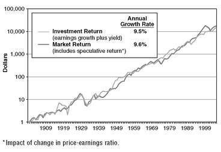
Compounding these returns over 106 years produced accumulations that are truly staggering. Each dollar initially invested in 1900 at an investment return of 9.5 percent grew by the close of 2005 to $15,062.5 Sure, few (if any) of us have 106 years in us, but, like the Gotrocks family over the generations, the miracle of compounding returns is little short of amazing—it is perhaps the ultimate winner’s game.
这些回报在 106 年里不断复利，积累出的数字确实惊人。1900 年投入的每一美元，按 9.5% 的投资性回报计算，到 2005 年底已增长为 15,062 美元。当然，我们当中很少有人（如果有的话）能活够 106 年，但就像 Gotrocks 家族代代相传那样，复利的奇迹实在称得上不可思议——这或许正是终极的赢家的游戏。
As Exhibit 2.1 makes clear, there are bumps along the way in the investment returns earned by our business corporations. Sometimes, as in the Great Depression of the early 1930s, these bumps are large. But we get over them. So, if you stand back from the chart and squint your eyes, the trend of business fundamentals looks almost like a straight line sloping gently upward, and those periodic bumps are barely visible.
Exhibit 2.1 清楚地显示，我们的企业所赚到的投资性回报一路上有颠簸。有时颠簸还很大，比如 1930 年代初的大萧条。但我们都挺了过来。所以，如果你从那幅图上后退一步、眯起眼睛看，企业基本面的趋势几乎就是一条缓缓上行的直线，那些周期性的颠簸几乎看不出来。
Stock market returns sometimes get well ahead of business fundamentals (as in the late 1920s, the early 1970s, the late 1990s). But it has been only a matter of time until, as if drawn by a magnet, they soon return, although often only after falling well behind for a time (as in the mid-1940s, the late 1970s, the 2003 market lows).
股市回报有时会远远跑到企业基本面前面（如 1920 年代末、1970 年代初、1990 年代末）。但回归只是时间问题——仿佛被磁铁吸住一般，它们很快会回到基本面，只不过往往先要落后一大截，才谈得上回归（如 1940 年代中期、1970 年代末、2003 年的市场低点）。
In our foolish focus on the short-term stock market distractions of the moment, we, too, often overlook this long history. We ignore that when the returns on stocks depart materially from the long-term norm, it is rarely because of the economics of investing—the earnings growth and dividend yields of our corporations. Rather, the reason that annual stock returns are so volatile is largely because of the emotions of investing.
我们愚蠢地只盯着当下那些短期的市场干扰，也因此常常忽略这段漫长的历史。我们忘了：股票回报一旦大幅偏离长期常态，很少是因为投资的经济面——也就是我们企业的盈利增长与股息率——出了变化。年度股票回报之所以如此剧烈波动，多半是因为投资的情绪面。
We can measure these emotions by the price/earnings (P/E) ratio, which measures the number of dollars investors are willing to pay for each dollar of earnings. As investor confidence waxes and wanes, P/E multiples rise and fall.6 When greed holds sway, we see very high P/Es. When hope prevails, P/Es are moderate. When fear is in the saddle, P/Es are very low. Back and forth, over and over again, swings in the emotions of investors momentarily derail the steady long-range upward trend in the economics of investing.
我们可以用市盈率（P/E）来衡量这些情绪，它衡量的是投资者愿意为每一美元盈利支付多少美元。投资者的信心一起一落，P/E 倍数就随之上上下下。贪婪当道时，P/E 极高；希望占上风时，P/E 适中；恐惧掌权时，P/E 极低。投资者的情绪就这样来回摇摆、周而复始，一次又一次让投资经济面那平稳的长期上行趋势暂时脱轨。
“It is dangerous... to apply to the future inductive arguments based on past experience.”
What Exhibit 2.1 shows is that while the prices we pay for stocks often lose touch with the reality of corporate values, in the long run, reality rules. So, while investors seem to intuitively accept that the past is inevitably prologue to the future, any past stock market returns that have included a high speculative stock return component are a deeply flawed guide to what lies ahead. To understand why past returns do not foretell the future, we need only heed the words of the great British economist John Maynard Keynes, written 70 years ago: “It is dangerous... to apply to the future inductive arguments based on past experience, unless one can distinguish the broad reasons why past experience was what it was.”
Exhibit 2.1 告诉我们：虽然我们为股票支付的价格常常与企业价值的现实脱节，但长期来看，说话算数的是现实。所以，尽管投资者似乎直觉上认定过去必然是未来的序幕，但任何包含了大量投机成分的往昔股市回报，都是对未来的严重误导。要理解为什么过去的回报不能预示未来，只需听听英国大经济学家约翰·梅纳德·凯恩斯（John Maynard Keynes）70 年前说过的话：「把基于过去经验的归纳推理套用到未来……是危险的，除非你能分辨出过去之所以如此的大致原因。」
But if we can distinguish the reasons the past was what it was, then, we can establish reasonable expectations about the future. Keynes helped us make this distinction by pointing out that the state of long-term expectation for stocks is a combination of enterprise (“forecasting the prospective yield of assets over their whole life”) and speculation (“forecasting the psychology of the market”). I’m well familiar with those words, for 55 years ago I incorporated them in my senior thesis at Princeton, written (providentially for my lifetime career that followed) on the mutual fund industry. It was entitled, “The Economic Role of the Investment Company.”
但如果我们能分辨出过去之所以如此的原因，就能对未来建立起合理的预期。凯恩斯帮我们做了这个区分：他指出，股票的长期预期状态由两部分组成，一是企业（「预测资产在整个生命周期内的预期收益」），二是投机（「预测市场的心理」）。这些话我很熟悉，因为 55 年前我把它们写进了我在普林斯顿大学的毕业论文——那篇论文写的是共同基金行业（说来也是天意，这成了我此后一生的职业），题目就叫 「The Economic Role of the Investment Company」。
This dual nature of returns is reflected when we look at stock market returns over the decades. Using Keynes’s idea, I divide stock market returns into two parts: (1) Investment Return (enterprise), consisting of the initial dividend yield on stocks plus their subsequent earnings growth, which together form the essence of what we call “intrinsic value”; and (2) Speculative Return, the impact of changing price/earnings multiples on stock prices.
把股市回报放到几十年的跨度上看，就能看到回报的这种双重性质。借用凯恩斯的思路，我把股市回报分成两部分：（1）投资性回报（对应企业），由股票期初的股息率加上此后的盈利增长构成，两者合起来正是我们所谓「内在价值」的本质；（2）投机性回报，即市盈率变动对股价的影响。
Let’s begin with investment returns. Exhibit 2.2 shows the average annual investment return on stocks over the decades since 1900. Note first the steady contribution of dividend yields to total return during each decade; always positive, only once outside the range of 3 percent to 7 percent, and averaging 4.5 percent. Then note that the con-tribution of earnings growth to investment return, with the exception of the depression-ridden 1930s, was positive in every decade, usually running between 4 percent and 7 percent, and averaging 5 percent per year. Result: Total investment returns (the top line, combining dividend yield and earnings growth) were negative in only a single decade (again, in the 1930s). These total investment returns—the gains made by business—were remarkably steady, generally running in the range of 8 percent to 13 percent each year, and averaging 9.5 percent.
先从投资性回报说起。Exhibit 2.2 显示的是 1900 年以来各个十年里股票的年均投资性回报。首先要留意，股息率对总回报的贡献十分稳定；它始终为正，只有一次落在 3% 到 7% 这个区间之外，平均为 4.5%。其次要留意，除大萧条笼罩的 1930 年代以外，盈利增长对投资性回报的贡献在每一个十年里都是正的，通常在 4% 到 7% 之间，平均每年 5%。结果就是：总的投资性回报（图中最上面那条线，即股息率与盈利增长之和）只在唯一一个十年里为负（还是 1930 年代）。这些投资性回报——企业所赚到的那些——稳定得惊人，一般每年落在 8% 到 13% 之间，平均为 9.5%。
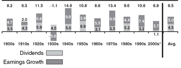
Enter speculative return. Compared with the relative consistency of dividends and earnings growth over the decades, truly wild variations in speculative return punctuate the chart as price/earnings ratios (P/Es) wax and wane (Exhibit 2.3). A 100 percent rise in the P/E, from 10 to 20 times over a decade, would equate to a 7.2 percent annual speculative return. Curiously, without exception, every decade of significantly negative speculative return was immediately followed by a decade in which it turned positive by a correlative amount—the quiet 1910s and then the roaring 1920s, the dispiriting 1940s and then the booming 1950s, the discouraging 1970s and then the soaring 1980s—reversion to the mean (RTM) writ large. (Reversion to the mean can be thought of as the tendency for stock returns to return to their long-term norms over time—periods of exceptional returns tend to be followed by periods of below average performance, and vice versa.) Then, amazingly, there is an unprecedented second consecutive exuberant increase in speculative return in the 1990s, a pattern never before in evidence.
接下来轮到投机性回报。与几十年来股息和盈利增长相对稳定相比，随着市盈率（P/E）起落，投机性回报在图上呈现出真正狂野的波动（Exhibit 2.3）。如果 P/E 在一个十年里上涨 100%，也就是从 10 倍升到 20 倍，对应的年度投机性回报就是 7.2%。奇怪的是，无一例外，每一个投机性回报显著为负的十年之后，紧接着就是一个投机性回报以相应幅度转正的十年——安静的 1910 年代之后是喧嚣的 1920 年代，令人沮丧的 1940 年代之后是繁荣的 1950 年代，令人气馁的 1970 年代之后是腾飞的 1980 年代——这就是放大版的均值回归（RTM）。（均值回归可以理解为股票回报随时间回归其长期常态的倾向——一段回报异常丰厚的时期之后，往往跟着一段低于平均表现的时期，反之亦然。）然后，令人惊讶的是，1990 年代出现了史无前例的投机性回报连续第二个十年猛增，这种格局此前从未出现过。
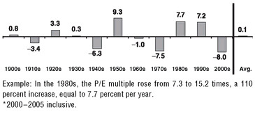
By the close of 1999, the P/E rate had risen to an unprecedented level 32 times, setting the stage for the return to sanity in valuations that soon followed. The tumble in stock market prices gave us our comeuppance. With earnings continuing to rise, the P/E currently stands at 18 times, compared with the 15 times level that prevailed at the start of the twentieth century. As a result, speculative return has added just 0.1 percentage points to the annual investment return earned by our businesses over the long term.
到 1999 年底，P/E 已升至史无前例的 32 倍，为随后不久估值回归理性搭好了舞台。股市的暴跌让我们尝到了报应。由于盈利还在继续上升，P/E 目前为 18 倍，而 20 世纪初普遍的水平是 15 倍。结果是，长期来看，投机性回报只为我们企业每年赚到的投资性回报额外添了 0.1 个百分点。
When we combine these two sources of stock returns, we get the total return produced by the stock market (Exhibit 2.4). Despite the huge impact of speculative return—up and down—during most of the individual decades, there is virtually no impact over the long term. The average annual total return on stocks of 9.6 percent, then, has been created almost entirely by enterprise, with only 0.1 percentage point created by speculation. The message is clear: in the long run, stock returns depend almost entirely on the reality of the investment returns earned by our corporations. The perception of investors, reflected by the speculative returns, counts for little. It is economics that controls long-term equity returns; emotions, so dominant in the short-term, dissolve.
把股票回报的这两个来源合在一起，就得到股市产出的总回报（Exhibit 2.4）。尽管在大多数单个十年里，投机性回报的冲击——有涨有跌——都非常巨大，但放到长期来看，它几乎毫无影响。于是，9.6% 的股票年均总回报，几乎完全由企业创造，只有 0.1 个百分点来自投机。结论很清楚：长期来看，股票回报几乎完全取决于我们的企业所赚到的投资性回报这一现实。由投机性回报所反映的投资者认知，几乎无足轻重。主宰长期股票回报的是经济面；而在短期内如此强势的情绪面，终将消散。
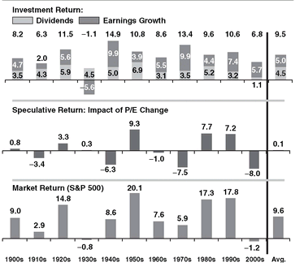
Accurately forecasting swings in investor emotions is not possible. But forecasting the long-term economics of investing carries remarkably high odds of success.
After more than 55 years in this business, I have absolutely no idea how to forecast these swings in investor emotions.7 But, largely because the arithmetic of investing is so basic, I can forecast the long-term economics of investing with remarkably high odds of success. Why? Simply, it is investment returns—the earnings and dividends generated by American business—that are almost entirely responsible for the returns delivered in our stock market. Put another way, while illusion (the momentary prices we pay for stocks) often loses touch with reality (the intrinsic values of our corporations), in the long run it is reality that rules.
在这个行业干了 55 年以上，我完全不知道该怎么预测投资者情绪的这些波动。但主要因为投资的算术如此简单，我可以用高得惊人的成功概率预测投资的长期经济面。为什么？很简单：我们股市给出的回报，几乎完全来自投资性回报——美国企业创造的盈利与股息。换个说法：幻象（我们为股票一时支付的价钱）常常与现实（我们企业的内在价值）脱节，但长期来看，说了算的是现实。
To drive this point home, think of investing as consisting of two different games. Here’s how Roger Martin, dean of the Rotman School of Management of the University of Toronto, describes them. One is “the real market, where giant publicly held companies compete. Where real companies spend real money to make and sell real products and services, and, if they play with skill, earn real profits and pay real dividends. This game also requires real strategy, determination, and expertise; real innovation and real foresight.”
为了把这一点讲透，不妨把投资看成两种不同的游戏。多伦多大学罗特曼管理学院院长罗杰·马丁（Roger Martin）是这样描述它们的。一种是「真实市场，巨型公众持股公司在这里竞争。真实公司在这里花真金白银，制造并销售真实的产品与服务；如果技艺高超，它们就赚到真实的利润、派发真实的股息。这场游戏还需要真实的战略、决心与专业能力，需要真正的创新和真正的远见。」
Loosely linked to this game is another game, the expectations market. Here, “prices are not set by real things like sales margins or profits. In the short-term, stock prices go up only when the expectations of investors rise, not necessarily when sales, margins, or profits rise.”
与这场游戏松散相连的是另一场游戏——预期市场。在这里，「价格不是由销售利润率或利润这类真实的东西决定的。短期内，只有当投资者的预期上升时，股价才会上涨，而不一定是销售、利润率或利润上升的时候。」
The stock market is a giant distraction.
To this crucial distinction, I would add that the expectations market is not only a product of the expectations of active investors but the expectations of active speculators, trying to guess what these investors will expect, and how they will act as each new bit of information finds its way into the marketplace. The expectations market is about speculation. The real market is about investing. The only logical conclusion: the stock market is a giant distraction that causes investors to focus on transitory and volatile investment expectations rather than on what is really important—the gradual accumulation of the returns earned by corporate business.
对于这个关键区分，我还要补充一点：预期市场不仅是主动投资者预期的产物，也是主动投机者预期的产物——后者试图猜测这些投资者会预期什么，以及每当新的一点信息流入市场时他们会如何行动。预期市场关乎投机。真实市场关乎投资。唯一合乎逻辑的结论是：股市是一个巨大的干扰，它让投资者把注意力放在短暂而多变的市场预期上，而不是放在真正重要的事情上——企业逐渐累积起来的那些回报。
My advice to investors is to ignore the short-term noise of the emotions reflected in our financial markets and focus on the productive long-term economics of our corporate businesses. Shakespeare could have been describing the inexplicable hourly and daily—sometimes even yearly or longer—fluctuations in the stock market when he wrote, “[It is] like a tale told by an idiot, full of sound and fury, signifying nothing.” The way to investment success is to get out of the expectations market of stock prices and cast your lot with the real market of business.
我给投资者的建议是：忽略我们金融市场所反映的情绪短期噪音，把注意力放在我们企业富有生产力的长期经济面上。莎士比亚写下「（它）不过是一个白痴讲的故事，充满了喧嚣与愤怒，却毫无意义」时，几乎就是在描述股市那种无法解释的每时每刻、每日每夜——有时甚至以年计——的波动。通往投资成功之路，就是走出股价的预期市场，把你的命运押在企业的真实市场上。
Chapter Three
Rely on Occam’s Razor to Win by Keeping It Simple.
SO HOW DO YOU cast your lot with business? Simply by buying a portfolio that owns the shares of every business in the United States and then holding it forever. It is a simple concept that guarantees you will win the investment game played by most other investors who—as a group—are guaranteed to lose.
那么，怎样才算是把自己的命运押在企业上？很简单：买一个持有美国每一家企业股票的组合，然后永远持有。这个概念很简单，却能保证你赢得这场投资游戏——而其他大多数投资者作为一个群体，注定会输。
Please don’t equate simplicity with stupidity. Way back in 1320, William of Occam expressed it well, essentially setting forth this precept: When there are multiple solutions to a problem, choose the simplest one.8 And so Occam’s Razor came to represent a major principle of scientific inquiry. By far the simplest way to own all of U.S. business is to hold the total stock market portfolio.
请不要把简单等同于愚蠢。早在 1320 年，奥卡姆的威廉（William of Occam）就把这个道理说得很好，他提出的原则大致是：一个问题若有多种解法，就选最简单的那个。奥卡姆剃刀由此成为科学探索的一条重要原则。要持有美国全部企业，最最简单的方式就是持有全市场股票组合。
Occam’s Razor: When there are multiple solutions to a problem, choose the simplest one.
For most of the past 80 years, the accepted stock market portfolio was represented by the Standard & Poor’s 500 Index (the S&P 500), which was created in 1926 and now lists 500 stocks. It is essentially composed of the 500 largest U.S. corporations, weighted by the value of their market capitalizations.9 In recent years, these 500 stocks have represented about 80 percent of the market value of all U.S. stocks. The beauty of such a cap-weighted index is that it automatically adjusts to changing stock prices and never has to buy and sell stocks for that reason.
在过去 80 年的大部分时间里，公认的股市组合由标普500指数（S&P 500）来代表。它创建于 1926 年，目前收录 500 只股票，基本上由美国最大的 500 家公司构成，按市值加权。近年来，这 500 只股票大约代表了美国全部股票市值的 80%。这种市值加权指数的妙处在于，它会随股价变动自动调整，永远不必为此买卖股票。
With the enormous growth of corporate pension funds between 1950 and 1990, it was an ideal measurement standard, the benchmark or hurdle rate that would be the comparative standard for how their professional managers were performing. Today, the S&P 500 remains a valid standard against which to compare the returns earned by the professional managers of pension funds and mutual funds.
随着 1950 年至 1990 年间公司养老金基金的巨大增长，它成了一个理想的衡量标尺，也就是基准或门槛回报率，用来作为衡量这些基金的职业经理人表现好坏的比较标准。今天，标普500指数仍然是衡量养老金基金和共同基金的职业经理人所获回报的有效标准。
In 1970, an even more comprehensive measure of the U.S. stock market was developed. Originally called the Wilshire 5000, it is now named the Dow Jones Wilshire Total Stock Market Index. It includes some 4,971 stocks, including the 500 stocks in the S&P 500. However, because its component stocks also are weighted by their market capitalization, those remaining 4,471 stocks account for only about 20 percent of its value. Nonetheless, this broadest of all U.S. stock indexes is the best measure of the aggregate value of stocks, and therefore a superb measure of the returns earned in U.S. stocks by all investors as a group.
1970 年，一个涵盖面更广的美国股市衡量指标问世。它最初叫威尔希尔 5000 指数（Wilshire 5000），如今名为道琼斯威尔希尔全市场股票指数（Dow Jones Wilshire Total Stock Market Index）。它收录约 4,971 只股票，其中包括标普500指数里的那 500 只。不过，由于它的成分股同样按市值加权，其余 4,471 只股票只占其价值的大约 20%。尽管如此，这个涵盖面最广的美国股票指数仍是衡量股票总价值的最佳指标，因此也是衡量全体投资者作为一个群体在美国股票上获得何种回报的上佳标尺。
The two indexes have a similar composition. Exhibit 3.1 shows the 12 largest stocks in each, and their weight in the construction of each index.
这两个指数的构成十分相似。Exhibit 3.1 列出了各自最大的 12 只股票，以及它们在各自指数构建中的权重。
Given the similarity of these two portfolios, it is hardly surprising that the two indexes have earned returns that are in lockstep with one another. The Center for Research in Security Prices at the University of Chicago has gone back to 1926 and calculated the returns earned by all U.S. stocks. (Its data since 1970 have provided a virtually perfect match to the Total Stock Market Index.) In fact, returns of the two indexes parallel one another with near precision. From 1928, the beginning of the measurement period, through 2006, you can hardly tell them apart (Exhibit 3.2).
既然这两个组合如此相似，两个指数所赚到的回报亦步亦趋也就不足为奇了。芝加哥大学的证券价格研究中心（Center for Research in Security Prices）把研究回溯到 1926 年，计算了美国所有股票所获得的回报。（该中心 1970 年以来的数据与全市场股票指数几乎完美吻合。）事实上，两个指数的回报彼此近乎精确地平行。从衡量期起点 1928 年到 2006 年，你几乎分不出它们的差别（Exhibit 3.2）。
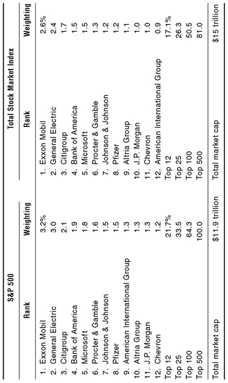
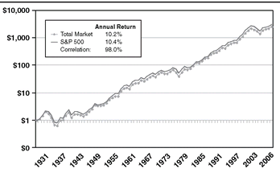
For the full period, the average annual return on the S&P 500 was 10.4 percent; the return on the Total Stock Market Index was 10.2 percent. This represents what we call a period dependent outcome—everything depends on the starting date and the ending date. If we were to begin the comparison at the beginning of 1930 instead of 1926, the returns of the two would be identical: 9.9 percent per year.
整个期间，标普500指数的年均回报率为 10.4%，全市场股票指数的回报率为 10.2%。这就是我们所说的「随期间而变化的结果」——一切取决于起始日期和结束日期。如果我们把比较的起点从 1926 年改到 1930 年初，两者的回报就完全相同：每年 9.9%。
Yes, there are variations over the interim periods: the S&P 500 was much the stronger from 1982 to 1990, when its annual return of 15.6 percent outpaced the Total Stock Market Index return of 14.0 percent. But in recent years (1998 to 2006), small- and mid-cap stocks did better, and the Total Stock Market Index return of 3.4 percent per year nicely exceeded the 2.4 percent return of the S&P 500. But with a long-term correlation of 0.98 between the returns of the two indexes (1.0 is perfect correlation), there is little to choose between them.
没错，中间各段时期确实有差异：1982 年至 1990 年，标普500指数明显更强，其年回报率 15.6%，超过了全市场股票指数的 14.0%。但近年来（1998 年至 2006 年），中小盘股表现更好，全市场股票指数每年 3.4% 的回报也稳稳超过了标普500指数的 2.4%。不过，既然两个指数的长期相关系数高达 0.98（1.0 为完全相关），它们之间实在没什么可挑的。
Whichever measure we use, it should now be obvious that the returns earned by the publicly held corporations that compose the stock market must of necessity equal the aggregate gross returns earned by all investors in that market as a group. Equally obvious, as discussed in Chapter 4, the net returns earned by these investors must of necessity fall short of those aggregate gross returns by the amount of intermediation costs they incur. Our common sense tells us the obvious; while owning the stock market over the long term is a winner’s game, beating the stock market is a loser’s game.
无论用哪个指标衡量，现在都应该看得很清楚：构成股市的那些公众持股公司所赚到的回报，必然等于该市场中全体投资者作为一个群体所获得的毛回报。同样清楚的是（第 4 章将展开讨论）：这些投资者获得的净回报，必然要减去他们承担的中介成本，因而低于上述总毛回报。常识告诉我们这个显而易见的道理：长期持有股市是赢家的游戏，而战胜股市是输家的游戏。
If the data do not prove that indexing wins, well, the data are wrong.
Such an all-market fund is guaranteed to outpace over time the returns earned by equity investors as a group. Once you recognize this fact, you can see that the index fund is guaranteed to win not only over time, but every year, and every month and week, even every minute of the day. Because no matter how long or short the time frame, the gross return in the stock market, minus intermediation costs, equals the net return earned by investors as a group. If the data do not prove that indexing wins, well, the data are wrong.
这样一只全市场基金，必然会在长期跑赢股票投资者作为一个群体所获得的回报。一旦认清这个事实，你就会明白：指数基金不仅长期必胜，而且年年必胜、月月必胜、周周必胜、乃至一天中的每一分钟都必胜。因为无论时间跨度多长多短，股市的毛回报减去中介成本，都等于投资者作为一个群体所获得的净回报。如果数据不能证明指数化必胜，那只能说数据错了。
Over the short term, however, it doesn’t always look as if the S&P 500 (still the most common basis of comparison for mutual funds and pension plans) or the Total Stock Market Index is winning. That is because there is no possible way to calculate the returns earned by the millions of diverse participants, amateur and professional alike, Americans and foreign investors, in the U.S. stock market.
不过短期内，标普500指数（仍是共同基金和养老金计划最常用的比较基准）或全市场股票指数看起来并不总是在赢。这是因为，美国股市中数百万形形色色的参与者——业余的与专业的、美国的与外国的——各自赚到多少回报，根本无从计算。
So what we do in the mutual fund field is calculate the returns of the various funds, counting each fund—instead of each fund’s assets—as one entry. Since there are many small-cap and mid-cap funds, usually with relatively modest asset bases, they make a disproportionate impact on the data. When small- and mid-cap funds are leading the total market, the all-market index fund seems to lag. When small- and mid-cap stocks are lagging the market, the index fund looks formidable indeed.
所以在共同基金领域，我们的做法是计算各只基金的回报，而且把每一只基金——而不是每只基金背后的资产——算作一个条目。由于小盘和中盘基金数量众多，而它们的资产规模往往相对有限，它们对数据的影响就大得不成比例。当中小盘基金领跑全市场时，全市场指数基金看起来就落后了；当中小盘股跑输大盘时，指数基金就显得强悍无比。
Nonetheless, the exercise of calculating how the returns earned by the stock market compare with returns earned by the average equity fund is both illuminating and persuasive (Exhibit 3.3). If we compare the results of what are described as “large-cap core” funds with the returns of the S&P 500 (because of its market capitalization weightings, a “large-cap core” index), the advantage of the S&P Index is impressive.
尽管如此，把股市所赚到的回报与普通股票基金所赚到的回报拿来比较，这项工作既有启发又具说服力（Exhibit 3.3）。如果我们把所谓「大盘核心」基金的业绩与标普500指数的回报相比较（由于市值加权，标普500 本身就是一只「大盘核心」指数），标普指数的优势令人印象深刻。
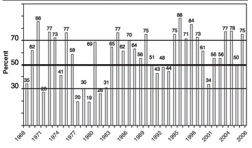
During the 39-year period 1968 to 2006, the S&P 500 fell into the bottom quartile in only two years (and has not done so since 1979). The Index has outpaced the average fund in 26 of the remaining 35 years, including 11 of the past 15 years. Its average ranking was in the 58th percentile (outperforming 58 percent of the comparable actively managed funds), leading, as we will show in Chapter 4, to enormous superiority over time. It is hard to imagine that even a single one of the large-cap core equity funds has a similar record of consistency.
在 1968 年至 2006 年这 39 年间，标普500指数只有两年落入最低四分位（且 1979 年以后再未落入）。在其余 35 年中的 26 年，该指数跑赢了普通基金，其中包括最近 15 年中的 11 年。它的平均排名位于第 58 百分位（跑赢 58% 的可比主动管理基金），正如我们将在第 4 章展示的，这带来了长期而言巨大的领先优势。很难想象哪怕有一只大盘核心股票基金拥有类似的稳定记录。
Consistency matters. A fund that is good or very good in the vast majority of years produces a far larger long-term return than a fund that is superb in half the years and a disaster in the remaining half. Single-year rankings, then, ignore the sheer arithmetic advantage of that consistency. In the next chapter, the impact of that long-term consistency is catalogued over the past 25 years.
稳定性至关重要。一只在绝大多数年份里表现良好或非常优秀的基金，其长期回报远远高于那种一半年份极佳、另一半年份惨不忍睹的基金。因此，单年排名完全忽略了这种稳定性在算术上的绝对优势。下一章将梳理过去 25 年里这种长期稳定性的影响。
These annual data are what we call survivor-biased; they exclude the records of the inevitably poorer performing funds that regularly go out of business. As a result of this noise in the data, the chart further understates the success of the market-owning index strategy.
这些年度数据带有我们所说的幸存者偏差；它们不包括那些表现必然更差、定期关门的基金。由于数据中存在这种噪声，那张图进一步低估了持有市场的指数化策略的成功程度。
Much criticism has been heaped on the S&P 500 for often picking “new economy” stocks such as JDS Uniphase and Yahoo! near their inflated peak prices during the bubble, just before they crashed, thereby taking on a growth bias at exactly the wrong time. While the criticism is valid, the excellent long-term record of the flawed Index belies the existence of a significant problem. In fact, since the market peaked early in 2000 (as shown in Exhibit 3.3), the S&P 500 has had only a single significantly subpar year (2000), three years at about par, and three years (2003, 2004, and 2006) in the top quartile of its peers. I imagine that the vast majority of money managers would have been ecstatic with such an outcome.
标普500指数饱受批评，因为它在泡沫期间往往选中 JDS Uniphase 和雅虎（Yahoo!）这类「新经济」股票时，正值它们被炒到虚高的顶点、即将崩盘之前，等于恰好在最糟糕的时点背上了成长偏向。批评虽然有理，但这只（有缺陷的）指数出色的长期记录说明，问题并没有那么严重。事实上，自 2000 年初市场见顶以来（如 Exhibit 3.3 所示），标普500指数只有一个年份明显落后（2000 年），三个年份大致持平，另有三个年份（2003、2004 和 2006 年）挤进同类的前四分位。我想，绝大多数基金经理要是能有这样的成绩，早就欣喜若狂了。
The record of the first index mutual fund: $15,000 invested in 1976; value in 2006, $461,771.
Thus, the recent era not only has failed to erode, but has nicely enhanced the lifetime record of the world’s first index fund—now known as Vanguard 500 Index Fund. Let me be specific: at a dinner on September 20, 2006, celebrating the 30th anniversary of the fund’s initial public offering, the counsel for the fund’s underwriters reported that he had purchased 1,000 shares at the original offering price of $15.00 per share—a $15,000 investment. He proudly announced that the value of his holding that evening (including shares acquired through reinvesting the fund’s dividends and distributions over the years) was $461,771. Now, there’s a number that requires no comment.10
因此，近些年不仅没有侵蚀、反而漂亮地提升了世界上第一只指数基金——如今名为先锋 500 指数基金（Vanguard 500 Index Fund）——的终身记录。让我说得具体些：2006 年 9 月 20 日，为庆祝该基金首次公开发行 30 周年而举行的一场晚宴上，为该基金承销商提供法律服务的律师报告说，他当年按 15.00 美元的原始发行价买了 1,000 股——一笔 15,000 美元的投资。他自豪地宣布，那天晚上他这笔持仓的价值（包括这些年来用基金股息和分配再投资买入的份额）是 461,771 美元。这个数字，无需任何评论。
This cumulative long-term winning record confirms that owning American business through a broadly diversified index fund is not only logical but, to say the least, incredibly productive. Equally important, it is consistent with the age-old principle expressed by Sir William of Occam: instead of joining the crowd of investors who dabble in complex machinations to pick stocks and try to outguess the stock market (two inevitably fruitless tasks for investors in the aggregate), choose the simplest of all solutions—buy and hold the market portfolio.
这一长期累积的获胜记录证明：通过一只广泛分散化的指数基金持有美国企业，不仅合乎逻辑，而且——至少可以说——生产力高得难以置信。同样重要的是，它印证了奥卡姆的威廉爵士早已阐明的古老原则：不要去挤那帮忙于复杂算计、挑拣股票、试图猜透股市的投资者（对整体投资者而言，这两件事都注定徒劳），而要选择所有解法中最简单的那一个——买入并持有市场组合。
Chapter Four
“The Relentless Rules of Humble Arithmetic”
BEFORE WE TURN TO the success of indexing as an investment strategy, let’s explore in a bit more depth just why it is that investors as a group fail to earn the returns that our corporations generate through their dividends and earnings growth, ultimately reflected in the prices of their stocks. To understand why they do not, we need only to recognize the simple mathematics of investing: All investors as a group must necessarily earn precisely the market return, but only before the costs of investing are deducted.
在转入指数化作为一种投资策略为何成功之前，我们先再深入一点看看：为什么投资者作为一个整体，挣不到我们的企业通过股息与盈利增长所创造、并最终反映在股价上的那些回报。要理解他们为什么挣不到，只需认清投资这条简单的算术：所有投资者作为一个整体，必然只能挣到恰好等于市场回报的收益——而这还是在没有扣除投资成本之前。
After subtracting the costs of financial intermediation—all those management fees, all those brokerage commissions, all those sales loads, all those advertising costs, all those operating costs—the returns of investors as a group must, and will, and do fall short of the market return by an amount precisely equal to the aggregate amount of those costs. In a market that returns 10 percent, we investors together earn a gross return of 10 percent. (Duh!) But after we pay our financial intermediaries, we pocket only what remains. (And we pay them whether our returns are positive or negative!)
扣掉金融中介的成本之后——那些管理费、经纪佣金、销售费、广告费、运营成本——投资者作为一个整体的回报，必然、必定、也确实会低于市场回报，缺口恰好等于这些成本的总和。在一个回报为 10% 的市场里，我们这些投资者加总起来赚到的是 10% 的毛回报。（这不是废话嘛！）但付完金融中介的钱之后，我们兜里只剩下剩下的那部分。（而且不管我们的回报是正是负，都照样得付！）
There are, then, these two certainties: (1) Beating the market before costs is a zero-sum game; (2) Beating the market after costs is a loser’s game. The returns earned by investors in the aggregate inevitably fall well short of the returns that are realized in our financial markets. How much do those costs come to? For individual investors holding stocks directly, trading costs average about 1.5 percent per year. That cost is lower (about 1 percent) for those who trade infrequently, and much higher for investors who trade frequently (for example, 3 percent for investors who turn their portfolios over at a rate above 200 percent per year).
于是就有了这两个确定的事实：（1）在扣除成本之前战胜市场，是一场零和游戏；（2）在扣除成本之后战胜市场，是一场输家的游戏。投资者整体赚到的回报，必然远远低于金融市场里实际实现的回报。这些成本到底有多大？对直接持有股票的个人投资者来说，交易成本平均每年约 1.5%。交易不频繁的人成本更低（约 1%），而交易频繁的人则高得多（比如，组合换手率超过每年 200% 的投资者，成本为 3%）。
In equity mutual funds, management fees and operating expenses—combined, called the expense ratio—average about 1.5 percent per year of fund assets. Then add, say, another 0.5 percent in sales charges, assuming that a 5 percent initial sales charge is spread over a 10-year holding period. If the shares are held for five years, the cost would be twice that figure—1 percent per year.
在股票型共同基金里，管理费与运营费用——合起来称作费用率——平均约占基金资产每年 1.5%。然后再加上大约 0.5% 的销售费用，这里假设 5% 的首次销售费分摊到 10 年的持有期上。如果份额只持有五年，这项成本就要翻一倍——每年 1%。
But then add a giant additional cost, all the more pernicious by being invisible. I am referring to the hidden cost of portfolio turnover, estimated at a full 1 percent per year. The average fund turns its portfolio over at a rate of about 100 percent per year, meaning that a $5 billion fund buys $5 billion of stocks each year and sells another $5 billion. At that rate, brokerage commissions, bid-ask spreads, and market impact costs add a major layer of additional costs.
但这还没算上一项巨大的额外成本，它因为看不见而更加有害。我指的是组合换手率的隐性成本，估计高达每年 1%。普通基金每年的组合换手率约为 100%，也就是说，一只 50 亿美元的基金每年买入 50 亿美元的股票，再卖出另外 50 亿美元。按这个换手速度，经纪佣金、买卖价差和市场冲击成本又叠加上一大层额外支出。
We investors as a group get precisely what we don’t pay for. So if we pay nothing, we get everything.
Result: the “all-in” cost of equity fund ownership can come to as much as 3 percent to 3.5 percent per year.11 So yes, costs matter. The grim irony of investing, then, is that we investors as a group not only don’t get what we pay for. We get precisely what we don’t pay for. So if we pay nothing, we get everything. It’s only common sense.
结果：持有股票型基金的「全包」成本每年可高达 3% 到 3.5%。所以，是的，成本很重要。投资中残酷的讽刺在于：我们投资者作为一个整体，不仅得不到自己付了钱的东西；我们得到的，恰恰是自己没有付钱的那部分。所以，如果我们分文不付，就能得到全部。这不过是常识。
A few years ago when I was rereading Other People’s Money, by Louis D. Brandeis (first published in 1914), I came across a wonderful passage that illustrates this simple lesson. Brandeis, later to become one of the most influential jurists in the history of the U.S. Supreme Court, railed against the oligarchs who a century ago controlled investment America and corporate America alike.
几年前，我重读 Louis D. Brandeis 的《Other People's Money》（首次出版于 1914 年）时，读到一段妙文，正好说明这个简单的道理。Brandeis 后来成为美国最高法院历史上最有影响力的法官之一，他在书中痛斥一个世纪前那些同时掌控着投资界与美国企业界的寡头。
Brandeis described their self-serving financial management and their interlocking interests as, “trampling with impunity on laws human and divine, obsessed with the delusion that two plus two make five.” He predicted (accurately, as it turned out) that the widespread speculation of that era would collapse, “a victim of the relentless rules of humble arithmetic.” He then added this unattributed warning—I’m guessing it’s from Sophocles—“Remember, O Stranger, arithmetic is the first of the sciences, and the mother of safety.”
Brandeis 把他们的自利式财务管理与盘根错节的利益关系描述为「践踏人间与神界的法律而毫无顾忌，沉溺于二加二等于五的幻觉」。他预言（后来证明确实如此）那个时代盛行的投机终将崩溃，成为「朴素算术无情规律的牺牲品」。接着他又补上了一句不知出处的告诫——我猜出自索福克勒斯——「记住，陌生人，算术是科学之首，是安全之母。」
Brandeis’s words hit me like the proverbial ton of bricks. Why? Because the relentless rules of the arithmetic of investing are so obvious. (It’s been said by my detractors that all I have going for me is “the uncanny ability to recognize the obvious.”) The curious fact is that most investors seem to have difficulty recognizing what lies in plain sight, right before their eyes. Or, perhaps even more pervasively, they refuse to recognize the reality because it flies in the face of their deep-seated beliefs, biases, overconfidence, and uncritical acceptance of the way that financial markets have worked, seemingly forever.
Brandeis 的话像一记重锤砸在我头上。为什么？因为投资算术的无情规律实在太明显了。（我的批评者说过，我唯一的本事就是「能识别显而易见之事，这本领简直到了诡异的地步」。）奇怪的是，大多数投资者似乎都难以看清就明摆在眼前的东西。或者，更普遍的情形是：他们拒绝承认现实，因为这现实违背了他们根深蒂固的信念、偏见、过度自信，以及对金融市场「似乎从来如此」的运行方式的盲目接受。
It’s amazing how difficult it is for a man to understand something if he’s paid a small fortune not to understand it.
What is more, it is hardly in the interest of our financial intermediaries to encourage their investor/clients to recognize the obvious reality. Indeed, the self-interest of the leaders of our financial system almost compels them to ignore these relentless rules. Paraphrasing Upton Sinclair: It’s amazing how difficult it is for a man to understand something if he’s paid a small fortune not to understand it.
更何况，鼓励投资者／客户认清这个显而易见的现实，几乎不符合我们金融中介的利益。事实上，金融体系掌舵者们的自身利益几乎逼着他们去无视这些无情的规律。套用 Upton Sinclair 的话说：一个人要是被付了一大笔钱去不要弄懂某件事，那他要弄懂它就难上加难。
Our system of financial intermediation has created enormous fortunes for those in the field of managing other people’s money. Their self-interest will not soon change. But as an investor, you must look after your self-interest. Only by facing the obvious realities of investing can the intelligent investor succeed.
我们的金融中介体系，让那些管理别人钱财的人赚得了巨额财富。他们的自身利益不会很快改变。但作为投资者，你必须照顾你自己的利益。只有正视投资中显而易见的现实，聪明的投资者才能成功。
How much do the costs of financial intermediation matter? Hugely! In fact, the higher costs of equity funds have played the determinative role in explaining why fund managers have lagged the returns of the stock market so consistently, for so long. When you think about it, how could it be otherwise? By and large, these managers are smart, well-educated, experienced, knowledgeable, and honest. But they are competing with each other. When one buys a stock, another sells it. There is no net gain to fund shareholders as a group. In fact, they incur a loss equal to the transaction costs they pay to those Helpers that Warren Buffett warned us about in Chapter 1.
金融中介的成本究竟有多重要？极其重要！事实上，股票型基金更高的成本，一直是解释基金经理为何如此长期、如此一贯地落后于股市回报的决定性因素。仔细想想，这还能有别的可能吗？总的来说，这些经理人聪明、受过良好教育、经验丰富、知识渊博而且诚实。但他们在彼此竞争。一个人买入某只股票，另一个人就卖出它。基金持有人作为一个整体，并没有任何净收益。事实上，他们还承受了一笔损失，数额等于他们付给那些帮手的交易成本——正是沃伦·巴菲特（Warren Buffett）在第 1 章提醒过我们的那些帮手。
Investors pay far too little attention to the costs of investing. It’s especially easy to underrate their importance under today’s three conditions: (1) when so many costs are hidden from view (portfolio transaction costs, the unrecognized impact of front-end sales changes, taxes incurred on realized gains); (2) when stock market returns have been high (during the 1980s and 1990s, stock returns averaged 17.5 percent per year, and the average fund provided a nontrivial—but clearly inadequate—return of 15 percent); and especially (3) when investors focus on short-term returns, ignoring the truly confiscatory impact of cost over an investment lifetime.
投资者对投资成本的关注远远不够。在今天这三种情形下，尤其容易低估成本的重要性：（1）当许多成本都藏在看不见的地方（组合交易成本、前端销售费未被察觉的影响、已实现收益所产生的税款）；（2）当股市回报一直很高的时候（在 1980 年代和 1990 年代，股票回报平均每年 17.5%，而普通基金提供了 15% 的回报——不算小，但显然不够）；（3）尤其是当投资者只盯着短期回报，无视成本在一生的投资周期中所产生的真正「没收式」影响时。
Perhaps an example will help. Let’s assume the stock market generates a total return averaging 8 percent per year over a half century. Yes, that’s a long time, but an investment lifetime is now actually even longer—65 or 70 years for an investor who goes to work at age 22, begins to invest immediately, and works until, say, age 65; and then continues to invest over an actuarial expectancy of 20 or more years thereafter. Now let’s assume that the costs of the average mutual fund continue at their present rate of at least 2.5 percent per year. Result: a net annual return of just 5.5 percent for the average fund.
也许举个例子会有帮助。我们假设股市在半个世纪里产生的总回报平均每年 8%。没错，那是很长一段时间，但如今一个人的投资生涯其实更长——一个 22 岁参加工作、立刻开始投资、一直干到比如 65 岁的人，之后还会按精算预期寿命再投资 20 年甚至更久，合起来是 65 年或 70 年。现在我们再假设，普通共同基金的成本维持在目前每年至少 2.5% 的水平。结果：普通基金的净年回报只有 5.5%。
$10,000 grows to $469,000... or $145,400. Where did that $323,600 go?
Based on these assumptions, let’s look at the returns earned on $10,000 over 50 years (Exhibit 4.1). The simple investment in the stock market grows to $469,000, a remarkable illustration of the magic of compounding returns over an investment lifetime. In the early years, the line showing the growth at a 5.5 percent annual rate doesn’t look all that different from the growth in the stock market itself. But ever so slowly, the lines begin to diverge, finally at a truly dramatic rate. By the end of the long period, the value accumulated in the fund totals just $145,400, an astounding shortfall of $323,600 to the cumulative return earned in the market itself.
基于这些假设，我们来看看 10,000 美元在 50 年里所赚到的回报（Exhibit 4.1）。单单投在股市里的这笔钱增长到 469,000 美元，令人惊叹地展示了复利回报在一个投资周期里的魔力。最初的年份里，那条按每年 5.5% 增长的曲线与股市本身的增长看起来差别不大。但它极其缓慢地开始偏离，最后偏离的速度真正变得惊人。到这段漫长时期结束时，基金里累积的价值总共只有 145,400 美元，与市场本身累积的回报相比足足少了 323,600 美元。
In the investment field, time doesn’t heal all wounds. It makes them worse. Where returns are concerned, time is your friend. But where costs are concerned, time is your enemy. This point is powerfully illustrated when we consider how much of the value of the $10,000 investment is eroded with each passing year (Exhibit 4.2). By the end of the first year, only about 2 percent of the value of your capital has vanished ($10,800 vs. $10,550). By the 10th year, 21 percent has vanished ($21,600 vs. $17,100). By the 30th year, 50 percent has vanished ($100,600 vs. $49,800). And by the end of the investment period, costs have consumed nearly 70 percent of the potential accumulation available simply by holding the market portfolio.
在投资领域，时间并不能治愈所有伤痛。它会让伤口更糟。就回报而言，时间是朋友；但就成本而言，时间是敌人。想一想这 10,000 美元投资的价值如何随着一年年过去而被侵蚀，这一点就得到了有力的说明（Exhibit 4.2）。到第一年年底，你的本金价值只消失了约 2%（10,800 美元对 10,550 美元）。到第 10 年，消失了 21%（21,600 美元对 17,100 美元）。到第 30 年，消失了 50%（100,600 美元对 49,800 美元）。到投资期结束时，成本已经吃掉了仅靠持有市场组合本可积累的潜在财富的将近 70%。
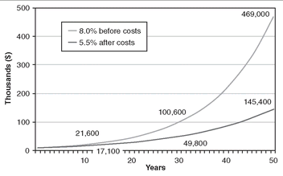
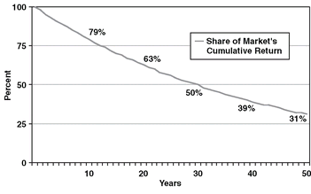
The investor, who put up 100 percent of the capital and assumed 100 percent of the risk, earned only 31 percent of the market return. The system of financial intermediation, which put up zero percent of the capital and assumed zero percent of the risk, essentially confiscated 70 percent of that return—surely the lion’s share. What you see here—and please don’t ever forget it!—is that over the long term, the miracle of compounding returns is overwhelmed by the tyranny of compounding costs. Add that mathematical certainty to the relentless rules of humble arithmetic described earlier.
投资者拿出了 100% 的本金、承担了 100% 的风险，却只赚到了市场回报的 31%。金融中介体系拿出 0% 的本金、承担 0% 的风险，却基本上没收了这笔回报的 70%——毫无疑问拿走了最大的一块。你在这里看到的——请千万不要忘记！——是：长期来看，复利回报的奇迹被复利成本的暴政压倒了。把这个数学上的确定事实，与前面讲过的朴素算术的无情规律加在一起。
The miracle of compounding returns is overwhelmed by the tyranny of compounding costs.
But enough of theory and hypothetical examples. Let’s see how this principle works in the real world. During the quarter century from 1980 to 2005, the return on the stock market (measured by the Standard & Poor’s 500 Index) averaged 12.5 percent per year. The return on the average mutual fund averaged just 10.0 percent. That 2.5 percent differential is about what one might have expected, given our earlier 3 percent rough estimate of fund costs. (Never forget: Market return, minus cost, equals investor return.) Simply put, our fund managers, sitting at the top of the investment food chain, have confiscated an excessive share of the financial markets’ returns. Fund investors, inevitably at the bottom of the food chain, have been left with too small a share.
但理论和假设的例子已经够了。我们来看看这个原理在真实世界里如何运作。在 1980 到 2005 年这四分之一世纪里，股市的回报（以标普500指数衡量）平均每年 12.5%。普通共同基金的回报平均只有 10.0%。这 2.5% 的差距，与我们前面对基金成本 3% 的粗略估计大致吻合。（永远别忘了：市场回报，减去成本，等于投资者回报。）说白了，坐在投资食物链顶端的基金经理们，没收了金融市场回报中过大的份额；而必然处在食物链底端的基金投资者，只分到了太小的一份。
Investors need not have incurred that loss. For they could have easily invested in a simple index fund tracking the S&P 500. Such a fund actually returned 12.3 percent per year during that period—the market return of 12.5 percent less costs of just 0.2 percent. That is an annual margin of superiority of 2.3 percent over the average fund.
投资者本不必承受这笔损失。因为他们本可以轻松地投资一只跟踪标普500指数的简单指数基金。在那一时期，这样一只基金的实际回报是每年 12.3%——市场回报 12.5% 减去仅 0.2% 的成本。也就是说，它比普通基金每年高出 2.3%。
On first impression, that annual gap may not look large. But when compounded over 25 years, it reaches staggering proportions. A $10,000 initial investment in the index fund grew by a remarkable $170,800, compared with growth of just $98,200 in the average equity mutual fund—only 57 percent of the total accumulation in the index fund.
乍看之下，这每年 2.3% 的差距似乎不算大。但按 25 年复利计算，它就达到了惊人的地步。在指数基金里最初投入的 10,000 美元增长了 170,800 美元，而普通股票型共同基金只增长了 98,200 美元——仅为指数基金累积总额的 57%。
But let’s face the facts. Both of these accumulations are overstated because they are based on 2005 dollars, which have less than half the spending power they enjoyed in 1980. During this period, inflation eroded the real buying power of these returns at an average rate of 3.3 percent per year. When we turn those nominal dollars—the dollars that we earn and spend and invest every day—into real dollars that are adjusted to take inflation into account, the results for that original $10,000 investment tumble sharply. The cumulative real profit, after compounding, came to just $40,600 for the average actively managed equity fund, compared with $76,200 for the passively managed index fund (Exhibit 4.3).
但我们还是面对事实吧。这两个累积数字都被高估了，因为它们是按 2005 年的美元计算的，而 2005 年美元的购买力还不到 1980 年的一半。在这段时期里，通货膨胀以平均每年 3.3% 的速度侵蚀着这些回报的实际购买力。当我们把这些名义美元——我们每天赚取、花掉和投资的那种美元——换算成按通胀调整过的实际美元时，最初那 10,000 美元投资的结果就大幅缩水。复利之后，普通主动管理股票型基金累积的实际利润只有 40,600 美元，而被动管理的指数基金为 76,200 美元（Exhibit 4.3）。
Now, the average fund produced barely one-half (actually 53 percent) of the profit earned by the stock market through the simple index fund—a return that was there for the taking. (It is in the nature of arithmetic that deducting the same inflation rate from both figures further increases the comparative advantage of the investment with the higher return, in this case the index fund.) Yes, costs matter! Indeed, costs make the difference between investment success and investment failure.
这样一来，普通基金产生的利润还不到股市通过那只简单的指数基金所赚利润的一半（确切说是 53%）——而那份回报本来是唾手可得的。（算术的性质就是如此：从两个数字中扣掉同样的通胀率，会让回报更高的那项投资——这里就是指数基金——的比较优势进一步扩大。）没错，成本很重要！事实上，成本决定了投资成功与投资失败之别。
In short, the humble arithmetic of investing—the logical, inevitable, and unyielding penalty assessed by investment costs and rising living costs—has devastated the returns earned by mutual fund investors. Using Justice Brandeis’s formulation, our mutual fund managers seem obsessed with the delusion—and are foisting that delusion on investors—that a nominal gross return of 12.5 percent per year in the stock market, minus fund expenses of 2.5 percent, minus inflation of 3.3 percent, still equals a real net return of 12.5 percent. Well, to state the obvious, it doesn’t. You can add and subtract for yourself. It equals (you guessed it) only 6.7 percent.
简而言之，投资中朴素的算术——投资成本与不断上涨的生活成本所施加的那种合乎逻辑、不可避免、毫不留情的惩罚——已经摧毁了共同基金投资者所赚到的回报。用 Brandeis 大法官的说法，我们的共同基金经理们似乎沉溺于一个幻觉——并把这个幻觉强加给投资者——认为股市每年 12.5% 的名义毛回报，减去 2.5% 的基金费用，再减去 3.3% 的通胀，依然等于 12.5% 的实际净回报。好吧，说句显而易见的话：并不是。你自己加一加、减一减就知道了。它等于（你猜对了）只有 6.7%。
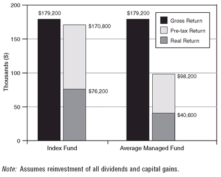
Unless the fund industry changes and improves the net return it delivers to fund shareholders, it will falter and finally fail, a victim, yes, of the relentless rules of humble arithmetic. Were he looking over your shoulder as you read this book, Justice Brandeis surely would be warning you, “Remember, O reader, that arithmetic is the first of the sciences and the mother of safety.”
除非基金业做出改变，改善它交付给基金持有人的净回报，否则它将会步履蹒跚，最终走向失败——是的，成为朴素算术无情规律的牺牲品。如果你读这本书时 Brandeis 大法官正从你肩头看着，他一定会这样警告你：「记住，读者啊，算术是科学之首，是安全之母。」
So, sharpen your pencils. Do your own arithmetic. Realize that you are not consigned to playing the hyperactive management game that is played by the overwhelming majority of individual investors and mutual fund owners alike. The index fund is there to guarantee that you will earn your fair share of whatever returns our businesses earn and our stock market delivers.
所以，削好你的铅笔。自己动手算一算。要明白，你并非注定要去玩那场极度频繁交易的管理游戏——绝大多数个人投资者和共同基金持有人都在玩这场游戏。指数基金就在那里，保证你能赚到属于自己的公平份额——无论我们的企业赚到多少回报、我们的股市交出多少回报。
Chapter Five
Surprise! The Returns Reported by Mutual Funds Aren’t Actually Earned by Mutual Fund Investors.
IT IS GRATIFYING THAT industry insiders such as the Investment Company Institute’s (ICI’s) chairman Jon Fossel, Fidelity’s Peter Lynch, Mad Money’s James Cramer, and AQR’s Clifford Asness agree with me about the inevitable inadequacy of returns earned by the typical equity mutual fund relative to the returns available simply by owning the stock market through an index fund based on the S&P 500. But the idea that fund investors themselves actually earn those returns proves to be a grand illusion. Not only an illusion, but a generous one. The reality is considerably worse. For in addition to paying the heavy costs that fund managers extract for their services, the shareholders pay an additional cost that has been even larger.
令人欣慰的是，业内一些人士——比如投资公司协会（ICI）主席 Jon Fossel、富达的 Peter Lynch、《Mad Money》的 James Cramer，以及 AQR 的 Clifford Asness——都同意我的看法：典型的股票型共同基金所赚到的回报，必然比不上通过一只以标普500指数为基础的指数基金、单纯持有股市所能获得的回报。但「基金投资者本人真的赚到了那些回报」这个想法，被证明是一个巨大的幻觉。它不仅是幻觉，还是个太宽厚的幻觉，现实要糟糕得多。因为除了支付基金经理为服务所提取的高昂成本，基金持有人还要承担一笔更大的额外成本。
During the 25-year period examined in Chapter 4, the returns we presented were based on the traditional time-weighted returns reported by the funds—the change in the asset value of each fund share, adjusted to reflect the reinvestment of all income dividends and capital gains distributions. But that fund return does not tell us what return was earned by the average fund investor. And that return turns out to be far lower.
在第 4 章考察的那 25 年里，我们给出的回报数字，依据的是基金所报告的传统时间加权回报——即每份基金份额资产净值的变化，并经过调整以反映所有收益股息与资本利得分配的再投资。但那个基金回报并不能告诉我们普通基金投资者实际赚到了多少。而那个回报要低得多。
Hint: money flows into most funds after good performance, and goes out when bad performance follows.
To ascertain the return earned by the average fund investor, we must consider the dollar-weighted return, which accounts for the impact of capital flows from investors, into and out of the fund.12 (Hint: money flows into most funds after good performance is achieved, and goes out when bad performance follows.)
要确定普通基金投资者实际赚到的回报，我们必须考虑资金加权回报，它把投资者资金流入、流出基金所造成的影响计算在内。（提示：多数基金里，钱是在业绩好之后流进来的，等到业绩变差，钱又流出去。）
When we compare traditionally calculated fund returns with the returns actually earned by their investors over the past quarter century, it turns out that the average fund investor earned, not the 10.0 percent reported by the average fund, but 7.3 percent—an annual return fully 2.7 percentage points per year less than that of the fund. (In fairness, the index fund investor, too, was enticed by the rising market, and earned a return of 10.8 percent, 1.5 percentage points short of the fund return itself.)
当我们把传统方式计算的基金回报，与基金投资者在过去四分之一世纪里实际赚到的回报相比较时，会发现普通基金投资者赚到的不是普通基金所报告的 10.0%，而是 7.3%——比基金本身每年整整低了 2.7 个百分点。（平心而论，指数基金投资者同样也被上涨的市场吸引，赚到的回报是 10.8%，比基金本身的回报低 1.5 个百分点。）
Yes, during the past 25 years, while the stock market index fund was providing an annual return of 12.3 percent and the average equity fund was earning an annual return of 10.0 percent, the average fund investor was earning only 7.3 percent a year.
没错，在过去 25 年里，股市指数基金提供了每年 12.3% 的回报，普通股票型基金赚到了每年 10.0% 的回报，而普通基金投资者每年只赚到 7.3%。
Compounded over the full period, as we saw in Chapter 4, the 2.5 percent penalty incurred by the average fund because of costs was huge. But the dual penalties of faulty timing and adverse selection were even larger. Exhibit 5.1 shows that $10,000 invested in the index fund grew to $170,800; in the average equity fund, to $98,200—just 57 percent of what was there for the taking. But the compound return earned by the average fund investor tumbled to $48,200, a stunning 28 percent of the return on the simple index fund.
如第 4 章所述，把整个时期合起来复利计算，普通基金因成本而产生的 2.5% 惩罚已经很大。但错误择时与逆向选择这两重惩罚更大。Exhibit 5.1 显示，投入指数基金的 10,000 美元增长到 170,800 美元；投入普通股票型基金的则增长到 98,200 美元——只有本可到手那份的 57%。而普通基金投资者赚到的复利回报跌到 48,200 美元，仅为那只简单指数基金回报的 28%，令人震惊。
And once again, the value of all those dollars tumbles because we must take inflation into account. The index fund real return drops to 9.0 percent per year, but the real return of the average fund investor plummets to just 4.0 percent. On a compounded basis, $76,200 of real value for the index fund versus just $16,700 for the fund investor—only 22 percent of the potential accumulation that was there for the taking. Truth told, it’s hard to imagine such a staggering gap, but facts are facts.
同样，这所有的美元价值都要打折扣，因为我们必须把通货膨胀考虑进来。指数基金的实际回报降到每年 9.0%，而普通基金投资者的实际回报则骤降至只有 4.0%。按复利计算，指数基金的实际价值为 76,200 美元，基金投资者却只有 16,700 美元——仅为本可到手那份潜在积累的 22%。说实话，如此惊人的差距很难想象，但事实就是事实。
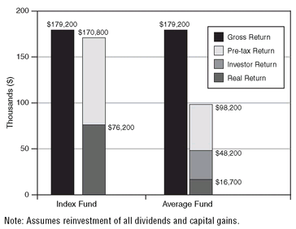
While the data clearly indicate that fund investor returns fell well short of fund returns, there is no way to be precise about the exact shortfall.13 But the point of this examination of the returns earned by the stock market, the average fund, and the average fund owner is not precision, but direction. Whatever the precise data, the evidence is compelling that equity fund returns lag the stock market by a substantial amount, largely accounted for by their costs, and that fund investor returns lag fund returns by an even larger amount.
数据清楚地表明，基金投资者的回报远远低于基金回报，但具体差多少却无法精确说清。我们考察股市、普通基金以及普通基金持有人各自赚到的回报，重点不在于精确，而在于方向。无论具体数据如何，证据都充分且有力：股票型基金的回报大幅落后于股市，主要可以用它们的成本来解释；而基金投资者的回报，又以更大的幅度落后于基金回报。
Inflamed by heady optimism and greed, and enticed by the wiles of mutual fund marketers, investors poured their savings into equity funds at the bull market peak.
What explains this shocking lag? Simply put, counterproductive market timing and fund selection. First, shareholders investing in equity funds paid a heavy timing penalty. They invested too little of their savings in equity funds during the 1980s and early 1990s when stocks represented good values. Then, inflamed by the heady optimism and greed of the era and enticed by the wiles of mutual fund marketers as the bull market neared its peak, they poured too much of their savings into equity funds. Second, they paid a selection penalty, pouring their money into the market not only at the wrong time but into the wrong funds. In both failures, investors simply failed to practice what common sense would have told them.
这种惊人的滞后该怎么解释？说白了，就是弄巧成拙的择时与选基金。第一，投资股票型基金的持有人付出了沉重的择时惩罚。在股票还代表良好价值的 1980 年代和 1990 年代初，他们投入股票型基金的储蓄太少；随后，在那个时代亢奋乐观与贪婪的煽动下、在牛市逼近顶峰时被共同基金营销手法引诱，他们又把过多储蓄倒进了股票型基金。第二，他们还付出了选基惩罚：他们的钱不仅进场的时机不对，进的基金也不对。这两样失败，都说明投资者没有做到常识本来早就告诉他们的那些事。
This lag effect was amazingly pervasive. In the past decade, the returns provided to investors by 198 of the 200 most popular equity funds of 1996 to 2000 were lower than the returns that they reported to investors! This lag was especially evident during the “new economy” craze of the late 1990s. Then, the fund industry organized more and more funds, usually funds that carried considerably higher risk than the stock market itself, and magnified the problem by heavily advertising the eye-catching past returns earned by its hottest funds.
这种滞后效应普遍得惊人。在过去十年里，1996 到 2000 年间最热门的 200 只股票型基金中，有 198 只提供给投资者的回报低于它们向投资者报告的回报！这种滞后在 1990 年代末的「新经济」狂热中尤其明显。那时，基金业发行了越来越多的基金，往往风险远高于股市本身，还大量给旗下最火基金那惹眼的过往回报打广告，把问题进一步放大。
As the market soared, investors poured ever larger sums of money into equity funds. They invested a net total of only $18 billion in 1990 when stocks were cheap, but $420 billion in 1999 and 2000, when stocks were overvalued (Exhibit 5.2). What’s more, they also chose overwhelmingly the highest-risk growth funds, to the virtual exclusion of more conservative value-oriented funds. While only 20 percent of their money went into risky aggressive growth funds in 1990, they poured fully 95 percent into such funds when they peaked during 1999 and early 2000. After the fall, when it was too late, investor purchases dried up to as little as $50 billion in 2002, when the market hit bottom. They also pulled their money out of growth funds and turned, too late, to value funds.
随着市场飞涨，投资者往股票型基金里投入的钱越来越多。1990 年股票还便宜时，他们的净投入总计只有 180 亿美元，而在股票已被高估的 1999 和 2000 年，却投入了 4,200 亿美元（Exhibit 5.2）。更甚者，他们压倒性地选择了风险最高的成长型基金，几乎完全排除了更保守的价值型基金。1990 年他们只有 20% 的钱投入高风险的激进成长型基金，而到 1999 和 2000 年初这类基金登顶时，他们竟把整整 95% 的钱投了进去。泡沫破裂之后，一切已经太迟，投资者的申购量到 2002 年市场触底时萎缩到只有 500 亿美元。他们同样把资金抽出成长型基金，转而投向价值型基金——也转得太迟了。
The problems of counterproductive market timing and unwise fund selection can be illustrated by observing the experience of the most popular growth funds of five giant fund families with the largest cash inflows, altogether more than $150 billion between 1996 and 2000 inclusive (Exhibit 5.3). During those five years, these aggressive funds provided spectacular records—annual returns averaging 21 percent per year, well above even the outstanding return of 18.4 percent on the S&P 500 Index fund. But during the five years that followed, in 2001 through 2005, retribution followed. While the index fund eked out a small gain (less than 1 percent per year), the returns of these aggressive, risk-laden funds tumbled into negative territory.
弄巧成拙的择时与不明智的选基，可以用五大基金公司旗下最热门成长型基金的遭遇来说明：1996 到 2000 年（含）间，这些基金的现金流入合计超过 1,500 亿美元（Exhibit 5.3）。在那五年里，这些激进型基金交出了辉煌的业绩——年回报平均每年 21%，甚至远高于标普500指数基金 18.4% 的出色回报。但接下来的五年，也就是 2001 到 2005 年，报应来了。指数基金勉力取得小幅正收益（每年不到 1%），而这些激进、高风险的基金回报则跌入负值区间。
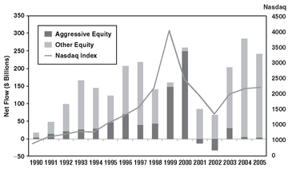
For the full 10 years, taking into account both their rise and their fall, the returns reported by these aggressive funds were actually quite acceptable—an average of 7.8 percent per year, nearly equal to the return of 9.1 percent for the index fund. But woe to the shareholder who chose them. For while the fund returns were acceptable, the returns of their shareholders were, well, terrible.
把上涨和下跌合起来看，整整十年间，这些激进型基金所报告的回报其实还算说得过去——平均每年 7.8%，几乎与指数基金的 9.1% 相当。但选择它们的持有人就惨了。因为基金回报虽可接受，他们的持有人回报却……很糟糕。
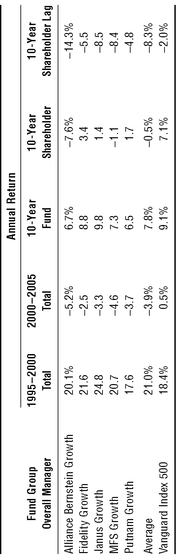
Their average return came to minus 0.5 percent per year, in negative territory and a lag of fully 8.3 percentage points behind the funds’ reported per share figure. For the record, the annual return of the index fund shareholder, at 7.1 percent, also lagged the return of the fund, but by only 2.0 percentage points, far less than this group’s gap of 8.3 percentage points, or even the industry gap of 2.7 percentage points.
他们的平均回报是每年 −0.5%，落入负值区间，比基金报告的单份回报整整低 8.3 个百分点。顺带一提，指数基金持有人的年回报为 7.1%，同样落后于基金回报，但只低 2.0 个百分点，远小于这组基金的 8.3 个百分点差距，甚至也小于整个行业 2.7 个百分点的差距。
When the annual returns of these aggressive funds are compounded over the full period, the deterioration is stunning: a cumulative fund return averaging more than 112 percent; a cumulative shareholder return averaging negative 4.5 percent. That’s a lag of more than 117 percentage points! This astonishing penalty, then, makes clear the perils of fund selection and timing. It also illustrates the value of indexing and the necessity of setting a sound course and then sticking to it, come what may.
把这些激进型基金的年回报在整个时期里复利累乘，结果恶化得令人瞠目：基金累积回报平均超过 112%，而持有人累积回报平均为负 4.5%。那相差 117 个百分点以上！这笔惊人的惩罚清楚地揭示了选基与择时的危险，也说明了指数化的价值，以及定好一条稳健路线、然后不管风吹浪打都坚持走下去的必要性。
When ever-counterproductive investor emotions are played on by ever-counterproductive fund industry promotions, little good is apt to result.
The shocking performance of fund investors during the stock market “new economy” bubble is unusual in its dimension, but not in its existence. Fund investors have been chasing past performance since time eternal, allowing their emotions—perhaps even their greed—to overwhelm their reason. But the fund industry itself has played on these emotions, bringing out new funds to meet the fads and fashions of the day, often supercharged and speculative, and then aggressively advertising and marketing them. It is fair to say that when ever-counterproductive investor emotions are played on by ever-counterproductive fund industry promotions, little good is apt to result.
基金投资者在股市「新经济」泡沫期间那令人震惊的表现，在程度上虽属罕见，但就其存在本身却并不新鲜。自古以来，基金投资者就一直在追逐过往业绩，任由情绪——甚至是贪婪——压倒了理智。而基金业本身也在利用这些情绪，推出新基金去迎合当下的时兴与潮流，往往是加足了杠杆、充满投机性的，然后再大张旗鼓地广告营销。可以说，当永远弄巧成拙的投资者情绪，被永远弄巧成拙的基金业推销所撩拨，结果多半不会好。
The fund industry will not soon give up its promotions. But the intelligent investor will be well advised to heed not only the message in Chapter 4 about minimizing expenses, but the message in this chapter about getting emotions out of the equation. The beauty of the index fund, then, lies not only in its low expenses, but in its elimination of all those tempting fund choices that promise so much and deliver so little. Unlike the hot funds of the day, the index fund can be held through thick and thin for an investment lifetime, and emotions need never enter the equation. The winning formula for success in investing is owning the entire stock market through an index fund, and then doing nothing. Just stay the course.
基金业不会很快放弃它的推销。但聪明的投资者最好不仅听取第 4 章关于把费用压到最低的建议，也听取本章关于把情绪从等式中剔除出去的建议。指数基金之美，不只在它费用低，还在于它消除了所有那些诱人却承诺多多、兑现少少的基金选择。与当下的热门基金不同，指数基金可以在整个投资生涯中无论顺境逆境都一直持有，情绪永远不必进入这个等式。投资成功的制胜公式，就是通过一只指数基金拥有整个股市，然后什么都不做。坚持到底。
Chapter Six
Don’t Pay Uncle Sam Any More Than You Should.
WE STILL AREN’T THROUGH with these relentless rules of humble arithmetic—the logical, inevitable, and unyielding long-term penalties assessed against stock market participants by investment expenses and the powerful impact of inflation—that have slashed the capital accumulated by mutual fund investors. As described in Chapter 4, the index fund has provided excellent protection from the penalty of these costs. While its real returns also were hurt by inflation, the cumulative impact was far less than on the actively managed equity funds.
这些质朴算术的无情规则，我们还没讲完——投资费用和通胀的强大影响，对股市参与者施加了合乎逻辑、不可避免、毫不手软的长期惩罚，大幅削减了共同基金投资者积累起来的资本。正如第 4 章所述，指数基金为投资者提供了极好的保护，使他们免受这些成本的惩罚。指数基金的实际回报同样受到通胀侵蚀，但累积影响远小于主动管理的股票基金。
But there is yet another cost—too often ignored—that slashes even further the net returns that investors actually receive. I’m referring to taxes—federal, state, and local income taxes.14 And here again, the index fund garners a substantial edge. The fact is that most managed mutual funds are astonishingly tax-inefficient, a result of the short-term focus of their portfolio managers, usually frenetic traders of the stocks in the portfolios they supervise.
但还有另一项成本——人们往往视而不见——把投资者实际到手的净回报削得更狠。我说的是税：联邦税、州税和地方所得税。在这方面，指数基金同样占尽优势。事实是，大多数主动管理的共同基金在税负效率上差得惊人，原因在于它们的基金经理只顾短期，而这些人往往是自己所管组合里那些股票的狂热交易者。
Managed mutual funds are astonishingly tax-inefficient.
The turnover of the average equity fund now comes to about 100 percent per year. (In fairness, based on total assets rather than number of funds, the turnover rate of actively managed funds is 61 percent.) Industrywide, the average stock is held by the average fund for an average of just 12 months. (Based on equity fund total assets, only 20 months.) Hard as it is to imagine, from 1945 to 1965, the turnover rate averaged just 16 percent per year, an average holding period of six years for the average stock in a fund portfolio. This huge increase in turnover and its attendant transaction costs have ill-served fund investors.
如今，普通股票基金每年的换手率约为 100%。（平心而论，若按总资产而非基金数量计算，主动管理基金的换手率是 61%。）就整个行业而言，一只普通股票被普通基金持有的时间平均只有 12 个月。（若按股票基金总资产计算，则只有 20 个月。）难以想象的是，1945 年到 1965 年，换手率平均每年仅为 16%，基金组合里一只普通股票的平均持有期长达六年。换手率的这种暴涨，以及随之而来的交易成本，让基金投资者吃尽了亏。
This pattern of tax-inefficiency for active managers seems destined to continue as long as (1) stocks rise, and (2) fund managers continue their hyperactive patterns of short-term trading. Let’s be clear: Most fund managers, once focused on long-term investment, are now focused on short-term speculation. But the index fund follows precisely the opposite policy—buying and holding forever, and incurring transaction costs that are somewhere between infinitesimal and zero.
只要（1）股票还在上涨，（2）基金经理还在延续那种极度活跃的短线交易，主动管理者的这种税负低效模式看来就注定会持续下去。说清楚一点：多数基金经理过去专注长期投资，如今却把心思都放在短期投机上。而指数基金奉行的恰恰是相反的策略——买入并永远持有，其交易成本介于微乎其微和零之间。
So let’s pick up where we left off two chapters ago, with the net annual return of 10.0 percent for the average equity fund over the past 25 years can be compared with the 12.3 percent return for the S&P 500 Index fund. With the high portfolio turnover of actively managed funds, their taxable investors were subject to an estimated effective annual federal tax of 1.8 percentage points per year (state and local taxes would further balloon the figure), reducing the after-tax annual return to 8.2 percent (Exhibit 6.1).
那么，就接着两章前的话题往下说：过去 25 年，普通股票基金的净年化回报为 10.0%，可以对标普500指数基金 12.3% 的回报。由于主动管理基金的组合换手率高，其应税投资者每年要承担大约 1.8 个百分点的实际联邦税（若算上州税和地方税，这个数字还会进一步膨胀），把税后年化回报压低到 8.2%（见 Exhibit 6.1）。
Despite the higher returns that they earned, investors in the index fund were actually subjected to lower taxes—in fact, at 0.6 percentage points, only about one-third of that tax burden—bringing their after-tax return to 11.7 percent. Compounded, the initial $10,000 investment grew by just $61,700 after taxes for the active funds, nearly 60 percent less than the $149,000 of accumulated growth in the index fund, a loss of some $87,300.15
尽管指数基金投资者赚到的回报更高，他们实际承担的税反而更低——只有 0.6 个百分点，约相当于上述税负的三分之一——税后回报因此达到 11.7%。按复利计算，最初投入的 10,000 美元在主动基金里税后只增长了 61,700 美元，比指数基金累积增长的 149,000 美元少了近 60%，损失约 87,300 美元。
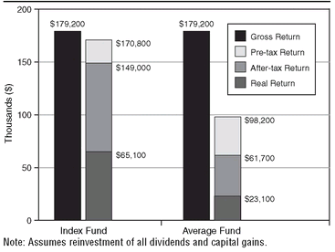
What’s more, just as fund expenses are paid in current dollars, so is your annual tax bill. When we calculate the accumulated wealth in terms of real dollars with 1980 buying power, investor wealth again contracts dramatically. The annual real return of the average equity fund now drops to 4.9 percent, less than 60 percent of the 8.4 percent actual return of the index fund. Compounded, the real after-tax accumulation on that initial $10,000 came to $65,100 for the index fund, nearly three times the $23,100 for the active equity index fund.
而且，正如基金费用是用当期美元支付的，你每年的税单也是如此。当我们用 1980 年购买力的实际美元来计算累积财富时，投资者的财富又一次大幅缩水。普通股票基金的年化实际回报此时降到 4.9%，不到指数基金 8.4% 实际回报的 60%。按复利计算，那笔初始 10,000 美元在指数基金里的税后实际累积达到 65,100 美元，几乎是主动管理的股票基金 23,100 美元的近三倍。
Even with the more subdued returns earned in the postbubble era, actively managed funds persist in foisting this extraordinarily costly tax inefficiency on their shareholders. While the net annual return of the average equity fund was 8.5 percent over the past decade (1996 to 2005), the tax bill consumed fully 1.7 percentage points of the return, reducing the net fund return to just 6.8 percent.
即便在泡沫破灭之后回报较为低迷的年代，主动管理基金也依然把这种代价高昂的税负低效强加给自己的持有人。过去十年（1996 年到 2005 年），普通股票基金的净年化回报为 8.5%，而税单足足吞掉了其中 1.7 个百分点，使基金的净回报只剩 6.8%。
I hesitate to assign the responsibility for being “the straw that broke the camel’s back” of equity fund returns to any single one of these negative factors. But surely the final straws include (1) high costs, (2) the adverse investor selections and counterproductive market timing described in Chapter 5, and (3) taxes. Whatever way one looks at it, the camel’s back is surely broken. But the very last straw, it turns out, is inflation.
我不愿把压垮股票基金回报这头骆驼的「最后一根稻草」归咎于上述任何一个负面因素。但毫无疑问，最后这几根稻草包括：（1）高昂的成本；（2）第 5 章讲过的投资者错误选择与适得其反的市场择时；（3）税。不管从哪个角度看，这头骆驼的背确实已经被压垮了。而事实证明，最后那根稻草是通胀。
Fund returns are devastated by costs, taxes, and inflation.
When we pay our fund costs in current dollars, year after year—and that’s exactly how we pay our fund expenses and our taxes on fund capital gains (often realized on a short-term basis, to boot)—and yet accumulate our assets only in real dollars, eroded by the relentless rise in the cost of living that seems imbedded in our economy, the results are devastating. It is truly remarkable—and hardly praiseworthy—that this devastation is virtually ignored in the information that fund managers provide to fund investors.
当我们年复一年地用当期美元支付基金成本——我们支付基金费用、以及为基金资本利得缴税（而且这些利得往往还是短期实现的），用的正是这种钱——而资产的积累却只能按实际美元来算，被那种似乎已深植于我们经济之中的生活成本持续上涨不断侵蚀，结果就是毁灭性的。真正令人惊讶——也毫不值得称道——的是，基金经理提供给基金投资者的信息里，几乎完全无视这种毁灭。
A paradox: While the index fund is remarkably tax-efficient in managing capital gains, it turns out to be relatively tax-inefficient in distributing dividend income. Why? Because its rock-bottom costs mean that nearly all the dividends paid on the stocks held by the low-cost index fund actually flow directly into the hands of the index fund’s shareholders. With the high expense ratios incurred by managed funds, however, only a tiny portion of the dividends that the funds receive actually find their way into the hands of the fund’s shareholders.
一个悖论：指数基金在管理资本利得方面税负效率极高，但在派发股息收入时，税负效率却相对较低。为什么？因为它极低成本的特性意味着，低成本指数基金所持股票派发的股息，几乎全部直接流入指数基金持有人手中。而主动管理基金承担着高额费用率，它们收到的股息里只有极小一部分才真正落到基金持有人手上。
Here is the unsurprising and ever relentless arithmetic: the annual gross dividend yield earned by the typical active equity fund before deducting fund expenses is about the same as the dividend yield of the low-cost index fund—1.8 percent in late-2006. But after deducting the 1.5 percent of expenses borne by the typical active fund, its net dividend yield drops to just 0.3 percent (!) for its owners. Fund operating costs and fees confiscate fully 80 percent of its dividend income, a sad reaffirmation of the eternal position of fund investors at the bottom of the mutual fund food chain.
这组算术既不令人意外，也一如既往地无情：典型的主动股票基金在扣除基金费用之前赚到的年度毛股息率，与低成本指数基金的股息率大致相同——2006 年底都是 1.8%。但扣掉典型主动基金承担的 1.5% 费用之后，其净股息率在持有人手里只剩 0.3%（！）。基金的运营成本和费用足足没收了其股息收入的 80%，这悲哀地再次印证了基金投资者永远处在共同基金食物链最底层的位置。
The expense ratio of a low-cost index fund is about 0.15 percent, consuming only 8 percent of its 1.8 percent dividend yield. The result: a net yield of 1.65 percent to distribute to the passively managed index fund owners, a dividend merely 5.5 times as high as the dividend yield of 0.3 percent on the actively managed fund.
低成本指数基金的费用率约为 0.15%，只消耗了其 1.8% 股息率中的 8%。结果是：可分配给被动管理指数基金持有人的净股息率为 1.65%，是主动管理基金 0.3% 股息率的 5.5 倍。
For taxable shareholders, that larger dividend is subject to the current 15 percent federal tax on dividend income, consuming about 0.27 percentage points of the yield. Paradoxically, the active fund, with an effective tax rate of just 0.045 percent (15 percent of the 0.3 percent net yield), appears more tax efficient from a dividend standpoint. But the reality is that the tax imposed by the active managers in the form of the fees it deducts before paying those dividends has already consumed 80 percent of the yield. The wise investor will seek the dividend “tax-inefficiency” of the index fund dividend rather than the “tax-efficiency” of most actively managed funds engendered by their confiscatory operating costs.
对应税持有人来说，这笔更大的股息要按现行 15% 的联邦股息所得税纳税，约占该股息率的 0.27 个百分点。说来矛盾，主动基金的实际税率只有 0.045%（即 0.3% 净股息率的 15%），从股息角度看反而显得税负效率更高。但事实是，主动管理者以派息前扣除费用的方式所征收的「税」，早已吞掉了 80% 的股息率。明智的投资者会去追求指数基金股息那种「税负低效」，而不是多数主动管理基金因掠夺性运营成本而带来的「税负高效」。
Chapter Seven
What Happens If Future Returns Are Lower?
REMEMBER THE UNFAILING principle described in Chapter 2: in the long run it is the reality of business—the dividend yields and earnings growth of corporations—that drives the returns generated by the stock market. However, I must warn you that during the past 25 years—the period examined in the three preceding chapters—the 12.5 percent nominal annual return provided by the U.S. stock market included a speculative return of nearly 3 percent per year, far above the business reality.
请记住第 2 章描述的那条颠扑不破的原则：从长远看，驱动股市回报的是商业的现实——企业的股息率和盈利增长。不过我得提醒你，在过去 25 年——也就是前三章考察的那段时期——美国股市提供的 12.5% 名义年化回报中，包含了每年近 3% 的投机性回报，远远超出了商业现实本身。
Recall that the century-plus nominal investment return earned by stocks was 9.5 percent, consisting of an average dividend yield of 4.5 percent and average annual earnings growth of 5.0 percent. A mere 0.1 percent per year—what I described as speculative return—was added by the rise in the price/earnings ratio from 15 times at the beginning of the period to 18 times at its end, bringing the total annual return to 9.6 percent.16
回想一下，股票在一个多世纪里取得的名义投资性回报为 9.5%，其中包含平均 4.5% 的股息率和平均每年 5.0% 的盈利增长。市盈率从这段时期初的 15 倍升到期末的 18 倍，每年只额外贡献了 0.1%——也就是我所说的投机性回报——使年化总回报达到 9.6%。
Paradoxically, the investment return earned by stocks over the past 25 years was hardly extraordinary. A dividend yield averaging 3.4 percent plus annual earnings growth of 6.4 percent brought it to 9.8 percent, almost precisely equal to the historical norm of 9.5 percent. But, illustrating the difficulty of forecasting changes in the amount that investors are willing to pay for each dollar of corporate earnings, the speculative return was anything but normal.
说来矛盾，股票在过去 25 年取得的投资性回报并不算特别突出。平均 3.4% 的股息率加上 6.4% 的年盈利增长，把投资性回报推到 9.8%，几乎恰好等于 9.5% 的历史常态。但是——这也正说明预测投资者愿意为每一美元企业盈利支付多少钱有多难——投机性回报却完全不正常。
Common sense tells us that we’re facing an era of subdued returns in the stock market.
As investor confidence rose, so did the price/earnings (P/E) ratio rise—from 9 times to 18 times, an amazing 100 percent increase, adding fully 2.7 percentage points per year—almost 30 percent—to the solid 9.8 percent fundamental return. (Early in 2000, the P/E ratio had actually risen to an astonishing 32 times, only to plummet to 18 times as the new economy bubble burst.) Result: speculative return was responsible for more than 20 percent of the market’s 12.5 percent annual return during this period. Since it is unrealistic to expect the P/E ratio to double in the coming decade, a similar 12.5 percent return is unlikely to recur. Common sense tells us that we’re facing an era of subdued returns in the stock market (Exhibit 7.1).
随着投资者信心上升，市盈率也随之攀升——从 9 倍升到 18 倍，涨幅高达 100%，每年足足给扎实的 9.8% 基本面回报添上 2.7 个百分点——将近 30%。（2000 年初，市盈率实际上曾暴涨到惊人的 32 倍，等到新经济泡沫破灭，又暴跌回 18 倍。）结果是：在这段时期股市 12.5% 的年化回报中，投机性回报贡献了 20% 以上。既然指望市盈率在未来十年再翻一倍并不现实，类似的 12.5% 回报也就难以重现。常识告诉我们，我们正面临一个股市回报低迷的时代（见 Exhibit 7.1）。
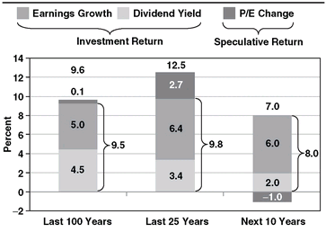
Why? First, because today’s dividend yield on stocks is not 4.5 percent (the historical rate), but slightly below 2 percent. Thus we can expect a dead-weight loss of 2.5 percentage points per year in the contribution of dividend income to investment return. Let’s assume that corporate earnings will continue (as, over time, they usually have) to grow at about the pace of our economy’s expected nominal growth rate of 5 or 6 percent per year over the coming decade. If that’s correct, then the most likely investment return on stocks would be in the range of 7 to 8 percent. I’ll be optimistic and project an annual investment return (a bit nervously!) averaging 8 percent.
为什么呢？首先，因为今天的股票股息率不是 4.5%（历史水平），而是略低于 2%。因此，股息收入对投资性回报的贡献，每年会白白损失 2.5 个百分点。我们不妨假设，未来十年企业盈利将继续以大致相当于经济预期名义增速的步伐增长，即每年 5% 或 6%（长期来看它们通常如此）。若果真如此，股票最可能的投资性回报就在 7% 到 8% 之间。我且乐观一点，预计年化投资性回报平均为 8%（说这话时我心里有点打鼓！）。
Second, the present price/earnings multiple on stocks looks to be about 18 times based on the trailing 12-month reported earnings of the S&P 500 (16 times if we use projected operating earnings, which exclude write-offs for discontinued business activities). If it remains at that level a decade hence, speculative return would neither add to nor detract from that possible 8 percent investment return. My guess (it is little more than that) is that the P/E might ease down to, say, 16 times, reducing the market’s return by about 1 percentage point a year, to an annual rate of 7 percent. You don’t have to agree with me. If you think it will leap to 25 times, add 3 percentage points, bringing the total return on stocks to 11 percent. If you think it will drop to 12 times, subtract 4 percentage points; reducing the total return on stocks to 4 percent.
其次，按标普500指数过去 12 个月的报告盈利计算，目前股票的市盈率看起来约为 18 倍（若采用剔除终止业务活动减记的预期营业盈利，则为 16 倍）。如果十年后它仍停留在这一水平，那么投机性回报既不会为那可能的 8% 投资性回报添彩，也不会拖它后腿。我猜（也仅仅是猜而已）市盈率可能会回落到比如 16 倍，从而把市场回报每年压低约 1 个百分点，降至 7% 的年化水平。你不必同意我的看法。如果你认为它会蹿升到 25 倍，那就加上 3 个百分点，股票总回报将达到 11%。如果你认为它会跌到 12 倍，那就减去 4 个百分点，股票总回报将降至 4%。
If rational expectations suggest future annual returns of about 7 percent on stocks, what does this imply for returns on equity funds?
Now assume that 7 percent is a rational expectation for future stock market returns. To calculate the return for the average actively managed equity mutual fund in such an environment, simply remember the humble arithmetic of fund investing: nominal market return, minus investment costs, minus taxes (reduced to reflect lower capital gains realization), minus an assumed inflation rate of 2.3 percent (the rate the financial markets are now expecting over the coming decade) equals just 1.4 percent per year (Exhibit 7.2). I simply didn’t have the courage to make another deduction to reflect the impact of the counterproductive timing and adverse fund selection that will likely continue to bedevil the typical fund shareholder. It may seem absurd to project such a low return for the typical equity fund investor. But the numbers are there. Again, feel free to disagree and to project the future using your own rational expectations.
现在假设 7% 是对未来股市回报的理性预期。要算出这样的环境下普通主动管理股票共同基金的回报，只需记住基金投资那套朴素的算术：市场名义回报，减去投资成本，减去税（因资本利得实现额较低而下调），再减去假设 2.3% 的通胀率（金融市场目前对未来十年预期的水平），结果每年只剩 1.4%（见 Exhibit 7.2）。我实在没有勇气再扣掉一项，去反映那种很可能继续困扰普通基金持有人的适得其反的择时和错误选择所带来的影响。为普通股票基金投资者预测如此之低的回报，看上去也许荒谬。但数字就摆在那里。再说一次，你尽可不同意，尽可用你自己的理性预期去展望未来。
In summary, the future outlook for stock returns is far below the long-term real return on U.S. stocks of about 6.5 percent annually. My projection of a future real return of 4.7 percent (before costs and taxes) is conservative largely because today’s dividend yield of 2 percent is below the long-term norm of 4.5 percent, partially offset by my optimistic projection of real earnings growth of 2.5 percent per year versus the 1.5 percent long-term norm. The real long-term rate of per share earnings growth of U.S. corporations has been no more than that humble figure. As suggested earlier, some experts put the figure at only 1 percent on an earnings per share basis.
总而言之，股票回报的未来前景，远远低于美国股票约 6.5% 的长期实际年化回报。我预测未来的实际回报为 4.7%（未扣成本与税负），这个预测偏保守，主要是因为今天 2% 的股息率低于 4.5% 的长期常态；而这一拖累被我乐观预测的每年 2.5% 实际盈利增长部分抵消——长期常态只有 1.5%。美国企业每股盈利的长期实际增长率，从未超过这个不起眼的数字。正如前面提到的，有些专家认为按每股盈利计算，这个数字只有 1%。
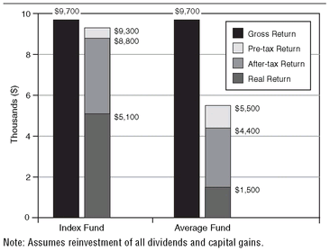
In any event, in a likely future environment of lower returns on equities, the low-cost, tax-efficient index fund would provide even higher real returns relative to actively managed equity funds than the enormous advantage it has achieved over the past quarter century. Yes, a real 10-year gain of $5,100 on a $10,000 investment in the index fund is nothing to write home about. But what’s to be said about the mere $1,500 profit that could well be what the typical managed equity fund delivers?
无论如何，在未来股票回报可能较低的环境里，低成本、税负效率高的指数基金相对于主动管理股票基金所能提供的实际回报优势，将比它过去 25 年取得的巨大优势还要大。没错，在指数基金上投入 10,000 美元、十年实际增值 5,100 美元，算不上什么值得炫耀的成绩。但普通主动管理股票基金很可能只交出区区 1,500 美元的利润，这又该怎么说呢？
Unless the fund industry begins to change, the typical actively managed fund appears to be a singularly unfortunate investment choice.
The fact is that lower returns harshly magnify the relentless arithmetic of excessive mutual fund costs, even ignoring all those unnecessary taxes. Why? While costs of 2.5 percentage points would consume “only” 16 percent of a 15 percent return and “only” 25 percent of a 10 percent return, such costs would consume nearly 40 percent of a 7 percent nominal return and (I hope you’re sitting down) nearly 60 percent of the 4.5 real return on stocks that rational expectations suggest. Unless the fund industry begins to change—by reducing management fees, operating expenses, sales charges, and portfolio turnover, with its attendant costs—the typical actively managed fund appears to be a singularly unfortunate choice for investors.
事实是，即便完全忽略那些本不必要的税，更低的回报也会严酷地放大共同基金过高成本那套无情的算术。为什么？2.5 个百分点的成本，在 15% 的回报里「只不过」占 16%，在 10% 的回报里「只不过」占 25%；但这样的成本会吃掉 7% 名义回报的近 40%，还会吃掉（希望你先坐下）理性预期所暗示的股票 4.5% 实际回报的近 60%。除非基金行业开始改变——降低管理费、运营费用、销售费，以及组合换手率及其附带的成本——否则典型的主动管理基金对投资者来说，看来是一个格外不幸的选择。
The 1.2 percent expected annual real return that the average equity fund might deliver is unacceptable. What can equity fund investors do to avoid being trapped by these relentless rules of arithmetic, so devastating when applied to future returns that are likely to be well below long-term norms? There are at least five options for improving on it: (1) Select winning funds on the basis of their long-term past records. (2) Select winning funds on the basis of their recent short-term performance. (3) Get some professional advice in selecting funds that are likely to outpace the market. (4) Select funds with rock-bottom costs, minimal portfolio turnover, and no sales loads. Or (5) Select a low-cost index fund that simply holds the stock market portfolio.
普通股票基金可能交出的 1.2% 预期实际年化回报，令人无法接受。股票基金投资者该怎么做，才能不被这套无情的算术规则困住——当它作用于很可能远低于长期常态的未来回报时，破坏力尤其惊人？至少有以下五种改进方案：（1）根据长期历史业绩挑选赢家基金；（2）根据近期短期表现挑选赢家基金；（3）请专业人士帮忙挑选那些有望跑赢市场的基金；（4）挑选成本低到极点、组合换手率极低、且不收销售费的基金；或者（5）选择一只只持有整个股市组合的低成本指数基金。
In Chapters 8 through 12, we’ll examine each of these options.
从第 8 章到第 12 章，我们将逐一考察这些方案。
Chapter Eight
Don’t Look for the Needle—Buy the Haystack.
SELECTING WINNING FUNDS in advance is more difficult than it looks. Sure, there are always some winners that survive over the years. And if we pore over records of past performance, it is easy to find them. The mutual funds we hear the most about are those that have lit up the skies with their glow of past success. We don’t hear much about those that did well for a while—even for a long while—and then faltered. And when they falter, they often go out of business, consigned to the dustbin of mutual fund history. But easy as it is to identify past winners, there is little evidence that such performance persists in the future.
事先挑出赢家基金，比看上去要难。没错，总有一些赢家能在多年之后存活下来。如果我们仔细翻阅历史业绩记录，找出它们并不难。我们听到最多的共同基金，是那些曾以昔日辉煌照亮天空的基金。至于那些一度表现不错——甚至好上很长一段时间——随后却失灵的基金，我们很少听说。而一旦失灵，它们往往就关门大吉，被扫进共同基金历史的故纸堆。可是，认出过去的赢家固然容易，却几乎没有证据表明这样的业绩能在未来延续。
Let’s begin by considering the records of funds that have won over the long term. Exhibit 8.1 goes back to 1970 and shows the 36-year records of the 355 equity funds that existed at the start of that period. The first and most obvious surprise awaits you: fully 223 of those funds—almost twothirds—have gone out of business. If your fund doesn’t last for the long term, how can you invest for the long term?
我们先来看看那些长期获胜的基金的业绩记录。Exhibit 8.1 追溯到 1970 年，展示了当时已存在的 355 只股票基金在随后 36 年里的业绩。头一个、也是最显眼的意外在等着你：这些基金中有整整 223 只——将近三分之二——已经关门。如果你选的基金都撑不到长期，你又怎么谈得上长期投资呢？
You can safely assume it was not the best performers that have gone to their well-earned demise; it was the laggards that disappeared. Sometimes their managers moved on. (The average fund portfolio manager, in fact, lasts just five years.) Sometimes giant financial conglomerates acquired their management companies, and the new owners decided to “clean up the product line.” (These conglomerates, truth told, are in business primarily to earn a return on their capital, not on the fund investor’s capital.) Funds with lagging performance saw their investors flee, and they became a drag on their managers’ profits. There are many reasons that funds disappear, few of them good.
你大可放心，走向应得终结的并不是那些业绩最好的基金，消失的是落后者。有时是它们的经理另谋高就。（事实上，基金组合经理的平均任期只有五年。）有时是庞大的金融集团收购了它们的基金管理公司，新东家决定「清理产品线」。（说句实话，这些集团做生意的首要目的是让自己的资本获得回报，而不是让基金投资者的资本获得回报。）业绩落后的基金眼看着投资者纷纷撤离，于是成了拖累基金管理公司利润的包袱。基金消失的原因很多，其中没几个是好事。
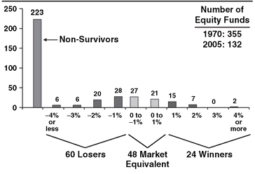
A death in the family.
Even funds with solid long-term records go out of business. Often, their management companies are acquired by marketing companies whose ambitious executives conclude that, however good the funds’ early records, they are not exciting enough to draw huge amounts of capital from new investors. The funds have simply outlived their usefulness. In other cases, a few years of faltering performance does the job. Sadly, the second oldest fund in the entire mutual fund industry was a recent victim of these attitudes, put out of business by a new owner of its management company. After surviving all the tempestuous markets of the past 80 years: State Street Investment Trust, 1925-2005, R.I.P. As one of the longest-serving participants in the fund industry, who clearly remembers the classy record of this fund over so many years, I regard the loss of State Street as a death in the family.
即便是拥有扎实长期业绩的基金也会关门。它们的基金管理公司常常被营销公司收购，后者雄心勃勃的高管们断定：不管这些基金早年业绩多好，都不足以吸引新投资者投入巨额资本。这些基金只是不再有利用价值了。还有些情况，几年失灵的表现就足够要命。令人痛心的是，整个共同基金行业排名第二老的基金，最近就成了这种态度的牺牲品，被其基金管理公司的新东家关停。在熬过了过去 80 年所有动荡的市场之后：State Street Investment Trust，1925–2005，安息吧。作为基金行业资历最深的从业者之一，我清清楚楚记得这只基金多年来那份上乘的业绩，在我看来，失去 State Street 就像家族里的一场死亡。
In any event, 223 of the equity funds of 1970 are gone, mostly the poor performers. Another 60 remain, yet significantly underperformed the S&P 500 by more than 1 percentage point per year. Together, then, 283 funds—nearly 80 percent of the funds among those original 355—have, one way or another, failed to distinguish themselves. Another 48 funds provided returns within one percentage point, plus or minus, of the return of the S&P 500—market-matchers, as it were.
无论如何，1970 年的股票基金中有 223 只已经消失，大多是业绩差的。另有 60 只仍在，但每年跑输标普500指数 1 个百分点以上。于是合计下来，283 只基金——占最初那 355 只的近 80%——以这样或那样的方式，未能让自己脱颖而出。另有 48 只基金的回报落在标普500指数回报上下 1 个百分点之内——可以说是与市场并驾齐驱者。
That leaves just 24 mutual funds—only one out of every 14—that outpaced the market by more than one percentage point per year. Let’s face it: those are terrible odds! What’s more, the margin of superiority of 15 of those 24 funds over the S&P 500 was less than 2 percentage points per year, a superiority that may be due as much to luck as to skill.
这样就只剩下 24 只共同基金——每 14 只里才有一——每年跑赢市场 1 个百分点以上。面对现实吧：这样的胜算糟透了！而且，这 24 只中有 15 只相对标普500指数的领先幅度每年不足 2 个百分点，这种领先可能更多来自运气，而非能力。
That still leaves us with nine solid long-term winners. It is a tremendous accomplishment to outpace the market by 2 percentage points or more of annual return over 35 years. Make no mistake about that. But, here a curious—perhaps almost obvious—fact emerges (Exhibit 8.2). Six of those nine winners achieved their superiority many years ago, often when they were of small size.
这样还剩九只扎实的长期赢家。35 年里年化回报领先市场 2 个百分点甚至更多，是了不起的成就。这一点毋庸置疑。但是，一个耐人寻味——或许几乎是显而易见——的事实浮现出来（见 Exhibit 8.2）。这九只赢家中有六只，是在很多年前、往往还是在规模很小时取得那份优势的。
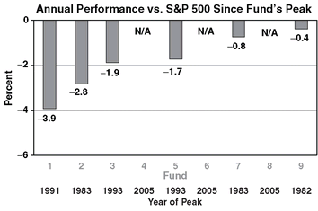
When the accomplishments of these nine successful mutual funds were noticed by investors, cash poured in, and they got large. But, as Warren Buffett reminds us, “a fat wallet is the enemy of superior returns.” And so it was. As they grew, the records of six of them turned lackluster. One fund reached its performance peak way back in 1982, 24 long years ago. On balance, it has lagged ever since. Two others peaked in 1983. The remaining three peaked no more recently than 1993, more than a decade ago. (One of these was Peter Lynch’s legendary Fidelity Magellan Fund, which has now been struggling for 13 years.)
当这九只成功共同基金的成就被投资者注意到后，资金蜂拥而入，它们的规模也随之变大。但正如沃伦·巴菲特（Warren Buffett）提醒我们的：「鼓鼓的钱包是优异回报的敌人。」事实果然如此。随着规模扩大，其中六只的业绩变得平平无奇。有一只早在 1982 年就达到了业绩巅峰，距今已整整 24 年。总体来看，它自那以后一直落后。另有两只在 1983 年见顶。其余三只最晚也不过在 1993 年见顶，已是十多年前的事。（其中就有彼得·林奇（Peter Lynch）那只传奇的富达麦哲伦基金，如今它已经挣扎了 13 年。）
That leaves just three funds. Only three out of the 355 equity funds that started the race in 1970—only 8/10 of 1 percent—have both survived and mounted a record of sustained excellence. Identified in Exhibit 8.2 as funds 4, 6, and 8, I now salute them by name: Davis New York Venture, Fidelity Contrafund, and Franklin Mutual Shares. Hail to the victors!
这样就只剩三只基金。1970 年一同起跑的 355 只股票基金中，只有三只——仅占 1% 的 8/10——既存活了下来，又积累了持续卓越的业绩记录。Exhibit 8.2 把它们标为基金 4、基金 6 和基金 8，我现在点名向它们致敬：Davis New York Venture、Fidelity Contrafund 和 Franklin Mutual Shares。向胜利者致敬！
Only three out of the 355 equity funds that started the race in 1970—8/10 of 1 percent—have survived and mounted a record of sustained excellence.
Significantly, while the portfolio managers for these three funds have changed over the years, the changes have been infrequent. Succeeding his father Shelby C. Davis, Chris Davis has managed the Davis Fund since 1991 (since 1996, with Kenneth Feinberg). Will Danoff has been the lead manager of Fidelity Contrafund since 1990, and Michael Price managed Franklin until 1997, followed by a successor who ran the fund until 2005.
值得注意的是，尽管这三只基金的组合经理多年来有所更替，但更替并不频繁。克里斯·戴维斯（Chris Davis）接替其父亲谢尔比·C·戴维斯（Shelby C. Davis），自 1991 年起管理 Davis 基金（1996 年起与 Kenneth Feinberg 共同管理）。威尔·丹诺夫（Will Danoff）自 1990 年起担任富达 Contrafund 的首席经理，迈克尔·普莱斯（Michael Price）管理 Franklin 直到 1997 年，之后由一位继任者管理到 2005 年。
But before you rush out to invest in these three funds with such truly remarkable long-term records, think about the next 35 years. Think about the odds that they will continue to outperform. Think about their present size. Think about the fact that within that time frame they are all virtually certain to have at least several new managers. Think, too, about the odds that these funds will even exist 35 years hence. It is a changing and competitive world out there in mutual fund land, and no one knows what the future holds. But I wish these managers and the shareholders of the funds they run the very best of luck.
不过，在你急着去投资这三只长期业绩确实非凡的基金之前，先想想接下来的 35 年。想想它们继续保持领先的概率。想想它们目前的规模。想想这样一个事实：在这段时间里，它们几乎肯定会至少换上好几任新经理。再想想它们 35 年后是否还存在。共同基金这片天地是一个不断变化、充满竞争的世界，没人知道未来会怎样。但我祝愿这些经理、以及他们所管基金的持有人，好运连连。
Before you rush out to invest in these three funds with such truly remarkable long-term records, think about the next 35 years.
Conspicuous by its absence from this list of winning funds is Legg Mason Value Trust, managed since its 1982 inception by legendary investment professional supreme, Bill Miller. Since the fund did not begin operations until 1982, it is not on my list. But it provides several lessons about fund performance. Miller, something of a contrarian, is the only manager in the past four decades to out-perform the S&P 500 for a truly remarkable 15 consecutive years (1991 to 2005, inclusive). Despite his great ability, the ever-humble Miller would be, I think, the first to agree with the late Harvard University paleontologist Stephen Jay Gould’s tenet that “long streaks are extraordinary luck imposed on great skill.”
这份赢家基金名单上，Legg Mason Value Trust 的缺席格外引人注目——该基金自 1982 年成立起便由传奇的顶级投资专家比尔·米勒（Bill Miller）管理。由于它 1982 年才开始运作，所以没有进入我的名单。但它提供了若干关于基金业绩的教训。米勒颇有逆向投资者的色彩，是过去四十年里唯一一位连续 15 年（1991 年至 2005 年，含首尾）跑赢标普500指数的经理，实在了不起。尽管能力出众，我想，一向谦逊的米勒会是第一个赞同已故哈佛大学古生物学家斯蒂芬·杰伊·古尔德（Stephen Jay Gould）那句话的人：「长连胜是施加在卓越能力之上的非凡运气。」
Just like Joe DiMaggio’s remarkable 56-game hitting streak in baseball, the longer Miller’s streak extended, the more attention it got, and the more investor dollars flowed into the fund. But in 2006, his streak came to an end, even as did the streak of the Yankee Clipper years earlier. With the S&P 500 up 15.8 percent in 2006, Legg Mason Value was up only 5.8 percent, trailing the index by 10.0 percentage points, putting something of a dent in the long-term record.
就像乔·迪马乔（Joe DiMaggio）在棒球场上那惊人的连续 56 场比赛安打纪录一样，米勒的连胜延续得越久，受到的关注就越多，流入基金的资金也越多。但 2006 年，他的连胜终结了，正如多年前这位「扬基快帆」的纪录也终结了一样。2006 年标普500指数上涨 15.8%，而 Legg Mason Value 只涨了 5.8%，落后指数 10.0 个百分点，给它的长期业绩记录留下了一道疤痕。
Through 2005, the fund’s annual rate of return had averaged 15.3 percent per year, compared with 12.9 percent for the S&P 500, a nice annual edge of 2.4 percentage points. But by 2006, the gap had shrunk to 1.9 percentage points, with an annual time-weighted return averaging 14.9 percent, compared with 13.0 percent for the index. Unsurprisingly, the major inflows of investor capital did not begin until 1997, the seventh year of the streak. So the actual return earned by Legg Mason Value’s shareholders was a sharply lower 10.3 percent, far below its reported return. Is Miller’s reversion toward and then below the market mean temporary or enduring? Will the fund be afflicted with the same malaise that attacked six of those nine long-term winners just discussed? Or is it merely a brief interval of bad luck. Who can know?
截至 2005 年，该基金的年化回报平均为每年 15.3%，而标普500指数为 12.9%，每年领先 2.4 个百分点，成绩不俗。但到 2006 年，差距缩小到 1.9 个百分点，年化时间加权回报平均为 14.9%，指数为 13.0%。毫不意外，投资者资本的大规模流入直到 1997 年、也就是连胜的第七年才开始。因此，Legg Mason Value 持有人实际赚到的回报只有 10.3%，远低于它对外报告的回报。米勒向市场均值回归、继而跌到均值以下，究竟是暂时还是持久？这只基金会像刚才讨论的那九只长期赢家中的六只那样，被同样的病症缠上吗？还是说这不过是运气不好的一小段时间？谁能知道呢？
Whatever the case, the odds in favor of owning a consistently successful equity fund are less than one out of a hundred. However one slices and dices the data, there can be no question that funds with long-serving portfolio managers and records of consistent excellence are the exception rather than the rule in the mutual fund industry. The simple fact is that selecting a mutual fund that will outpace the stock market over the long term is, using Cervantes’ wonderful observation, like “looking for a needle in the haystack.” So I offer you Bogle’s corollary: “Don’t look for the needle in the haystack. Just buy the haystack!”
无论如何，能持有一只持续成功的股票基金的胜算不到百分之一。不管怎么切分这些数据，有一点毫无疑问：在共同基金行业里，拥有任职长久的组合经理、业绩持续卓越的基金，是例外而非常态。简单的事实是，挑出一只能长期跑赢股市的共同基金，用塞万提斯（Cervantes）那句绝妙的说法，就像「在草堆里找一根针」。所以，我献上博格（Bogle）的推论：「别在草堆里找那根针。干脆把整个草堆买下来！」
Funds with long-serving portfolio managers and records of consistent excellence are the exception rather than the rule in the mutual fund industry.
The haystack, of course, is the entire stock market portfolio, readily available through a low-cost index fund. The return of such a fund would have roughly matched or exceeded the returns of 346 of the 355 funds that began the 35-year competition described earlier in this chapter. And I see no reason that the same fund cannot achieve a roughly commensurate achievement in the years to come—not through any legerdemain, but merely through the relentless rules of arithmetic that you now must know so well.
这个草堆，当然就是整个股市组合，通过一只低成本指数基金就能轻松获得。这样一只基金的回报，大致相当于、甚至超过了本章前面提到的 35 年竞赛里那 355 只基金中的 346 只。我看不出有什么理由认为同一只基金无法在未来取得大致相当的成绩——不是靠什么戏法，而只是靠那套无情的算术规则，如今你对它想必已经烂熟于心了。
We know that the index fund will deliver substantially all of the stock market’s return. But with all the fund manager changes that will inevitably be forthcoming for actively managed funds; with all the funds that will die; with the successful funds drawing capital in amounts that will preclude their future success; and with our inability to be certain how much of a fund’s performance is based on luck and how much on skill, there is simply no way to assure success by picking the funds that will beat the market, even by looking to their past performance over the long term. In fund performance, the past is rarely prologue.
我们知道，指数基金会交出股市回报的绝大部分。但考虑到主动管理基金不可避免会迎来那么多经理更替；那么多基金会消亡；成功的基金会因吸引来巨额资本而使自己未来难以延续成功；再加上我们无法确定一只基金的业绩里有多少靠运气、多少靠能力，想靠挑选能战胜市场的基金来保证成功，根本无从谈起，哪怕去考察它们长期的历史业绩也一样。在基金业绩这件事上，过去很少是未来的序幕。
Chapter Nine
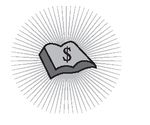
Fooled by Randomness17
IN SELECTING MUTUAL FUNDS, most fund investors seem to rely, not on sustained performance over the long term, but on exciting performance over the short term. (Exhibits 5.2 and 5.3 in Chapter 5 reinforce this point.) Studies show that 95 percent of all investor dollars flow to funds rated four or five stars by Morningstar, the statistical service most broadly used by investors in evaluating fund returns.
在选择共同基金时，多数基金投资者似乎并不是看长期持续的表现，而是看短期内激动人心的表现。（第 5 章的 Exhibit 5.2 和 5.3 印证了这一点。）研究表明，投资者投入的全部资金中有 95% 流向了晨星评级为四星或五星的基金——晨星是投资者评估基金回报时使用最广泛的统计服务机构。
These “star ratings” are based on a composite of a fund’s record over the previous 3-, 5-, and 10-year periods. (For younger funds, the ratings may cover as few as three years.) As a result, the previous two years’ performance alone accounts for 35 percent of the rating of a fund with 10 years of history and 66 percent for a fund in business from three to five years, a heavy bias in favor of recent short-term returns.
这些「星级评价」依据的是基金过去 3 年、5 年和 10 年业绩的综合表现。（对于成立较晚的基金，评级所覆盖的时间可能短至三年。）结果是，仅最近两年的表现，就占了一只有 10 年历史基金评级的 35%；而对于成立三到五年的基金，这一比例高达 66%——明显严重偏向近期的短期回报。
How successful are fund choices based on the number of stars awarded for such short-term achievements? Not very! According to investment analyst Mark Hulbert, a mutual fund portfolio continuously adjusted to hold only Morningstar’s five-star funds earned an annual return of just 6.9 percent between 1994 and 2004, nearly 40 percent below the 11.0 percent return on the Total Stock Market Index.18 To make matters worse, according to Hulbert, these highly rated funds were assuming even more risk than the market (average monthly volatility in asset value: 16 percent for the funds compared with 15 percent for the stock market).
那么，依据这类短期成绩所获得的星数来挑选基金，效果如何？并不怎么样！投资分析师 Mark Hulbert 指出，一个持续调整、始终只持有晨星五星基金的共同基金组合，在 1994 年到 2004 年间的年回报率仅为 6.9%，比全市场股票指数 11.0% 的回报率低了将近 40%。更糟的是，据 Hulbert 说，这些高评级基金承担的风险甚至比市场还大（资产价值的月均波动率：这些基金为 16%，而股市为 15%）。
Sadly, the orientation of fund investors toward recent short-term returns works worst in strong bull markets. Exhibit 9.1 shows the top 10 performers among the 851 equity funds in operation during the great “new economy” market bubble of 1997 to 1999. A wondrous group they were! Focused on Internet, telecom, and technology stocks, these funds generated an average return of 55 percent per year during the upswing—a cumulative return of 279 percent for the full three years. Remarkable!
遗憾的是，基金投资者对近期短期回报的这种偏好，在强劲的牛市里造成的后果最糟。Exhibit 9.1 展示了 1997 至 1999 年那场「新经济」股市泡沫期间，851 只在运作的股票基金中表现最好的 10 只。这真是一群了不起的基金！它们集中投资互联网、电信和科技股，在上涨阶段年均回报率高达 55%——三年累计回报 279%。好不惊人！
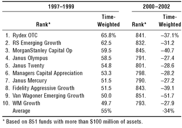
“The first shall be last.” And they were.
Well, you can guess what came next. The bubble burst, and, one by one, just as the Good Book warns, “The first shall be last.” Over the next three years (2000 to 2002 inclusive), every one of the original top 10 funds plummeted into the bottom 60, with not a single fund in the original top 10 ranked higher than 790. Fund 9 on the upside actually was last—851 on the downside. Fund 1 dropped in rank to 841; fund 2 dropped to 832, and fund 3 tumbled to 845. On average, the one-time 10 top funds in the bull market were outperformed by 95 percent of their peers in the bear market that followed. For investors who believed that the past would be prologue, it was not a pretty result.
接下来的事，你不难猜到。泡沫破灭了，正如《圣经》所警示的，「那在前的将要在后」——它们一个接一个地应验了。在随后三年（含 2000 至 2002 年）里，原先排名前 10 的基金全部跌进后 60 名，没有一只排到 790 名以上。上涨阶段排名第 9 的基金，下跌阶段实际上垫了底——第 851 名。基金 1 的排名跌至 841，基金 2 跌至 832，基金 3 更是跌到 845。平均而言，牛市里那 10 只一度领先的基金，在随后的熊市中被 95% 的同侪超越。对笃信「过去是未来的序幕」的投资者来说，这结果可不好看。
Please remember that even a single annual gain of 55 percent followed by a loss of 34 percent doesn’t leave the investor with a 21 percent gain. More like 2 percent. (Do the arithmetic.) And with 3 years of average annual gains of 55 percent on the upside and annual losses averaging 34 percent on the downside (Exhibit 9.2), it was much worse. These aggressive new-economy funds ended up with a cumulative positive return averaging 13 percent for the full 6-year period, a far cry from the S&P 500’s cumulative gain of 30 percent. Yet while that return was not particularly satisfactory in terms of the traditional returns reported by the average equity fund, it was hardly a disaster.
请记住，就算一年的收益有 55%，下一年亏掉 34%，投资者得到的也不是 21% 的收益，而是大约 2%。（自己算算看。）而在上涨时三年年均收益 55%、下跌时年均亏损 34%（Exhibit 9.2）的情况下，结果要糟得多。这些激进的新经济基金在整个 6 年间，最终累计正回报平均只有 13%，与标普500指数 30% 的累计涨幅相去甚远。不过，相对于平均股票基金所报告的传统回报而言，这个成绩虽然并不特别令人满意，却也谈不上灾难。
But for the shareholders of the funds, it was a disaster. By investing after seeing those mouth-watering cumulative returns that had averaged almost 280 percent, achieved in a soaring bull market, nearly all the buyers of these funds had missed the upside. Then, not a moment too soon, they caught the full force of the downside. Their funds tumbled by an astonishing average of 70 per-cent during the next three years. Result: While the funds themselves achieved a net gain of 13 percent, the investors in these funds incurred a loss of 57 percent. By investing in these once high-flying funds, more than half of the capital that investors had placed in these hot funds had gone up in smoke. The message is clear: avoid performance chasing based on short-term returns, especially during great bull markets.
但对这些基金的持有人来说，这却是场灾难。看到那些在飙涨的牛市中取得的、平均接近 280% 的累计回报之后才进场，几乎所有这些基金的买家都错过了上涨阶段。紧接着，一点都不算早地，他们又完整地承受了下跌的冲击。他们的基金在随后三年里平均暴跌了惊人的 70%。结果是：基金本身净赚 13%，而这些基金的投资者却亏损了 57%。由于投资这些曾经一飞冲天的基金，投资者投入这些热门基金的资金有一半以上化为乌有。教训很清楚：不要追逐基于短期回报的业绩，尤其是在大牛市期间。
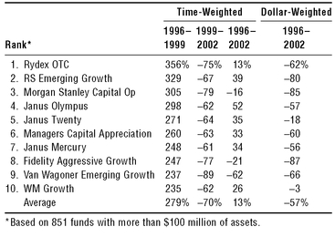
Though the results are hardly as dramatic, the “don’t chase past performance” principle also holds during more sedate stock markets. In my first book, Bogle on Mutual Funds, I compared the records of the 20 top-performing mutual funds during each year from 1982 through 1992 with their records in the subsequent year (Exhibit 9.3). As it happened, the top 20 funds of that ranked number one in each year had a subsequent average ranking of 284 among the list of 681 funds, outpacing 58 percent of their peers, or barely above average. During that period, the highest achievement on the 20-fund list was turned in by the number one funds, which averaged a rank of 100 in the subsequent year.
尽管结果远没有那么戏剧化，「不要追逐过往业绩」这一原则在更为平静的股市里同样成立。在我的第一本书《Bogle on Mutual Funds》中，我把 1982 年到 1992 年间每年的 20 只表现最好的共同基金的业绩，与它们随后一年的业绩作了比较（Exhibit 9.3）。碰巧的是，那些在每一年排名第一的前 20 只基金，其随后的平均排名在 681 只基金中是第 284 名，跑赢了 58% 的同侪，仅仅略高于平均水平。在那段时期，这 20 只基金名单上的最佳成绩由排名第一的基金取得，它们在后一年的平均排名为第 100 名。
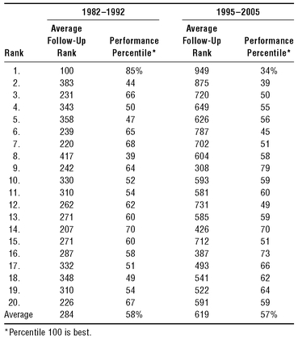
The clear reversion to the mean suggested by that single test represented powerful evidence that winning performance by a mutual fund is unlikely to be repeated. But there was no reason (except common sense) to assume that the 1982 to 1992 experience would recur. So, just for fun, I repeated the test in 2006, beginning with the top-performing 20 funds in 1995 and the top 20 funds in each of the nine subsequent years. I then checked the rank of each fund in the following year, just as before.
那次单独的检验所显示的明显均值回归，是有力证据，说明共同基金的制胜表现不太可能重演。但除了常识之外，并没有理由认定 1982 至 1992 年的经历会再度出现。于是，纯粹为了好玩，我在 2006 年重做了这项检验，从 1995 年表现最好的 20 只基金开始，再加上此后九年里每年的前 20 只基金。然后和上次一样，我逐一查看每只基金在下一年的排名。
In general, the results were remarkably similar. The average subsequent rank of the top 20 funds from 1995 through 2005 was 619, outpacing 57 percent of their peers and barely above the average fund among the 1,440 fund total—just as in the prior test. In an interesting reversal of fortune, however, the number one funds of that era turned out to have, not the highest subsequent ranking, but the lowest ranking among the top 20. These champions subsequently earned an average ranking of 949 among the 1,440-fund total, outpacing only 34 percent of their peers. While “the first can be first” sometimes, the first can be last at other times, a wonderful illustration of the inevitable randomness of fund performance.
总体来说，结果惊人地相似。1995 至 2005 年间，前 20 名基金随后的平均排名是第 619 名，跑赢了 57% 的同侪，在总共 1,440 只基金中仅略高于平均水平——与上一次检验如出一辙。不过，出现了一个有意思的命运反转：那个时期排名第一的基金，随后在 20 只基金中并非排名最高，反而排名最低。这些冠军基金随后的平均排名是 1,440 只中的第 949 名，只跑赢了 34% 的同侪。「第一名有时还能当第一」，但有时也会落到最后——这绝妙地说明，基金业绩的随机性是不可避免的。
The stars produced in the mutual fund field are rarely stars; all too often they are comets.
The message is clear: reversion to the mean (RTM)—in this case, the tendency of funds whose records substantially exceed industry norms to return to average or below—is alive and well in the mutual fund industry. In stock market blow-offs, “the first shall be last.” But in more typical environments, reversion to the fund mean—which, as we have seen in earlier chapters, substantially lags the return earned by a stock market index fund—is the rule. So please remember that the stars produced in the mutual fund field are rarely stars; all too often they are comets, lighting up the firmament for a brief moment in time and then flaming out, their ashes floating gently to earth.
教训很清楚：均值回归（RTM）——在这里指的是业绩大幅超出行业常态的基金倾向于回落到平均水平乃至更低——在共同基金行业里活得好好儿的。在股市狂热的行情里，「那在前的将要在后」。而在更平常的环境里，成为常态的则是向基金平均水平的回归——正如我们在前面几章所见，这个平均水平大幅落后于股票指数基金所赚取的回报。所以请记住，共同基金领域里制造出来的「明星」很少是恒星，往往只是彗星，短暂地照亮苍穹片刻，随即燃尽熄灭，灰烬缓缓飘落大地。
With each passing year, the reality is increasingly clear. Fund returns seem to be random. Yes, there are rare cases where skill seems to be involved, but it would require decades to determine how much of a fund’s success can be attributed to luck, and how much attributed to skill. And by then, you might ask yourself questions like these: (1) How long will that manager, with that staff and with that strategy, remain on the job? (2) If the fund’s assets are many times larger at the end of the period than at the beginning, will the same results that were attractive in the first place be sustained? (3) Will the stock market continue to favor the same kinds of stocks that have been at the heart of the manager’s style? In short, selecting mutual funds on the basis of short-term performance is all too likely to be hazardous duty, and it is almost always destined to produce returns that fall far short of those achieved by the stock market, itself so easily achievable through an index fund.
年复一年，现实越来越清楚：基金的回报似乎是随机的。没错，确有少数案例看来与本领有关，但要判断一只基金的成功有多少归因于运气、多少归因于本领，需要几十年的时间。而到那时，你或许会问自己这样一些问题：（1）那位经理、带着那套班底和那套策略，还会在这个岗位上待多久？（2）如果期末这只基金的资产规模比期初大出许多倍，当初那些吸引人的业绩还能维持下去吗？（3）股市还会继续青睐那些一直是该经理风格核心的那类股票吗？总而言之，依据短期业绩挑选共同基金，多半是一份危机四伏的差事，而且几乎注定会带来远远不及股市本身的回报——而股市的回报，通过一只指数基金就能轻松获得。
Chapter Ten
Look before You Leap.
THE EVIDENCE PRESENTED in Chapters 8 and 9 teaches two lessons: (1) Selecting winning equity funds over the long term bears all the potential success of looking for the needle in the haystack; and (2) Selecting winning funds based on their performance over relatively short-term periods in the past is all too likely to lead, if not to disaster, at least to disappointment.
第 8 章和第 9 章给出的证据教给我们两条教训：（1）要长期挑出获胜的股票基金，其成功机会就像在草垛里找一根针；（2）依据基金过去相对较短时期内的业绩来挑选获胜基金，即便不至于招致灾难，也极可能只会带来失望。
So why not abandon these “do-it-yourself” approaches, and rely on professional advice? Pick a financial consultant (the designation usually given to the stockbrokers of Wall Street, and indeed brokers everywhere) or an investment adviser (the designation usually applied to non-brokers, who often—but not always—work on a “fee only,” rather than a commission, basis).
那么，何不放弃这些「自己动手」的做法，转而依靠专业建议呢？找一位财务顾问（这是通常给华尔街的股票经纪人——其实也是各地经纪人的头衔），或者一位投资顾问（这个头衔通常用于非经纪人，他们往往——但并非总是——按「仅收咨询费」而非佣金的方式工作）。
I’ll attempt to answer that question in this chapter. But first, I want to note that I’m focusing only on the ability of advisers to help you select equity funds that can produce superior returns for your portfolio. Professional investment advisers provide many other services including asset allocation, information on tax considerations, and advice on how to save while you work and on how to spend when you retire; and they are always there to consult with you about the financial markets.
本章我会试着回答这个问题。但首先我想说明，我只聚焦于顾问帮你挑选能为你的组合带来超额回报的股票基金这一能力。专业投资顾问还提供许多别的服务，包括资产配置、税务方面的信息，以及关于工作期间如何储蓄、退休后如何花钱的建议；而且他们随时可以就金融市场与你商讨。
Advisers can encourage you to prepare for the future and can help you deal with many extra-investment decisions that have investment implications (for example, when you want to build a fund for your children’s college education or need to raise cash for the purchase of a home). Experienced advisers can also help you avoid the potholes along the investment highway. (Put more grossly, they may help you avoid making such dumb mistakes as chasing past performance or trying to time the market.) At their best, these important services can enhance the implementation of your investment program.
顾问可以鼓励你为未来做准备，也能帮你处理许多带有投资含义的投资之外的决定（比如你想为孩子的大学教育攒一笔基金，或是需要筹钱买房）。经验丰富的顾问还能帮你避开投资公路上的坑洼。（说得更粗俗些，他们能帮你避免犯下追逐过往业绩、试图择时入市这类蠢事。）发挥得好时，这些重要的服务能改善你投资计划执行的效果。
The overwhelming majority of investors rely on brokers or advisers for help in penetrating the dense fog of complexity that, for better or worse, permeates our financial system. If the generally accepted estimate that some 70 percent of the 55 million American families who invest in mutual funds do so through intermediaries is correct, then only about 15 million families choose the “do-it-yourself” road. The remaining 40 million families rely on professional helpers. (That’s the unsuccessful strategy described in my opening parable about the Gotrocks family.)
绝大多数投资者依靠经纪人或者顾问，来帮助自己拨开那层好坏姑且不论、却弥漫于整个金融体系的浓密复杂之雾。如果那个普遍接受的估计没错——投资共同基金的 5,500 万户美国家庭中约有 70% 是通过中介进行的——那么只有约 1,500 万户家庭选择「自己动手」这条路。其余 4,000 万户家庭则依靠专业帮手。（这正是我开篇 Gotrocks 家族寓言里描述的那种不成功的策略。）
We’ll never know exactly how much value is added—or subtracted—by these helpers. But it’s hard for me to imagine that as a group they are other than, well, average. That is, their advice on equity fund selection produces returns for their clients that are probably not measurably different from those of the average fund, some 2.5 percentage points per year behind the stock market, as measured by the S&P 500 Index (see Chapter 4).
这些帮手到底增加了多少价值——或者说减掉了多少价值——我们永远无从确切知道。但我很难想象，他们作为一个群体，会不是……嗯，平均水平。也就是说，他们在挑选股票基金上给出的建议，为客户带来的回报很可能与平均基金水平没有可测量的差别，而后者以标普500指数衡量，每年落后股市约 2.5 个百分点（见第 4 章）。
I’m willing to consider the possibility that the fund selections recommended by advisers may be better than average. As I’ll explain in Chapter 11, if they merely select funds with the lowest all-in costs—hardly rocket science—they’ll do better for you. If they’re savvy enough to realize that high-turnover funds are highly tax-inefficient, they’ll pick up important additional savings for you in transaction costs and taxes. If they put those two strategies together and emphasize low-cost index funds—as so many advisers do—so much the better for their clients.
我愿意考虑这样一种可能：顾问推荐的基金选择或许优于平均水平。正如我在第 11 章会解释的，如果他们只挑选总成本最低的基金——这算不上什么高深技术——就能为你做得更好。如果他们足够精明，明白高换手率的基金在税务上极不划算，还能在交易成本和税收上为你额外省下可观的一笔。如果他们把这套策略合在一起，着重推荐低成本的指数基金——许多顾问正是这么做的——那对客户就更是好消息了。
And if professional investment consultants are wise enough—or lucky enough—to keep their clients from jumping on the latest and hottest bandwagon (for example, the new economy craze of the late 1990s, reflected in the mania for funds investing in technology, telecommunications, and Internet stocks), their clients could earn returns that easily surpass the disappointing returns achieved by fund investors as a group. Remember the additional shortfall of 2.7 percentage points per year relative to the average equity fund that was estimated in Chapter 5? To remind you, the nominal return of fund investors came to just 7.3 percent per year during 1980 to 2005, despite a wonderful stock market in which a simple S&P 500 Index Fund earned a return of 12.3 percent.
而如果专业投资顾问足够明智——或者足够走运——能让客户不去追最时髦、最热门的那班车（比如 20 世纪 90 年代末的新经济狂热，体现在对投资科技、电信和互联网股票基金的追捧上），那他们的客户赚到的回报，就可能轻松超过基金投资者作为一个群体所取得的那些令人失望的回报。还记得第 5 章估计的、相对于平均股票基金每年另外的 2.7 个百分点缺口吗？提醒一下：1980 至 2005 年间，基金投资者的名义回报每年仅有 7.3%，尽管那是一个绝好的股市，一只简单的标普500指数基金就能取得 12.3% 的回报。
Alas (from the standpoint of the advisers), there is simply no evidence that the fund selection advice they provide has produced any better returns than those achieved by fund investors on average. In fact, the evidence goes the other way. A recent study by a research team led by two Harvard Business School professors concluded that, during between 1996 and 2002 alone, “the underperformance of broker-channel funds (adviser-sold) relative to funds sold through the direct channel (purchased directly by investors) cost investors approximately $9 billion per year.”
唉（从顾问的角度看），根本没有任何证据表明，他们提供的挑选基金的建议，带来了比基金投资者平均所得更好的回报。事实上，证据恰好相反。由两位哈佛商学院教授牵头的一个研究团队最近发表的一项研究得出结论：仅在 1996 到 2002 年间，「经纪渠道基金（由顾问销售的基金）相对于直接渠道销售（投资者直接购买）的基金表现不佳，每年给投资者造成的损失约为 90 亿美元。」
Average return of funds recommended by advisors: 2.9 percent per year. For equity funds purchased directly: 6.6 percent.
Specifically, the study found that adviser asset allocations were no better, that they chased market trends, and that those they advised paid higher upfront charges. The study’s conclusion: the weighted average return of equity funds held by investors who relied on advisers (excluding all charges paid up front or at the time of redemption)—averaged just 2.9 percent per year—compared with 6.6 percent earned by investors who took charge of their own affairs.
具体来说，这项研究发现顾问的资产配置并不更好，他们还追逐市场潮流，而他们服务的人支付的期初费用更高。该研究的结论是：依赖顾问的投资者所持股票基金的加权平均回报（不含期初支付或赎回时支付的一切费用）——每年仅为 2.9%——而自己掌管钱财的投资者则赚到了 6.6%。
This powerful evidence, however, does not bring the researchers to the clear conclusion that advice in its totality has negative value: “We remain,” the report states, “open to the possibility that substantial intangible benefits exist, and will undertake more research to identify these intangible benefits and explore the elite group of advisers who do improve the welfare of households who trust them.”
不过，这一有力证据并未让研究者得出「建议在总体上具有负价值」这一明确结论。报告中写道：「我们仍对存在重大无形收益的可能性持开放态度，并将开展更多研究来识别这些无形收益，并探究那个确实改善了信任他们的家庭之福祉的精英顾问群体。」
There is other powerful evidence that the use of stockbrokers (as distinct from financial advisers) has a strong negative impact on the returns earned by fund investors. In a study prepared for Fidelity Investments covering the 10-year period 1994 to 2003 inclusive, broker-managed funds had the lowest ratings relative to their peers of any group of funds. (The other groups included funds operated by privately owned managers, by publicly-owned managers, by managers owned by financial conglomerates, and by bank managers.)
还有其他有力证据表明，使用股票经纪人（与财务顾问不同）对基金投资者赚取的回报有强烈的负面影响。在一项为富达投资（Fidelity Investments）准备、覆盖 1994 至 2003 年这 10 年的研究中，经纪人管理的基金相对于同侪的评级，是所有基金群体中最低的。（其他群体包括由私人持股管理者、公开上市管理者、金融集团旗下管理者以及银行管理者运营的基金。）
The Merrill Lynch funds were 18 percentage points below the fund industry average; the Goldman Sachs and Morgan Stanley funds were 9 percentage points below average; and both the Wells Fargo and Smith Barney funds were 8 percentage points behind. Part of the reason for this disturbing performance may arise from the nature of the job. The brokerage firm and its brokers/financial consultants must sell something every single day. When the firm introduces a new fund, the brokers have to sell it to someone. (Imagine a day when nobody sold anything, and the stock market lay fallow, silent all day long.)
美林（Merrill Lynch）旗下的基金比基金行业平均水平低 18 个百分点；高盛（Goldman Sachs）和摩根士丹利（Morgan Stanley）的基金比平均水平低 9 个百分点；富国（Wells Fargo）和 Smith Barney 的基金都落后 8 个百分点。这种令人不安的表现，部分原因可能源于这份工作的性质。经纪公司及其经纪人／财务顾问每天都必须卖出点什么。公司推出一只新基金时，经纪人就得把它卖给某个人。（想象一下有哪一天谁都没卖出任何东西，股市就此闲置，一整天都悄无声息。）
A Merrill Lynch example illustrates the destructive challenges that are often faced by investors who rely on stockbrokers. In March 2000, just as the bubble created by the Internet stock craze reached at its peak, Merrill Lynch, the world’s largest stock brokerage firm, jumped on the bandwagon with two new funds to sell. Both were “new economy” funds. One was a “Focus Twenty” fund (based on the then-popular theory that if a manager’s 100 favorite stocks were good, surely his 20 favorites would be even better). The other was an “Internet Strategies” fund. The public offering of the two funds was an incredible success. Merrill’s brokers pulled in $2.0 billion from their trusting (or was it performance chasing?) clients, $0.9 billion in Focus Twenty and $1.1 billion in Internet Strategies.
美林的一个例子，说明了依赖股票经纪人的投资者常常面对的破坏性挑战。2000 年 3 月，正值互联网股票狂热制造的泡沫达到顶峰之际，全球最大的股票经纪公司美林也赶这班车，推出两只新基金来卖。两只都是「新经济」基金。一只是「Focus Twenty」基金（基于当时流行的理论：既然一位经理最喜欢的 100 只股票是好的，那么他最偏爱的 20 只想必更好）。另一只是「Internet Strategies」基金。这两只基金的公开发行获得了不可思议的成功。美林的经纪人从他们信赖有加（还是说，是在追逐业绩？）的客户那里拉来了 20 亿美元，其中 Focus Twenty 募得 9 亿美元，Internet Strategies 募得 11 亿美元。
The subsequent returns of the funds, however, were an incredible failure. (Not surprising: the best time to sell a new fund to investors—when it’s hot—is often the worst time to buy it.) Internet Strategies tanked almost immediately. Its asset value dropped 61 percent during the remainder of 2000 and another 62 percent by October 2001. The total loss was a cool 86 percent as most of its investors cashed out their shares at staggering losses. When the fund’s original $1.1 billion of assets had plummeted to just $128 million, Merrill decided to kill Internet Strategies and give it a decent burial, merging it with another Merrill fund. (Keeping a record like that alive would have been a continuing embarrassment to the firm.)
然而，这两只基金随后的回报却是一场不可思议的失败。（并不奇怪：向投资者推销一只新基金的最佳时机——它正热门的时候——往往正是买入它的最差时机。）Internet Strategies 几乎立刻就崩了。2000 年余下的时间里，它的资产价值下跌了 61%，到 2001 年 10 月又跌了 62%。总亏损高达 86%，因为它的多数投资者都在惨重的亏损中赎回份额离场。当这只基金最初 11 亿美元的资产缩水到只剩 1.28 亿美元时，美林决定把 Internet Strategies 干掉，给它一个体面的葬礼——把它并入美林的另一只基金。（留着这样一份业绩记录，只会让公司没完没了地难堪。）
Two new Merrill Lynch funds: a marketing success for the firm; an utter failure for its clients.
For what it is worth, the losses in Focus Twenty were less severe. Its asset value declined 28 percent in the remainder of 2000, another 70 percent in 2001, and another 39 percent in 2002, before finally posting positive returns in the three years that followed. On balance, its cumulative lifetime return through late 2006 came to minus 79 percent. Investors have regularly withdrawn their capital, and the fund’s assets, which would reach almost $1.5 billion in 2000, currently languish at $82 million, a 95 percent decline. But, unlike its Internet Strategies cousin, Focus Twenty soldiers on. The lesson remains: The $2 billion marketing success of the Merrill Lynch Internet Strategies fund and Focus Twenty fund was an utter failure for their clients, who lost some 80 percent of their hard-earned savings.
不管怎么说，Focus Twenty 的亏损没那么严重。它的资产价值在 2000 年余下时间下跌了 28%，2001 年又跌了 70%，2002 年再跌 39%，之后才在随后三年终于录得正回报。总体算下来，到 2006 年末，它存续期间累计回报为负 79%。投资者不断抽回资金，这只基金的资产在 2000 年曾接近 15 亿美元，如今却只剩 8,200 万美元，缩水 95%。不过，与其 Internet Strategies 那位表亲不同，Focus Twenty 还在硬撑着。教训依然如故：美林 Internet Strategies 基金和 Focus Twenty 基金那 20 亿美元的营销成功，对它们的客户而言是一场彻底的失败——客户损失了约 80% 辛苦攒下的积蓄。
The New York Times contest: Funds chosen by advisers earned 40 percent less than an index fund.
A more extensive test of the ability of financial advisers to outpace the S&P 500 Index was initiated by the New York Times in July 1993. The editors asked five respected advisers (none were brokers) how they would invest $50,000 in a tax-free retirement account holding mutual fund shares for an investor who had a time horizon of at least 20 years. The comparative standard would be the returns earned by Vanguard 500 Index Fund.
《纽约时报》于 1993 年 7 月发起了一项规模更大的检验，测试财务顾问能否跑赢标普500指数。编辑们询问五位受尊敬的顾问（都不是经纪人），对一位投资期限至少 20 年的投资者，他们会如何在一个持有共同基金份额的免税退休账户里投下 50,000 美元。比较的基准将是先锋 500 指数基金（Vanguard 500 Index Fund）所赚取的回报。
Each quarter, the Times faithfully published the records of the index fund and the advisers, tracking their initial portfolios and the subsequent changes they made. By 2000, seven years later, the Times reported their accomplishments (Exhibit 10.1). The hypothetical $50,000 portfolios run by the advisers had turned in a profit, on average, of $88,500 on June 30, 2000. (The highest profit was $105,100; the lowest, $61,800.)
《纽约时报》每季度都忠实地公布指数基金和这些顾问的业绩记录，追踪他们最初的组合以及随后所做的调整。到 2000 年，也就是七年后，《纽约时报》报道了他们的成绩（Exhibit 10.1）。在 2000 年 6 月 30 日，这些顾问所管理的假想 50,000 美元组合平均带来了 88,500 美元的利润。（最高利润为 105,100 美元，最低为 61,800 美元。）
| Investment Method | Final Profit |
|---|---|
| Eric Kobren, Fidelity Insight | $105,093 |
| Sheldon Jacobs, No-Load Fund Investor | 102,209 |
| Jack A. Brill, “Socially Responsible” Investor | 100,082 |
| Russel Kinnel, Morningstar | 73,487 |
| Harold R. Evensky, Investment Adviser | 61,816 |
| Average | $88,500 |
| Index 500 | $138,750 |
| Note: Total value of an initial $50,000 investment. | |
While the editors properly acknowledged that not one of these advisers was able to outpace the result of the Vanguard 500 Index Fund, they failed to report its final profit based on that initial investment of $50,000. The answer (which I provided to the paper in a subsequent letter to the editor) was $138,750. That is, the average adviser produced a paper profit on his portfolio of recommended funds that was about 40 percent less than the profit on the index fund.
编辑们恰当地承认，这些顾问中没有一位能超越先锋 500 指数基金的成绩，但他们却没有报道那只基金基于初始 50,000 美元投资所取得的最终利润。答案是 138,750 美元（我在随后的一封致编辑信里向该报提供了这个数字）。也就是说，顾问平均而言，其推荐基金组合所产生的账面利润，比指数基金的利润少约 40%。
In mid-2000, the Times abruptly terminated the contest without notice. I do not know why, since the original stated intention was to make a 20-year evaluation.19 But I can guess either that the advisers were too embarrassed to continue to participate in the contest, or that, as the differential in favor of the passively managed index fund grew, quarter after quarter, the contest became sort of nonnewsworthy—even boring. I also have no idea why the New York Times determined that the remarkable differential in favor of the index fund was not “news that’s fit to print.”
2000 年年中，《纽约时报》未作通知就突然终止了这项竞赛。我不知道原因，毕竟最初声明的意图是要做一项 20 年的评估。但我猜，要么是顾问们太难堪，不愿再继续参赛；要么是随着被动管理的指数基金的优势一个季度又一个季度地扩大，这项竞赛变得有点算不新闻了——甚至无聊。我也完全不明白，为什么《纽约时报》认定这一显著偏向指数基金的差距不属于「适合刊登的新闻」。
I endorse the idea that for many—indeed, most—investors, financial advisers may provide a valuable service in giving you peace of mind, in helping you establish a sensible fund portfolio that matches your appetite for reward and your tolerance for risk, and in helping you stay the course in troubled waters. But the evidence I’ve presented so far strongly confirms my original hypothesis that, vital as those services may be, advisers as a group cannot be credibly relied on to add value by selecting winning funds for you.
我赞成这样一种看法：对许多投资者——其实是对大多数投资者——而言，财务顾问可能提供有价值的服务，让你心安，帮你建立一个与你的收益胃口和风险承受度相匹配的合理基金组合，并帮你在风浪中坚持到底。但我迄今给出的证据，有力地印证了我最初的假设：无论这些服务多么重要，作为一个群体，顾问们都无法被可信地指望靠为你挑选获胜基金来增加价值。
Here is a final piece of compelling evidence to support that thesis. Mark Hulbert, editor of the Hulbert Financial Digest, has been monitoring the real-time records of financial advisers who report their recommendations in newsletters subscribed to by investors. He has tracked the performance of these advisers over the past 26 years, and here’s what he finds:
这里还有最后一条有力证据支持这一论点。Mark Hulbert 是《Hulbert Financial Digest》的主编，他一直在实时监测那些在投资者订阅的通讯中公布推荐意见的财务顾问的业绩。他追踪了这些顾问过去 26 年的表现，发现如下：
Hulbert’s conclusion: “You can outperform more than 80 percent of your fellow investors over the next several decades simply by investing in an index fund—and doing nothing else.”
Hulbert 的结论是：「在今后几十年里，你只要投资一只指数基金——别的什么都不做——就能跑赢超过 80% 的同行投资者。」
Index funds endure, while most advisers and funds do not.
These examples surely reinforce the thesis that index funds endure, while most advisers and funds do not; that index fund returns strongly exceed the returns earned even by those advisers and funds that do survive; that the odds against successful fund selection by advisers are large, and that compounding these rather consistent differentials in rates of annual return mount up to truly staggering differences in wealth accumulation over the long term.
这些例子无疑进一步印证了这一论点：指数基金长存，而多数顾问和基金则不然；指数基金的回报甚至大幅超过那些确实存活下来的顾问和基金所赚取的回报；顾问成功挑出基金的胜算很低；而这些相当稳定的年度回报率差距不断累积，长期下来会形成财富积累上真正惊人的差异。
If you consider the selection of an adviser, please take heed of these findings. If you decide to go ahead, make sure you are paying a fair fee (which results in a deduction from whatever rate of return your fund portfolio earns). Since most investment advisory fees tend to begin in the range of 1 percent per year, be sure to balance the worth of the peripheral services that advisers provide against the reduction in your returns that those fees are likely to represent over time. Finally—and this will hardly surprise you—look with particular favor on advisers who recommend stock and bond index funds in their model portfolios.
如果你考虑挑选一位顾问，请留意这些发现。如果你决定就这么办，务必确保你付的是公道的费用（这会从你的基金组合所赚取的任何回报率中扣除）。由于多数投资顾问费往往从每年 1% 起步，一定要在顾问提供的外围服务之价值，与这些费用长期下来很可能代表的回报削减之间，做好权衡。最后——这一点大概不会让你意外——特别青睐那些在其模型组合中推荐股票和债券指数基金的顾问。
Chapter Eleven
The More the Managers Take, the Less the Investors Make.
WHAT LESSONS HAVE YOU learned in Chapters 8 through 10? Selecting equity funds based on long-term past performance hasn’t been the answer. Selecting funds based on past short-term performance hasn’t been the answer either. Relying on even the best-intentioned financial advice seems to work only spasmodically. How can successful fund selection prove so difficult? Because of something that, deep down, our common sense tells us: Performance comes and goes.
第8章到第10章让你学到了什么？按长期历史业绩挑选股票型基金，不是答案。按短期历史业绩挑选基金，同样不是答案。即便依靠最善意的理财建议，似乎也只是偶尔奏效。成功的基金挑选怎么会这么难？因为有一件事，我们的常识在心底早已告诉我们：业绩来来去去。
But there is also something else worth knowing: you can be more successful in selecting winning funds by focusing, not on the inevitable evanescence of past performance, but on something that seems to go on forever or, more fairly, a factor that has persisted over all the fund industry’s long history. That factor is the costs of owning mutual funds. Costs go on forever.
但还有另一件事值得知道：想在挑选赢家基金上做得更成功，你该关注的不是业绩那注定会消散的光环，而是某种似乎永远存在的东西——更公平地说，是贯穿整个基金业漫长历史、始终持续存在的一个因素。这个因素，就是持有共同基金的成本。成本永远存在。
Common sense tells us that performance comes and goes, but costs go on forever.
One major cost is the fund’s expense ratio, and it tends to change little over time. While some funds scale down their fee rates as assets grow, the reductions are usually sufficiently modest that high-cost funds tend to remain high-cost; lower-cost funds tend to remain lower-cost, and the few very low-cost funds tend to remain very low-cost. The average-cost funds, too, tend to persist in that category.
一项主要成本是基金的费用率，它往往随时间变化很小。虽然有些基金会在资产规模增长时下调费率，但降幅通常不大，于是高成本基金往往一直高成本；低成本基金往往一直低成本；少数极低成本的基金往往一直极低成本。成本处于平均水平的基金，也往往长期停留在那一档。
Another large cost of equity fund ownership is the sales charge paid on each purchase of shares. It, too, tends to persist. Load funds rarely become no-load funds, and vice versa. (I can recall no large fund organization making the immediate conversion from a load to a no-load distribution system since Vanguard took that drastic and unprecedented step 30 years ago.)
持有股票型基金的另一项大成本，是每次申购份额时支付的销售费。它同样往往长期存在。收销售费的基金很少变成免佣基金，反之亦然。（我记得自30年前先锋集团迈出那激进且前所未有的一步以来，还没有哪家大型基金公司立即把收销售费的分销体系改成免佣体系。）
The portfolio turnover costs of individual funds also tend to persist. Transactions cost money, and we estimate that turnover costs are roughly 0.5 percent on each purchase and sale, meaning that a fund with 100 percent portfolio turnover would carry a cost to shareholders of about 1 percent of assets, year after year. Similarly, 50 percent turnover would cost about 0.50 percent; and 10 percent turnover would cost about 0.10 percent, and so on. Rule of thumb: turnover costs equal 1 percent of the turnover rate.
单只基金的组合换手率成本同样往往长期存在。交易要花钱，我们估算每次买入和卖出的换手成本约为0.5%，也就是说，组合换手率为100%的基金，年复一年给持有人带来的成本约占资产的1%。依此类推，50%的换手率成本约为0.50%，10%的换手率成本约为0.10%。经验法则：换手率成本等于换手率的1%。
Most comparisons of fund costs rely solely on reported expense ratios, and uniformly find that higher costs are associated with lower returns. This pattern holds not only for equity funds as a group, but in each of the nine Morningstar style boxes (large-, mid-, and small-cap funds, each sorted into fund groups with growth, value, and blended objectives). While few independent comparisons take into account the additional cost of fund portfolio turnover, a similar relationship exists. Funds in the low-turnover quartile have consistently outperformed those in the high-turnover quartile for all equity funds as a group, and in each of the nine style boxes.
多数基金成本比较只依据已报告的费用率，并且无一例外地发现：成本越高，回报越低。这一规律不仅适用于股票型基金整体，也适用于晨星九宫格中的每一格（大盘、中盘、小盘基金，各自再按成长、价值、平衡的目标分成基金组别）。虽然少有独立比较会把基金组合换手率的额外成本计入，两者之间也存在类似关系。无论是就全部股票型基金整体看，还是就九宫格中的每一格看，低换手率四分位的基金都持续跑赢高换手率四分位的基金。
Adding that estimated turnover cost to each fund’s expense ratio makes the relationship sheer dynamite. Taking into account both costs, we find that the all-in annual costs range from 0.9 percent of assets in the lowest-cost quartile to 3.0 percent in the highest-cost quartile as shown in Exhibit 11.1. (This exercise ignores sales charges and, therefore overstates the net returns earned by the funds in each quartile.)
把估算的换手率成本加到每只基金的费用率上，这一关系就变得极具爆炸性。把两项成本都算进去，我们发现全年全部成本从最低成本四分位的资产的0.9%，到最高成本四分位的3.0%，如 Exhibit 11.1 所示。（这一测算忽略了销售费，因此高估了各四分位基金所赚取的净回报。）
Costs matter! That 2.1 percentage point difference constitutes a huge portion of the 2.7 point advantage in the returns among the lowest-cost funds over the highest-cost funds during the past 10 years. Net annual return of low-cost funds, 11.7 percent; net annual return of high-cost funds, just 9.0 percent, a 30 percent enhancement in each year’s return achieved simply by relying on relative costs as a guide to performance success.
成本很重要！在过去10年里，最低成本基金相对最高成本基金拥有2.7个百分点的回报优势，而上述2.1个百分点的差距就占了其中很大一部分。低成本基金的年净回报为11.7%；高成本基金的年净回报仅为9.0%——仅仅依靠相对成本作为业绩成败的指引，每年的回报就提高了30%。
Also note that in each of the fund quartiles, when we add the costs to the funds’ reported net returns, the gross annual returns earned in each category are virtually identical. Pre-cost returns fall into a narrow range: a high of 12.8 percent for the third quartile and a low of 12.0 percent for the fourth quartile, just what we might expect. Costs account for most of the difference in the annual net returns earned by the funds.
还要注意，在每一个基金四分位中，当我们把成本加到基金已报告的净回报上时，各类别所赚取的毛年回报几乎完全一致。扣除成本前的回报落在很窄的区间里：最高的是第三四分位的12.8%，最低的是第四四分位的12.0%，正如我们所料。基金年净回报的差异，大部分由成本造成。
And there is another significant difference. Step by step, as costs increase, so does risk (using the volatility of monthly returns relative to the volatility of the S&P 500 Index as the measure). Those highest-expense, highest-turnover-cost funds assumed fully 34 percent more risk than their lowest-cost cousins. If you take that reduction in risk into account, the risk-adjusted annual return for the low-cost quartile comes to 11.9 percent, fully 47 percent higher than the 8.1 percent risk-adjusted return of the high-cost quartile.
还有一个显著差别。随着成本步步上升，风险也步步上升（衡量标准是月回报的波动率相对于标普500指数波动率的比值）。那些费用最高、换手率成本也最高的基金，承担的风险足足比它们最低成本的同类高出34%。如果把风险的降低考虑在内，低成本四分位的风险调整后年回报达到11.9%，比高成本四分位8.1%的风险调整后回报足足高出47%。
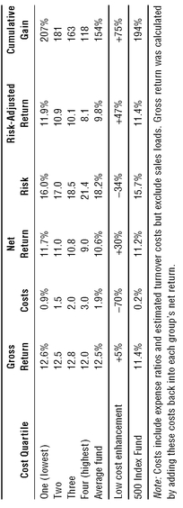
When we compound those annual returns over time, the cumulative difference reaches staggering proportions. Total compound gain for the period: 207 percent for the low-cost funds, 118 percent for the high-cost funds, a near doubling of profit arising almost entirely from the cost differential. Talk about the relentless rules of humble arithmetic!
把这些年回报随时间复利累积起来，累计差异就大得惊人。该期间的复利总收益：低成本基金207%，高成本基金118%，利润几乎翻倍，而这几乎完全来自成本差距。这才叫朴素算术那无情无义的铁律！
In other words, the final value of the low-cost funds more than tripled over the decade, whereas the value of the high-cost funds barely doubled. Surely “fishing in the low-cost pond” should enhance your returns, and by a wide margin at that. Again, yes, costs matter!
换句话说，十年间低成本基金的终值增长了两倍多，而高成本基金的终值勉强翻倍。显然，「在低成本池塘里钓鱼」应当提升你的回报，而且提升幅度相当大。再说一次：是的，成本很重要！
But if you are seeking the lowest-cost funds, why limit the search to actively managed funds? The classic index fund had the lowest costs of all: an expense ratio averaging 0.2 percent per year during this period. With no measurable turnover costs, its total all-in costs were but 0.2 percent. The gross return of the 500 Index Fund was 11.4 percent per year; the net return 11.2 percent. Carrying a lower risk than any of the four cost quartiles (annual price volatility averaging 15.7 percent), its risk-adjusted annual return was 11.4 percent, for a cumulative risk-adjusted gain that was about in the middle of the top quartile.
但如果你要找的是最低成本的基金，为什么要把搜索范围局限在主动管理基金里？经典指数基金的成本是最低的：在这一时期，其费用率年均0.2%。由于没有可测量的换手率成本，它的全部成本合计只有0.2%。500指数基金的毛回报为每年11.4%，净回报为11.2%。它承担的风险低于四个成本四分位中的任何一个（年均价格波动率为15.7%），风险调整后年回报为11.4%，累计风险调整后收益大约落在最高四分位的中段。
The index fund’s risk-adjusted return: 194 percent; average managed fund, 154 percent.
The index fund’s compound risk-adjusted profit of 194 percent surpassed the 154 percent compound profit earned by the average fund by about one-third, all the more impressive since that average is overstated (as always) by the fact that only the funds that were good enough to survive the decade are included in the data. What’s more, selecting the index fund eliminated the need to look for those rare needles in the market haystack represented by the very few active funds that have performed better than that haystack, in the often-vain hope that their winning ways will continue over decades yet to come.
指数基金194%的复利风险调整后利润，比平均基金赚取的154%复利利润高出约三分之一；考虑到那个平均值（一如既往地）被高估了——因为数据里只包含那些挺过这十年的基金——这一成绩就更加令人瞩目。更重要的是，选择指数基金，就无需再去市场草垛里寻找那几根罕见的针——那些表现好过草垛本身的极少数主动基金，也无需抱着它们的好运气会在未来几十年延续下去这一往往落空的希望。
If investors could rely on only a single factor to select future superior performers and to avoid future inferior performers, it would be fund costs. The record could hardly be clearer: the more the managers and brokers take, the less the investors make. So why not own an index fund with no active manager and no management fee, and with virtually no trading of stocks through those Helpers mentioned in Chapter 1? Why not, indeed? Chapter 12 explores this idea further.
如果投资者只能依靠一个因素来挑选未来的优胜者、避开未来的落后者，那个因素就是基金成本。历史记录再清楚不过：管理人和经纪商拿走的越多，投资者赚到的就越少。那么，为什么不持有一只没有主动管理人、不收管理费、几乎不通过第1章提到的那些「帮手」买卖股票的指数基金呢？确实，为什么不呢？第12章将进一步探讨这个想法。
Chapter Twelve
Hold Index Funds That Own the Entire Stock Market.
IF LOW COSTS ARE GOOD (and I don’t think a single analyst, academic, or industry expert would disagree that low costs are good), why wouldn’t it be logical to focus on the lowest-cost funds of all—index funds that own the entire stock market? Several index funds carry expense ratios as low as 0.10 percent or even less, and incur turnover costs that turn out to be zero. They have all-in costs of just 10 basis points per year, 80 percent lower even than the 90 basis points for the low-cost quartile of funds described in Chapter 11.
如果低成本是好事（我想没有任何一位分析师、学者或行业专家会否认低成本是好事），那么专注于成本最低的那类基金——持有整个股票市场的指数基金——难道不合逻辑吗？有几只指数基金的费用率低至0.10%甚至更低，而它们的换手率成本算下来为零。它们的全部成本每年只有10个基点，甚至比第11章所述低成本四分位基金的90个基点还低80%。
And it works. Witness the real-world superiority of the S&P 500 Index Fund compared with the average equity fund over the past 25 years and over the previous decade, as described in earlier chapters. The case for the success of indexing in the past is compelling and unarguable. And with the outlook for subdued returns on stocks during the decade ahead, I am concluding my anecdotal stroll through the relentless rules of humble arithmetic with a final statistical example that suggests what the future may hold.
而且它真的管用。标普500指数基金在过去25年以及更早十年里相对平均股票型基金的现实优势，就是明证，前几章已有描述。指数化在过去取得的成功，证据确凿，无可争辩。面对未来十年股票回报低迷的前景，我要用一个最终的统计例子，来结束我对朴素算术无情铁律的这趟随笔式漫步——这个例子揭示了未来可能会是什么样子。
We can, in fact, use statistics designed to project the odds that a passively managed index fund will outpace an actively managed equity fund over various time periods. The complex exercise is called the “Monte Carlo simulation.” 20 What it does is make a few simple assumptions about the volatility of equity fund returns and the extent to which they vary from the returns earned in the stock market, as well as an assumption about the all-in costs of equity investing. The particular example presented here assumes that index fund costs will run to 0.25 percent per year and that the costs of active management will run to 2 percent per year. (Index funds are available at far lower costs, and the typical equity fund has even higher costs, so we’ve given actively managed funds the benefit of a very large doubt.)
事实上，我们可以用统计方法来推算一只被动管理的指数基金在各种时间跨度内跑赢主动管理股票型基金的概率。这套复杂的运算叫作「蒙特卡洛模拟」。它做的是几项简单假设：股票型基金回报的波动率、这些回报偏离股市回报的程度，以及股票投资的全部成本。这里所举的具体例子假设指数基金的成本为每年0.25%，主动管理的成本为每年2%。（指数基金的实际成本远低于此，而典型股票型基金的成本还要更高，所以我们其实给了主动管理基金很大的情面。）
Result: Over one year, about 29 percent of active managers on average, would be expected to outpace the index; over five years about 15 percent would be expected to win; over 10 years, 9 percent; over 25 years, 5 percent; and over 50 years just 2 percent of active managers would be expected to win (Exhibit 12.1).
结果：在1年期内，平均约有29%的主动管理人有望跑赢指数；5年期约15%有望胜出；10年期为9%；25年期为5%；而在50年期内，预计只有2%的主动管理人能够胜出（Exhibit 12.1）。
How will the future actually play out? Of course, we can’t be sure. But we know what the past 25 years look like, and we know that over the past 35 years only 9 of the 355 funds in business at the outset outperformed the stock market index by more than 2 percent per year. What’s more, even the majority of these winners lost their early edge a decade or more ago. So it looks as if our statistical odds are in the right ballpark. This arithmetic suggests—even demands—that index funds deserve an important place in your portfolio, even as they constitute the overriding portion of my own.
未来究竟会怎样？当然，我们无法确定。但我们知道过去25年是什么样子，也知道在过去35年里，期初存续的355只基金中只有9只每年跑赢股市指数2个百分点以上。更有甚者，这些赢家里的大多数，早在十年前或更久以前就失去了早期的优势。如此看来，我们算出的统计概率大致靠谱。这套算术表明——甚至要求——指数基金理应在你的投资组合中占据重要位置，正如它们在我自己的组合中占了压倒性的大部分。
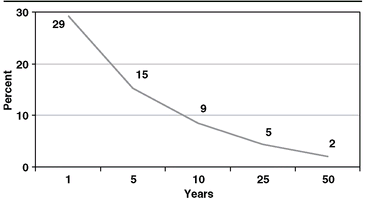
Whatever the case, in the era of subdued stock and bond market returns that most likely lies in prospect, fund costs will become more important than ever. Even more so when we move from the illusion that mutual funds as a group can capture whatever returns our financial markets provide to the even greater illusion that most mutual fund investors can capture even those depleted returns in their own fund portfolios. What the index fund has going for it is, as I have often said, “the magic of simplicity in an empire of parsimony.”
无论如何，在很可能即将到来的股票和债券市场回报低迷的时代，基金成本会变得比以往任何时候都更重要。当我们从「共同基金作为一个整体能够获取金融市场所提供的回报」这一幻觉，转向「大多数共同基金投资者能在自己的基金组合里获取哪怕已被削薄的回报」这一更大的幻觉时，更是如此。指数基金的优势所在，正如我常说的，是「在吝啬帝国里的简单魔法」。
To reiterate: all those pesky costs—fund expense ratios, sales charges, and turnover costs; tax costs; and the most subtle cost of all, the rising cost of living (inflation) —are virtually guaranteed to erode the spending power of our investments over time. What’s more, only in the rarest cases do fund investors actually succeed in capturing the returns that the funds report.
再重申一遍：所有那些恼人的成本——基金费用率、销售费、换手率成本，税负成本，以及最隐蔽的一项成本，即不断上涨的生活成本（通货膨胀）——几乎必然会随时间侵蚀我们投资的购买力。更有甚者，基金投资者真正拿到基金所报告回报的情形，少之又少。
My conclusions rely on mathematical facts—the relentless rules of humble arithmetic.
My conclusions about the market returns we can expect in the years ahead, as well as my conclusions about the share of those returns that funds will capture, and the share of those returns that we investors will actually enjoy, have one thing in common: They rely, not on opinion, but largely on mathematical facts—the relentless rules of humble arithmetic that make selecting winning funds rather like looking for a needle in a haystack. You ignore these rules at your peril.
我对未来若干年市场回报的预期，对基金将从中分得多少份额的判断，以及对我们投资者实际能享有多少份额的判断，有一个共同点：它们依靠的不是观点，而主要是数学事实——正是朴素算术那无情无义的铁律，让挑选赢家基金变得像大海捞针。无视这些规则，后果自负。
If the road to investment success is filled with dangerous turns and giant potholes, never forget that simple arithmetic can enable you to moderate those turns and avoid those potholes. So do your best to diversify to the nth degree; minimize your investment expenses; and focus your emotions where they cannot wreak the kind of havoc that most other people experience in their investment programs. Rely on your own common sense. Emphasize all-stock-market index funds. Carefully consider your risk tolerance and the portion of your investments you allocate to equities. Then stay the course.
如果说通往投资成功的道路上满是危险的急弯和巨大的坑洞，那就永远别忘了，简单的算术能帮你缓过那些弯、避开那些坑。所以，尽你所能把分散化做到极致；把投资费用降到最低；把你的情绪安放在它无法造成破坏的地方——大多数人在自己的投资计划里遭遇的那种浩劫，正是情绪惹的祸。依靠你自己的常识。重视全市场股票指数基金。仔细掂量你的风险承受能力，以及你配置到股票上的那部分投资。然后就坚持走下去。
All index funds are not created equal. One example: the difference between $122,700 and $99,100.
I should add, importantly, that all index funds are not created equal. While their index-based portfolios are substantially identical, their costs are anything but identical. Some have miniscule expense ratios; others have expense ratios that surpass the bounds of reason. Some are no-load funds, but nearly a third, as it turns out, have substantial front-end loads, often with an option to pay those loads over a period of (usually) five years; others entail the payment of a standard brokerage commission.
我还要着重补充一点：指数基金并非生而平等。虽然它们基于指数的组合大体相同，但它们的成本绝不相同。有些费用率微乎其微；另一些的费用率高得超出理性的界限。有些是免佣基金，但事实证明，近三分之一收取可观的销售费，而且往往可以选择在（通常）五年内分期支付这笔费用；还有一些则要支付标准的券商佣金。
The gap between the costs charged by the low-cost funds and the high-cost funds offered by 10 major fund organizations for their S&P 500-Index-based funds runs upward of an amazing 1.2 percentage points per year. (Exhibit 12.2)
10家大型基金公司为各自的标普500指数基金所收取的成本，低成本基金与高成本基金之间的差距，每年竟高达1.2个百分点。（Exhibit 12.2）
Today, there are some 115 index mutual funds designed to track the S&P 500 Index. Astonishingly, more than half of them carry an initial sales load, albeit often concealed by offering class “B” shares with no front-end load but with an additional heavy annual fee (used to pay the broker). The wise investor will select only those index funds that are available without sales loads, and those operating with the lowest costs. These costs—no surprise here!—are directly related to the net returns delivered to the shareholders of these funds.
如今，约有115只以跟踪标普500指数为目标的指数共同基金。令人吃惊的是，其中一半以上收取初始销售费，只是常常通过提供「B」类份额加以掩盖——B类份额不收前端销售费，却附带一笔沉重的年度费用（用来支付给经纪商）。明智的投资者只会挑选那些不收销售费、且运营成本最低的指数基金。这些成本——毫不意外！——与交付给这些基金持有人的净回报直接相关。
| Five Low-Cost Index 500 Funds | Annual Expense Ratio | Annual Expense Ratio Including Any Sales Charges |
|---|---|---|
| 1. Fidelity Spartana | 0.07% | 0.07% |
| 2. Vanguard Admirala | 0.09 | 0.09 |
| 3. Vanguard (Regular) | 0.18 | 0.18 |
| 4. USAA | 0.19 | 0.19 |
| 5. T. Rowe Price | 0.35 | 0.35 |
| Five High-Cost Fundsb | ||
| 1. UBS | 0.69% | 1.45% |
| 2. Morgan Stanley | 0.64 | 1.40 |
| 3. Wells Fargo | 0.64 | 1.39 |
| 4. Evergreen | 0.56 | 1.31 |
| 5. J.P. Morgan | 0.53 | 1.30 |
| a Share classes available subject to initial minimum investments and/or specified holding periods. | ||
| b Investors pay the lower expense ratio only if they first pay an initial sales charge of about 5 percent. | ||
In the past, some S&P 500-Index-based funds may have earned small increases in return (or been penalized by small reductions) based on their managers’ ability (or inability) to employ strategies that allow small short-term departures from the exact weightings of the stocks in the index. I assume, however, that these variations will be lower in the future, and have therefore ignored them as an element in the cost-value equation. Funds tracking a particular index are—or should be—commodities in terms of their portfolios and the returns they provide. So variations in costs make the difference. While cost differentials may look trivial when expressed on an annual basis, compounded over the years they make the difference between investment success and failure.
过去，有些标普500指数基金可能因为其管理人能够（或不能够）采用一些策略、让持仓在短期内小幅偏离指数中股票的确切权重，而获得小幅的回报提升（或因小幅的减损而吃亏）。不过，我假定未来这类偏差会更小，因此把它们排除在成本—价值等式之外。跟踪某一特定指数的基金，就其组合和所提供的回报而言，是——也应当是——同质化的商品。于是，成本的差异就成了关键。成本差距按年度表示时或许微不足道，但年复一年地复利累积，就成了投资成功与失败之间的分野。
In January 1984, the second index mutual fund was formed—Wells Fargo Equity Index Fund. Its subsequent return can be compared with that of the original Vanguard 500 Index Fund over the same period. Both funds selected the S&P 500 Index as their benchmark. The sales commission on the Vanguard Index 500 Fund was eliminated within months of its initial offering, and it has operated with an expense ratio averaging 0.28 percent annually. (By 2005, the ratio had decreased to 0.18 percent, and to 0.09 percent for longer-term investors and those who had $100,000 or more invested in the fund.) In contrast, the Wells Fargo fund carried an initial sales charge of 5.5 percent througout the period, and its expense ratio averaged 0.80 percent per year (0.64 percent in 2005).
1984年1月，第二只指数共同基金成立——富国股票指数基金（Wells Fargo Equity Index Fund）。它此后的回报，可以与最初的先锋500指数基金（Vanguard 500 Index Fund）在同一时期的回报相比较。两只基金都选择标普500指数作为基准。先锋500指数基金的销售佣金在首次发行后几个月内就被取消了，此后它一直以年均0.28%的费用率运营。（到2005年，这一费率已降至0.18%，而对长期投资者以及在该基金投资10万美元及以上的人，则降至0.09%。）相比之下，富国基金在整个期间都收取5.5%的初始销售费，其费用率年均0.80%（2005年为0.64%）。
These seemingly small differences added up to a 23 percent enhancement in value for the Vanguard fund. An original investment of $10,000 in each produced a profit of $122,700 for the Vanguard 500 Index Fund, compared with $99,100 for the Wells Fargo Equity Index Fund. All index funds are not created equal. Intelligent investors will select the lowest cost index funds that are available from reputable fund organizations.
这些看似微小的差别，累加起来让先锋那只基金的价值多出23%。在两只基金各投入10,000美元，先锋500指数基金产生了122,700美元的利润，而富国股票指数基金为99,100美元。指数基金并非生而平等。聪明的投资者会从声誉良好的基金公司那里，挑选成本最低的指数基金。
Your index fund should not be your manager’s cash cow. It should be your own cash cow.
Some years ago, a Wells Fargo representative was asked how the firm could justify such high charges. The answer: “You don’t understand. It’s our cash cow.” (That is, it regularly generates lots of profits for the manager.) By carefully selecting the lowest cost index funds for your portfolio, you can be sure that the fund is not the manager’s cash cow, but your own.
几年前，有人问富国的一位代表，公司凭什么收取这么高的费用。回答是：「你不明白。这是我们的摇钱树。」（也就是说，它定期为管理人创造大量利润。）只要为你的投资组合精心挑选成本最低的指数基金，你就能确保那只基金不是管理人的摇钱树，而是你自己的摇钱树。
Given my preference for the all-market index fund, I almost hesitate to tell you that, since that lonely first S&P Index was formed in 1975, a staggering total of another 578 more index funds of all sizes and shapes are now in operation. Investors face a mind-boggling set of confusing choices—large cap, mid-cap, small-cap, industry sectors, international, single country, and so on. To make it more confusing, indexing works like a charm in every one of these areas. A well-administered index fund is inevitably destined to surpass the returns earned by the other investors in the market segment tracked by its index. Even though we never have complete information about the precise returns earned by investors as a group in each segment, given the relentless rules of humble arithmetic, it must work that way.
考虑到我偏爱全市场指数基金，我几乎不愿告诉你：自1975年那只孤独的第一只标普指数基金成立以来，如今在运作的、大小形态各异的指数基金又多了惊人的578只。投资者面对的选择五花八门、令人眼花缭乱——大盘、中盘、小盘、行业板块、国际、单一国家，等等。更让人犯晕的是，指数化在每一个领域都灵验得出奇。一只管理得当的指数基金，注定会跑赢其指数所跟踪的市场板块中其他投资者所赚取的回报。尽管我们从未掌握各板块投资者整体所赚取精确回报的完整信息，但根据朴素算术那无情无义的铁律，结果必然如此。
Standard & Poor’s Corporation now compares index returns with actual returns achieved by active managers in many U.S. market segments, and the results are unmistakable. Over the past five years alone, the S&P 500 Index has outpaced 67 percent of large-cap general equity funds, while the S&P Mid-Cap 400 Index has outperformed 84 percent of mid-cap funds, and the S&P Small-Cap 600 Index has outperformed 79 percent of all small-cap funds. Remarkable but unsurprising. While these comparisons, sorted by number of funds rather than by fund assets, have the flaws noted earlier, the message could hardly be clearer: indexing is the winning strategy.
标准普尔公司如今会把指数回报与主动管理人在美国许多市场板块中实际取得的回报相比较，结果再清楚不过。仅在过去五年里，标普500指数就跑赢了67%的大盘普通股票型基金，标普中盘400指数跑赢了84%的中盘基金，标普小盘600指数跑赢了79%的所有小盘基金。既惊人，又不出所料。这些比较按基金数量而非按基金资产排序，带有前面提到的缺陷，但传递的信息再清楚不过：指数化是赢家的策略。
Interestingly, Standard & Poor’s tries to take survivor bias into account in its calculations. During the past five years alone, an astonishing 28 percent of all general equity funds have gone out of business. That’s one more warning about relying on actively managed mutual funds as long-term investments.
有意思的是，标准普尔在计算中设法把幸存者偏差考虑了进去。仅在过去五年里，就有高达28%的全部普通股票型基金停业。这是又一条警告：不要指望主动管理的共同基金作为长期投资。
In inefficient markets, the most successful managers may achieve unusually large returns. But common sense tells us that for each big success, there must also be a big failure.
While it is alleged that indexing doesn’t work in markets that are less-efficient than the large stocks in the S&P 500, the impressive performance of the small- and mid-cap indexes suggest that it works perfectly well. As it must. For, whether markets are efficient or inefficient, as a group all investors in that segment earn the return of that segment. In inefficient markets, the most successful managers may achieve unusually large returns. But never forget that, as a group, all investors in any discrete segment of the stock market must be, and are, average. Common sense tells us that for each big success, there must also be a big failure. But after all those deductions of even larger management fees that funds incur in less efficient markets, and the damaging impact of their even larger turnover costs, the aggregate lag is even wider. So even in inefficient market segments, index funds, with their tiny costs, win again.
有人声称，在效率低于标普500大盘股的市场里，指数化行不通；但小盘和中盘指数的亮眼表现说明，它照样运行良好。而且它必然如此。因为无论市场是有效还是低效，那个板块中的所有投资者作为一个整体，赚取的就是该板块的回报。在低效市场中，最成功的管理人可能取得异常丰厚的回报。但永远别忘了：在股市任何一个独立板块中，所有投资者作为一个整体必然、也确实是平均水平。常识告诉我们，每一个巨大的成功背后，必然也有一个巨大的失败。而在效率较低的市场里，基金要承担更高的管理费，这些费用被扣除之后，再加上其更高的换手率成本带来的破坏性影响，整体的落后幅度只会更大。所以，即便在低效市场板块中，凭借微小的成本，指数基金又一次胜出。
International funds are also subject to the same allegation that it is easier for managers to win in (supposedly) less-efficient markets. But also to no avail. S&P reports that the international index (world markets, less U.S. stocks) outpaced 80 percent of actively managed international equity funds over the past five years. Similarly, the S&P Emerging Markets Index outpaced 88 percent of emerging market funds. With indexing so successful in both more efficient and less efficient markets alike, and in U.S. markets and global markets, I’m not sure what additional data are required to close the case in favor of index funds.
国际基金也面临同样的说法：在（据说是）效率较低的市场里，管理人更容易取胜。但这一说法同样无济于事。标普报告称，过去五年里，国际指数（全球市场，剔除美国股票）跑赢了80%的主动管理国际股票型基金。同样，标普新兴市场指数跑赢了88%的新兴市场基金。既然指数化在效率较高和效率较低的市场中都如此成功，在美国市场和全球市场都如此成功，我不确定还需要什么额外数据，才能为指数基金结案。
But while investing in particular market sectors is done most efficiently through index funds, betting on the winning sectors is exactly that: betting. But betting is a loser’s game. Why? Largely because emotions are almost certain to have a powerful negative impact on the returns that investors achieve. Whatever returns each sector may earn, the investors in those very sectors will likely, if not certainly, fall well behind them. For there is abundant evidence that the most popular sector funds of the day are those that have recently enjoyed the most spectacular recent performance. As a result, after-the-fact popularity is a recipe for unsuccessful investing.
不过，投资特定市场板块，最高效的方式是通过指数基金；而押注哪个板块会赢，就纯粹是押注。押注是输家的游戏。为什么？主要因为情绪几乎必然会对投资者实际取得的回报产生强大的负面影响。无论各板块赚取怎样的回报，投资于这些板块的投资者很可能——如果不是必然——远远落后于板块本身。因为大量证据表明，当下最热门的板块基金，正是那些近期业绩最为耀眼的基金。结果，事后才追捧热门，正是投资失败的配方。
Indexing stock market sectors, a strong idea. Betting on stock market sectors, a weak reality.
For example, when Vanguard created the industry’s first Growth Index Fund and Value Index Fund in 1992, the former was designed for younger investors who focused on wealth accumulation, were seeking tax-efficiency, and were willing to assume larger risks. The latter was designed for older investors who focused on wealth preservation, were seeking higher income, and were happy to reduce their risks. Alas, while the original idea was strong, the ensuing reality was weak. What followed their introduction was a classic example of performance chasing.
举例来说，1992年先锋集团创立了业内第一只成长指数基金和价值指数基金。前者面向较年轻的投资者，他们专注于财富积累、追求税收效率、愿意承担更大的风险。后者面向较年长的投资者，他们专注于财富保全、追求更高的当期收益、乐于降低风险。唉，最初的想法很好，随后的现实却很糟。两只基金推出之后发生的事情，成了追逐业绩的经典案例。
During the 1993 to 1997 period, the stock market was relatively placid, and value stocks and growth stocks delivered similar returns. Then in the new economy bubble, growth stocks took off, earning a cumulative return by 2000 that left value stocks in the dust (1992 to March 2000: Growth Index total return, 364 percent; Value Index total return, 229 percent). Après moi le deluge! Reversion to the mean took hold, and growth stocks plummeted through 2002.
1993年至1997年间，股市相对平静，价值股与成长股带来的回报相近。随后在新经济泡沫中，成长股一飞冲天，到2000年累计回报把价值股远远甩在身后（1992年至2000年3月：成长指数总回报364%；价值指数总回报229%）。我死后，管它洪水滔天！均值回归开始发力，成长股一路暴跌直到2002年。
Investor interest in the two fund styles was well balanced during the early years. But in the bubble that followed, investors poured $11 billion into the soaring Growth Index Fund, nearly four times the $3 billion invested in the sedate Value Index Fund. Then, in the aftermath, investors switched their loyalty, with net redemptions of $850 million in the Growth Index Fund during 2001 to 2006 and net purchases approaching $2 billion in the Value Index Fund.
在最初几年，投资者对这两种基金风格的兴趣相当均衡。但在随后的泡沫中，投资者向一路飙升的成长指数基金投入110亿美元，几乎是投入平稳的价值指数基金30亿美元的四倍。再之后，尘埃落定，投资者转移了忠诚：2001年至2006年间，成长指数基金净赎回8.5亿美元，而价值指数基金净申购接近20亿美元。
Since 1993, the two funds have achieved substantial positive returns on the standard time-weighted basis—9.1 percent per year for Growth and 11.2 percent for Value. With their counterproductive timing and selection, however, investors in these index funds have not come even close to matching those returns. The average dollar-weighted return earned by investors in the Growth Index Fund was a pathetic 0.9 percent per year. While investors in the Value Index Fund did better, their return of 7.6 percent still lagged the return on the Value Index Fund by 3.6 percentage points per year.
自1993年以来，按标准的时间加权口径，两只基金都取得了可观的回报——成长每年9.1%，价值每年11.2%。然而，由于投资者的择时与选择适得其反，这些指数基金的投资者所获回报，连这些数字的边都没摸到。成长指数基金投资者赚到的平均金额加权回报，是可怜的年均0.9%。价值指数基金的投资者表现好一些，但他们7.6%的回报，仍比价值指数基金本身的回报每年落后3.6个百分点。
Since 1993, the cumulative return of the Growth Index has been 224 percent, versus 320 percent for the Value Index, based on the traditional calculation of fund performance. The Growth Index Fund investor, meanwhile, earned but 13 percent, and the Value Index Fund investor earned about 170 percent. Despite my best intentions when they were formed, Vanguard’s Growth Fund and Value Index Funds proved to be a paradigm for the ways that investors fool themselves, relinquishing perfectly acceptable long-term returns in their search to find the Holy Grail of extra returns in the short run.
自1993年以来，按基金业绩的传统算法，成长指数的累计回报为224%，价值指数为320%。与此同时，成长指数基金的投资者只赚到13%，价值指数基金的投资者赚了约170%。尽管在它们成立时我满怀善意，先锋集团的成长指数基金和价值指数基金，却成了投资者自我欺骗方式的典范：为了在短期内找到额外回报的圣杯，他们放弃了本已完全可接受的长期回报。
So look before you leap in trying to pick which market sector to bet on. It may not be as exciting, but owning the classic stock market index fund is the ultimate strategy. It holds the mathematical certainty that marks it as the gold standard in investing, for try as they might, the alchemists of active management cannot turn their own lead, copper, or iron into gold. Just avoid complexity, rely on simplicity, take costs out of the equation and trust the arithmetic.
所以，在试图挑选押注哪个市场板块之前，先三思而后行。持有一只经典股票市场指数基金也许不够刺激，却是终极策略。它具备数学上的确定性，这使它成为投资中的金标准；因为无论多么努力，主动管理的炼金术士也无法把自己的铅、铜或铁变成黄金。避开复杂，依靠简单，把成本从等式中剔除，并相信算术。
Chapter Thirteen
Where Those Relentless Rules Are Even More Powerful
SO FAR, MY DISCUSSION of the index fund (and its hand-maiden, low investment costs) has related to the stock market and to equity mutual funds. But the relentless rules of humble arithmetic with which I’ve regaled you also apply—arguably even more forcefully—to bond funds and money market funds.
到目前为止，我关于指数基金（以及它的婢女——低廉的投资成本）的讨论，都围绕着股票市场和股票型共同基金。但我反复向你讲述的那套铁面无私的「朴素算术」法则，同样适用于债券基金和货币市场基金——可以说，甚至适用得更加不留情面。
Perhaps it’s obvious why this is so. While a seemingly infinite number of factors influence the stock market and each individual stock that is traded there, a single factor influences the bond market and the money market (and for that matter, each individual fixed-income security) far more than any other: the prevailing level of interest rates. Managers of fixed-income funds can’t do much, if anything, to influence rates. If they don’t like the rates established in that market, calling the Treasury Department or the Federal Reserve, or otherwise trying to change the supply-and-demand equation, is unlikely to bear fruit.
原因或许不言自明。影响股票市场、以及在其中交易的每一只个股的因素，看似无穷无尽；而影响债券市场和货币市场（乃至每一只固定收益证券）的因素，却有一个远超其他所有因素：当前的市场利率水平。固定收益基金的管理人再怎么努力，也几乎无法影响利率。如果他们对市场形成的利率不满意，去给财政部或美联储打电话，或是想别的办法改变供求关系，多半都不会有什么结果。
So let’s be clear: In the long run, virtually 100 percent of the return on any bond fund or money market fund is accounted for by the net interest income it generates for its shareholders. The only way for a manager to add an increment to that return is to make interest rate bets—for example, by selling bonds when he expects rates to go up (and prices down), and then buying bonds when the reverse is expected to happen. If you think that picking stocks and timing their purchase is hard, just imagine how hard it is to execute these same strategies successfully in the incredibly efficient precincts of the bond market.
所以，把话说清楚：长期来看，任何一只债券基金或货币市场基金为持有人创造的净利息收入，几乎占了其全部回报的 100%。管理人要想在这份回报上再加一点，唯一的办法就是押注利率——比如预期利率上升（价格下跌）时卖出债券，预期情况相反时再买回债券。如果你觉得选股和择时已经很难，那不妨想想，在效率高得惊人的债券市场里要成功执行同样的策略，该有多难。
Thus, managers of fixed income funds almost inevitably deliver a gross return that parallels the baseline constituted by the interest rate environment. Yes, a few managers might do better—even do better for a long time—by being extra smart, or extra lucky, or by taking extra risk. Yet even the best bond and money market managers can add only a few fractions of one percent per year to your long-term returns, albeit only by risking a comparable shortfall. What’s more, even if they achieve these margins, they rarely overcome the fees, sales loads, and expenses involved in acquiring their services.
因此，固定收益基金的管理人几乎不可避免地只能交出与利率环境所构成的基准线大致相当的毛回报。是的，少数管理人或许能做得更好——甚至很长一段时间都更好——靠的是格外聪明、格外幸运，或者承担了格外的风险。然而，即便最出色的债券和货币市场基金经理，每年也只能为你的长期回报添上零点几个百分点，而且还得冒着同等幅度落后的风险。更何况，即便他们真做到了这点微薄的优势，也几乎抵不过为购买他们的服务而付出的管理费、销售费和各项开支。
While these costs make the task of adding returns far more difficult, overly confident bond fund managers may be tempted to take just a little extra risk by extending maturities of the bonds in the portfolio. (Long-dated bonds—say, 30 years—are much more volatile than short-term bonds—say, two years—but usually provide higher yields.) They are also tempted to reduce the investment quality of the portfolio, holding less in U.S. Treasury bonds (rated AAA) or in investment-grade corporate bonds (rated BBB or better), and holding more in below-investment-grade bonds (BB or lower), or even some so-called junk bonds, rated below CC or even unrated.
这些成本让「多赚一点」的任务难上加难，可过分自信的债券基金经理仍可能忍不住去冒一点额外的风险：拉长组合中债券的期限。（长期债券——比如 30 年期的——比短期债券，比如 2 年期的，波动大得多，但通常收益率也更高。）他们也忍不住去降低组合的投资品质，少持有美国国债（AAA 级）或投资级公司债（BBB 级及以上），多持有投资级以下的债券（BB 级或更低），甚至买些所谓的垃圾债券——评级低于 CC 级，或者干脆没有评级。
Since stocks represent the residual ownership (or equity) of corporations, the word safety is not usually associated with them. Unlike bonds, stocks can’t default. Bonds, on the other hand, represent debt. If the payments of interest that corporations and governments promise to make every six months are threatened, their ratings will be downgraded and the market value of their bonds reduced. And if they finally fail to make the promised payments, they enter bankruptcy proceedings. Where bonds are concerned, Brandeis’s warning becomes particularly meaningful: “Remember, O stranger, arithmetic is the first of the sciences and the mother of safety.”
股票代表的是对公司的剩余所有权（即股权），所以「安全」二字通常跟它扯不上关系。与债券不同，股票不会违约。而债券代表的是债务。当公司或政府承诺每半年支付的利息受到威胁时，它们的评级就会被下调，其债券的市值也会随之缩水。而一旦最终无法兑付承诺的款项，它们就会进入破产程序。就债券而言，布兰代斯的告诫格外有分量：「记住吧，陌生人，算术是第一门科学，也是安全之母。」
There are too many types of bond funds to try your patience by examining all of them. So this chapter presents the three basic maturity levels that have become the industry standard, one in each of the three major bond segments—taxable (corporate and government) bonds, tax-exempt municipal bonds, and U.S. Treasury issues. The discussion begins with intermediate-term taxable bond funds; then turns to long-term tax-exempt bond funds; and finally evaluates funds investing in short-term U.S. Treasury notes.
债券基金的种类太多，要是一一细看，恐怕会磨光你的耐心。所以本章只介绍已经成为行业标准的三个基本期限档次，分别取自三大债券板块——应税债券（公司债和政府债）、免税市政债，以及美国国债。讨论从中期应税债券基金开始，接着转向长期免税债券基金，最后评估投资于短期美国国债的基金。
Among intermediate-term taxable bond funds, the low-cost index fund is truly a superior performer.
As you’ll see, the low-cost intermediate-term bond index fund is a truly superior performer21 (Exhibit 13.1). (A finding that indexing wins should no longer surprise you.) With a 10-year return averaging 6.8 percent annually, it comes within a whisker of outpacing the (cost-adjusted) return of the comparable Lehman 5-10 Year Government/Corporate Bond Index. What is more, the index fund’s annual return of 6.8 percent was almost 25 percent higher than the 5.5 percent return of its average peer. While the actively managed bond funds as a group earned a lower gross return than either the index fund or the index, relative cost proved to be the principal differentiator in net return.
你会看到，低成本的中期债券指数基金确实表现卓越（Exhibit 13.1）。（「指数化会赢」这个结论，应该不会再让你惊讶了。）它的 10 年年均回报为 6.8%，几乎就要超过可比的 Lehman 5-10 Year Government/Corporate Bond Index（扣成本后）的回报。更值得一提的是，指数基金 6.8% 的年回报，比同类基金平均的 5.5% 高出近 25%。主动管理债券基金作为一个整体，毛回报既低于指数基金也低于指数本身，而在净回报上，成本的相对高低被证明才是最主要的区分因素。
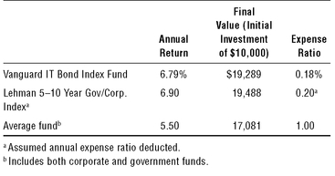
As a group, the portfolios of the actively managed bond funds include about 25 percent corporate and 75 percent U.S. government bonds (largely bonds of government agencies), whereas the bond index and the bond index fund include about 50 percent in corporates and 50 percent in governments. While the bond index fund carried slightly more volatility risk (with an annualized standard deviation of 5 percent versus 3.7 percent for the active managers), both figures represent an extremely low risk level.
总体来看，主动管理债券基金的组合中约有 25% 是公司债、75% 是美国政府债券（主要是政府机构债券）；而债券指数和债券指数基金则大约各占一半：公司债 50%、政府债 50%。债券指数基金的波动风险略高一些（年化标准差为 5%，主动管理人是 3.7%），但这两个数字都代表着极低的风险水平。
And so the message echoes. Among intermediate-term taxable bond funds, in terms of maximizing your return and minimizing your risk, the low-cost index fund is truly a superior performer. The Vanguard Intermediate-Term Bond Index Fund, for example, has an expense ratio of 0.18 percent, less than one-fifth of the 1.0 percent expense ratio of its average peer. In addition, its return benefits from the absence of sales loads. Always avoid bond funds with sales loads. (A typical 5 percent load would obliterate your entire yield for the first year.) With a cumulative final value of an initial investment of $10,000 growing to $19,289 in the index fund, versus just $17,081 for its average rival, the index strategy is a winning strategy, outpacing an amazing 550 of its 570 peers over the past decade.
于是，这个结论再次回响：在中期应税债券基金中，若论回报最大化、风险最小化，低成本指数基金确实表现卓越。以 Vanguard Intermediate-Term Bond Index Fund 为例，其费用率为 0.18%，不到同类基金平均费用率 1.0% 的五分之一。此外，它的回报还得益于没有销售费。请永远避开带销售费的债券基金。（一笔典型的 5% 销售费，会把你第一年的全部收益率一笔勾销。）初始投入 10,000 美元，在指数基金中十年下来累计增长到 19,289 美元，而在同类平均基金中只有 17,081 美元；指数策略是一种制胜策略，过去十年跑赢了 570 只同类基金中的 550 只，成绩惊人。
Among long-term tax-exempt bond funds, once again, indexing wins.
Now let’s consider long-term maturities, with a focus on tax-exempt municipal bond funds. Because of complexities in the construction of municipal bond indexes, there are no pure index funds in this category. But the results of the major index in the field (the Lehman Brothers Tax-Exempt 10-Year Maturity Index) confirm the power of indexing in surpassing the returns provided by the average active bond manager (Exhibit 13.2). Since the index provided a gross return of 5.93 percent, a comparable index fund, after assumed costs of 0.20 percent, would have provided a 5.73 percent net annual return.
现在来看长期债券，重点是免税市政债券基金。由于市政债指数在编制上有诸多复杂之处，这个类别里没有纯粹的指数基金。但该领域主要指数的表现（Lehman Brothers Tax-Exempt 10-Year Maturity Index）证实了指数化的威力：它能超越普通主动债券管理人提供的回报（Exhibit 13.2）。该指数的毛回报为 5.93%，若按 0.20% 的假定成本折算，一只可比的指数基金本可提供 5.73% 的年净回报。
By way of comparison, the Vanguard Long-Term Tax-Exempt Bond Fund—whose expense ratio of 0.15 percent is actually slightly below these assumed costs for the index fund—provided a net return of 5.85 percent, a bit higher than the assumed return of the bond index fund. Like the index fund, this bond fund is broadly diversified, holds a high-quality portfolio (87 percent rated A or better, even higher than its actively managed peers), and minimizes turnover.
作为对比，Vanguard Long-Term Tax-Exempt Bond Fund——其费用率 0.15%，实际上还略低于上面为指数基金设定的假定成本——提供了 5.85% 的净回报，比那只债券指数基金的假定回报还略高一点。和指数基金一样，这只债券基金广泛分散，持有高品质的组合（87% 评级为 A 或更高，甚至优于主动管理的同类基金），并把换手率降到最低。
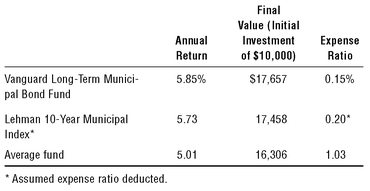
Once again, low costs lead to higher returns. The 5.73 percent annual return of the hypothetical municipal bond index fund was roughly 15 percent more than the 5.0 percent earned by the average long-term municipal fund, even though the actively managed funds were assuming higher risks—15 percent in lower-rated bonds versus 4 percent for the index and 13 percent for the Vanguard fund.
低成本又一次带来更高的回报。假设的市政债指数基金年回报为 5.73%，比长期市政债基金平均的 5.0% 高约 15%，而这还是主动管理基金承担了更高风险之后的成绩——它们持有 15% 的低评级债券，指数是 4%，Vanguard 那只基金是 13%。
Over the past decade, $10,000 initially invested in the Vanguard Long-Term Municipal Bond Fund grew to $17,657, versus $16,306 for its average rival. With low-costs, broad diversification, and no serious attempt to outguess the market in long-term tax-exempt bond funds, once again indexing wins. Its close proxy, the Vanguard Long-Term Municipal Bond Fund, ranked first among its 194 peers.
过去十年，最初投入 Vanguard Long-Term Municipal Bond Fund 的 10,000 美元增长到 17,657 美元，而同类平均基金只有 16,306 美元。有了低成本、广泛分散，又不去费心猜测市场，在长期免税债券基金上，指数化再一次胜出。作为它最接近的替身，Vanguard Long-Term Municipal Bond Fund 在 194 只同类基金中排名第一。
Among short-term Treasury funds, the lowest cost option wins again.
Our sweep of the bond fund arena concludes with an examination of short-term funds investing in U.S. Treasury obligations (Exhibit 13.3). There are few surprises here. The net return earned by the index itself (5.06 percent per year, adjusted for an assumed expense ratio of 0.20 percent) outpaces the average fund. Again, while the Vanguard Short-Term Federal Bond Fund is not, technically speaking, an index fund, it tracks the index return with remarkable precision, turning in a net average annual return of 5.06 percent over the past decade. The lowest cost options win again, outpacing 97 of the 122 short-term government funds. (Treasurys being Treasurys, investment quality is virtually uniform. Both the Vanguard index fund and the index itself hold 100 percent of their portfolios in short-term U.S. Treasury notes, and the active funds hold 99 percent.)
我们对债券基金领域的巡视，最后来看看投资于美国国债的短期基金（Exhibit 13.3）。这里没什么出人意料的地方。指数本身赚到的净回报（按 0.20% 的假定费用率折算后为每年 5.06%）超过了基金的平均水平。同样地，Vanguard Short-Term Federal Bond Fund 严格说来并不是指数基金，但它极其精准地跟踪了指数回报，过去十年交出了 5.06% 的年均净回报。成本最低的选择再次胜出，跑赢了 122 只短期政府债券基金中的 97 只。（国债终究是国债，投资品质几乎整齐划一。Vanguard 那只指数基金和指数本身都把 100% 的组合放在短期美国国债上，主动管理基金则是 99%。）
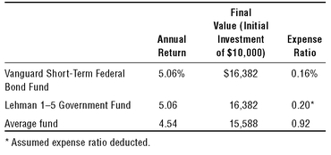
With its towering 0.92 percent average expense ratio, the average short-term bond fund has a lot to overcome. It doesn’t succeed—it can’t succeed—in overcoming that handicap, even by assuming somewhat more volatility risk than the government index and the Vanguard, both of which funds displayed slightly less volatility than their active peers. (Again, many of these actively managed funds carry sales charges, averaging 3 percent, which are incorporated into the returns shown in Exhibit 13.3.)
短期债券基金平均高达 0.92% 的费用率，是一座需要翻越的大山。它没能翻过去——也不可能翻过去——即便它承担了比政府债券指数和 Vanguard 基金更高的波动风险，仍然无济于事（后两者的波动率都略低于主动管理的同类基金）。（再说一次，这些主动管理基金中有不少收取销售费，平均为 3%，这部分已计入 Exhibit 13.3 所列的回报中。）
The tracking of its benchmark, its quality parity, and its extremely low expenses mark the Vanguard Short-Term Treasury Bond Fund as the functional equivalent of the Lehman 1-5 Year Government Bond Index. While there are no bond funds that track this index, the Vanguard fund is the virtual equivalent of an index fund. Both provided cumulative gains on an initial investment of $10,000 of an identical $16,382 over the past decade, compared with $15,588 for the average short-term Treasury fund.
对基准的紧密跟踪、毫不逊色的品质，以及极低的开支，使 Vanguard Short-Term Treasury Bond Fund 成为 Lehman 1-5 Year Government Bond Index 功能上的等价物。市场上并没有跟踪这一指数的债券基金，但 Vanguard 这只基金实质上就相当于一只指数基金。过去十年，两者让最初投入的 10,000 美元同样累计增值到 16,382 美元，而短期国债基金的平均水平只有 15,588 美元。
Among money market funds—surprise! —low cost wins again.
Money market funds can be thought of as very short-term bond funds with uniformly high credit quality. Federal regulations limit money market funds to high-grade commercial and bank paper, and as a practical matter limit maturities to a very short term (about 60 days), to maintain a stable asset value of $1.00 per share. (Unlike bank savings accounts, money market funds are not guaranteed by the Federal Deposit Insurance Corporation.) As a result, money market funds hold portfolios with generally similar quality (though a bit of “stretching” for yield often goes on) and very short maturity (usually averaging about 40 days). As a result, they tend to earn substantially identical gross yields on their portfolios.
货币市场基金可以看作信用品质一律优良的极短期债券基金。联邦法规限定货币市场基金只能投资高等级的商业票据和银行票据，并且在实践中把期限限制在极短的范围（约 60 天），以维持每份 1.00 美元的稳定资产净值。（与银行储蓄账户不同，货币市场基金不受联邦存款保险公司担保。）因此，货币市场基金持有的组合品质大体相近（虽然为了收益多少会「拉长」一点期限），期限则非常短（通常平均约 40 天）。结果是，它们的组合毛收益率往往基本一致。
With their short maturities, extremely high credit quality, and broadly diversified portfolios, money market funds essentially become commodities. Thus, when all else is equal (as it is here), relative performance is determined by relative cost. So, even more than in stock index funds and bond index funds, cost tells virtually the entire story in money market funds.
由于期限短、信用品质极高、组合又充分分散，货币市场基金本质上成了一种大宗商品。因此，当其他条件都相同时（这里正是如此），相对表现就由相对成本决定。所以，在货币市场基金里，成本几乎讲述了一切——比在股票指数基金和债券指数基金里更是如此。
If we rank the records of all 190 money market funds in terms of the returns they have delivered to investors over the past 10 years (highest first) and then compare their expense ratio (lowest first), the relationship is almost perfect. Exhibit 13.4 echoes the cost versus return analysis of Exhibits 13.1 to 13.3. The Vanguard Prime Money Market Fund, close cousin to our hypothetical index fund, was among the leaders, producing a net annual return of 3.77 percent for the past decade, some 15 percent above the return on the average money market fund. Cumulatively, a $10,000 initial investment in the Vanguard Prime Money Market Fund grew to $14,478 over the past decade, versus $13,785 for its average peer. Among 190 comparable funds, it ranked number 7.
如果我们把全部 190 只货币市场基金过去 10 年给投资者带来的回报从高到低排序，再把它们的费用率从低到高排序，两者的对应关系几乎是完美的。Exhibit 13.4 印证了 Exhibit 13.1 至 13.3 中「成本对回报」的分析。我们假想的那只指数基金的近亲——Vanguard Prime Money Market Fund——就名列前茅，过去十年的年净回报为 3.77%，比货币市场基金的平均回报高出约 15%。把收益累积起来看，最初投入 Vanguard Prime Money Market Fund 的 10,000 美元，过去十年增长到 14,478 美元，而同类平均基金是 13,785 美元。在 190 只可比基金中，它排在第 7 位。
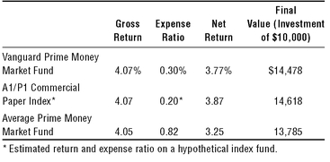
Remarkably, while the data are not shown in Exhibit 13.4, money market funds in the high-cost quartile earned a gross return of 4.10 percent (about equal to the average). But with a shocking annual expense ratio of 1.39 percent, these high-cost funds delivered a net return of just 2.71 percent to their owners. Why would investors pay more than a 0.50 percent annual cost for a money market fund? The answer is beyond me. (They should probably have their heads examined.) How the supposedly independent directors of these 45 money funds with expense ratios at or above the 1.00 percent level could vote to approve such fees is an even bigger question. Their job is to represent the interests of the fund shareholders, and they have failed. But intelligent investors don’t need to fail. If you avoid these high-cost money market funds in favor of low-cost funds, you inevitably earn superior returns.
值得注意的是，虽然 Exhibit 13.4 没有列出这些数据，但处于高成本四分位的货币市场基金毛回报为 4.10%（与平均值大致相当）。可是，凭借高达 1.39% 的惊人年费用率，这些高成本基金交给持有人的净回报只有 2.71%。投资者为什么会愿意为一只货币市场基金支付超过 0.50% 的年成本？我实在想不通。（他们大概该去看看脑子。）更令人费解的是，这 45 只费用率达到或超过 1.00% 的货币市场基金，那些号称独立的董事怎么会投票批准这样的收费。他们的职责是代表基金持有人的利益，而他们失职了。但聪明的投资者不必跟着失职。只要你避开这些高成本货币市场基金，转向低成本基金，就必然能获得更优的回报。
Summing up, I realize full well that investors are far more focused on equity funds and the stock market than on fixed-income funds. Nonetheless, smart investors will save themselves lots of money—and substantially improve their returns—if they apply the same principles of broad diversification, low-cost, no-load, minimal turnover, and long-term investing when they select fixed income funds. These are the very commonsense characteristics that enable index funds to guarantee your fair share of the returns in the bond and money markets, even as they do in all financial markets.
总结一下：我很清楚，投资者关注股票基金和股票市场，远胜过关注固定收益基金。尽管如此，如果他们在挑选固定收益基金时，也遵循同样的原则——广泛分散、低成本、免佣、最低换手率、长期投资——就能为自己省下大笔的钱，并显著改善回报。正是这些常识性的特征，让指数基金能够保证你拿到债券市场和货币市场回报中应得的那一份，就像它们在所有金融市场上所做的那样。
Chapter Fourteen
The New Paradigm?
SINCE THE INCEPTION OF the first index mutual fund in 1975, indexing—investing in passively managed, broadly diversified, low-cost, stock and bond index funds—has proved to be both a remarkable artistic success and a remarkable commercial success. In previous chapters, we’ve evaluated the success of index funds in providing returns to investors that have vastly surpassed the returns achieved by investors in actively managed mutual funds.
自 1975 年第一只指数共同基金诞生以来，指数化——投资于被动管理、广泛分散、低成本的股票和债券指数基金——已被证明既是了不起的艺术成就，也是了不起的商业成就。前几章里，我们评估了指数基金的成功：它为投资者带来的回报，远远超过了主动管理共同基金投资者所获得的回报。
Given that artistic success, the commercial success of indexing is hardly surprising. Today, most indexed assets are concentrated in classic index funds representing the broad U.S. stock market (the S&P 500 or the Dow Jones Wilshire 5000) the broad international stock market (the Morgan Stanley EAFE [Europe, Australia, and Far East] Index); and the broad U.S. bond market. Assets of these traditional classic stock index funds have grown from $16 million in 1976 to $445 million in 1986, to $68 billion in 1996, to $369 billion in 2006—7 percent of the assets of all equity mutual funds. Assets of bond index funds have also soared—from $132 million in 1986, to $6 billion in 1996, to $62 billion in 2006—7 percent of the assets of all taxable bond funds.
既然有这样的艺术成就，指数化在商业上的成功也就不足为奇了。如今，大多数指数化资产集中在经典指数基金上，它们分别代表美国广泛的股票市场（标普500指数或 Dow Jones Wilshire 5000）、广泛的国际市场（Morgan Stanley EAFE [欧洲、澳大利亚和远东] 指数），以及广泛的美国债券市场。这些传统经典股票指数基金的资产，从 1976 年的 1,600 万美元，增长到 1986 年的 4.45 亿美元，1996 年的 680 亿美元，再到 2006 年的 3,690 亿美元——占全部股票型共同基金资产的 7%。债券指数基金的资产也一路飙升——从 1986 年的 1.32 亿美元，到 1996 年的 60 亿美元，再到 2006 年的 620 亿美元——占全部应税债券基金资产的 7%。
Indexing has become a competitive field. The largest managers of the classic index funds are engaged in a fiercely competitive price war, cutting their expense ratios to draw the assets of investors who are smart enough to realize the price is the difference. This trend is great for index fund investors. But it slashes profits to index fund managers and discourages entrepreneurs who start new fund ventures in the hopes of enriching themselves by building fund empires.
指数化已经变成一个竞争激烈的领域。管理经典指数基金的几家最大机构，正陷于一场白热化的价格战，纷纷压低费用率，以吸引那些足够聪明、明白「价格就是差别」的投资者。这一趋势对指数基金投资者是大利好，却大幅削减了指数基金管理人的利润，也让那些指望靠建立基金帝国来发财、因而创办新基金的创业者望而却步。
So how can promoters take advantage of the proven attributes that underlie the success of the traditional index fund? Why, create new indexes! Then claim that they will consistently outpace the broad market indexes that up until now have pretty much defined how we think of indexing. And then charge a higher fee for that higher potential reward, whether or not it is ever actually delivered.
那么，推销者们怎样才能利用造就传统指数基金成功的那些公认优势呢？办法就是：创造新指数！然后宣称它们将持续跑赢那些迄今为止基本定义了「指数化」概念的广泛市场指数。再对这种更高的潜在回报收取更高的费用——至于这份回报究竟能不能兑现，那就另说了。
Traditional indexes, as noted in Chapter 3, are cap-weighted. That is, the weight of each stock (or bond) in the index portfolio is determined by its market capitalization. The total U.S. stock market, with a value of $15 trillion, represents the collective investment of all stock-holders of U.S. equities. So it follows that, together, all investors as a group earn precisely the market’s return. (Remember the Gotrocks family, in Chapter 1.)
如第 3 章所述，传统指数是按市值加权的。也就是说，组合中每一只股票（或债券）的权重，由它的市值决定。总值 15 万亿美元的美国整体股票市场，代表着美国股票所有持有人的集体投资。由此可以推出：全体投资者作为一个整体，赚到的正是市场的回报。（回想一下第 1 章里的 Gotrocks 家族。）
If the market rises by 10 percent, all investors as a group earn 10 percent (before costs). So the miracle, as it were, of the index fund, is simple arithmetic. By minimizing all those costs of investing, it guarantees that its participants will earn higher net returns than all the other participants in stock ownership as a group. This is the only approach to equity investing that can guarantee such an outcome.
如果市场上涨 10%，全体投资者作为一个整体就赚到 10%（未扣成本）。所以，指数基金的奇迹，可以说就是一种简单的算术。它把各种投资成本降到最低，从而保证其参与者赚到的净回报，高于所有其他股票持有者作为一个整体所获得的回报。这是股票投资中唯一能保证这种结果的途径。
The only way to beat the market portfolio is to depart from the market portfolio.
The only way to beat the market portfolio is to depart from the market portfolio. And this is what active managers strive to do, individually. But collectively, they can’t succeed. For their trading merely shifts ownership from one holder to another. All that swapping of stock certificates back and forth, however it may work out for a given buyer or seller, enriches only our financial intermediaries.
要想战胜市场组合，唯一的办法就是偏离市场组合。这正是主动管理人各自努力去做的事。但从整体上看，他们不可能成功。因为他们的交易只不过是把所有权从一个持有人手里转到另一个持有人手里。股票凭证这样来回换手，无论对某一买方或卖方结果如何，真正发财的只有金融中介。
The active money manager, in effect, puts forth this argument. “I’m smarter than the others in the market. I can discover undervalued stocks, and when the market discovers them and they rise in price I’ll sell them. Then I’ll discover other undervalued stocks and repeat the process all over again. I know that the stock market is highly efficient, but through my intelligence, my expert analysts, my computer programs, and my trading strategies, I can spot temporary inefficiencies and capture them, over and over again.”
主动型资金管理人实际上提出了这样一套论点：「我比市场上的其他人聪明。我能发现被低估的股票，等市场也发现它们、股价上涨时，我就卖出。然后我再去找别的低估股票，把这一套反复重演。我知道股票市场效率很高，但凭借我的才智、我手下的专家分析师、我的计算机程序和交易策略，我能捕捉到那些暂时的无效之处，一次又一次地赚到钱。」
As we have seen in Chapter 8, some fund managers have actually succeeded in this task. But they are precious few in number—over the past 36 years, just three funds out of 355— of 1 percent—have consistently distinguished themselves. Nonetheless, hope springs eternal among money managers, and they strive for excellence. Of course, they believe in themselves. (This field has few shrinking violets!) But they also have a vested financial interest in persuading investors that if they have done well in the past they will continue to do so in the future. And if they haven’t done well in the past, well, better days are always ahead.
正如第 8 章所见，确实有一些基金经理做到了这一点。但他们屈指可数——过去 36 年里，355 只基金中只有 3 只——注意，只有 1%——始终卓尔不群。尽管如此，基金经理们心中希望不灭，都在追求卓越。当然，他们相信自己。（这个行当里可没几个畏畏缩缩的人！）但他们还有一种切身的经济利益，要说服投资者相信：过去做得好，将来就会继续好。而如果过去做得不好嘛——那就说好日子总在后头。
In recent years, something new has been added to the mix. There are now financial entrepreneurs who believe, I’m sure, sincerely (if with a heavy dollop of self-interest), that they can create indexes that will beat the market. Interesting! They have developed new methods of weighting portfolio holdings that they vow will outperform the traditional market-cap-weighted portfolio that represents the holdings of investors as a group.
近几年，这个行当里又多了一样新东西。如今出现了一批金融创业者，我确信他们是真心相信（虽然其中掺杂着浓重的自利）自己能够创造出战胜市场的指数。有意思！他们开发出了新的组合持仓加权方法，并信誓旦旦地保证，这些方法会跑赢代表全体投资者持仓的传统市值加权组合。
This new breed of indexers—not, in fact, indexers, but active strategists—focuses on weighting portfolios by so-called fundamental factors. Rather than weighting by market cap, they use a combination of factors such as corporate revenues, cash flows, profits, or dividends (for example, the portfolio may be weighted by the dollar amount of dividends distributed by each corporation, rather than the dollar amount of its market capitalization). They argue, fairly enough, that in a cap-weighted portfolio, half of the stocks are overvalued to a greater or lesser extent, and half are undervalued.
这一新派别的「指数化者」——其实并非指数化者，而是主动型策略家——专注于按所谓的「基本面因素」给组合加权。他们不按市值加权，而是把公司收入、现金流、利润或股息等一串因素组合起来使用（比如，组合可能按各家公司派发的股息金额加权，而不是按它的市值金额加权）。他们提出的理由相当站得住脚：在市值加权组合里，一半股票或多或少被高估，另一半被低估。
No one would have the temerity to promote a new strategy that has lagged in the past.
The traditional indexer responds: “Of course. But who really knows which half is which?” The new fundamental indexers unabashedly answer, “We do.” They actually claim to know which is which. And—this will not surprise you—the fundamental factors they have identified as the basis for their portfolio selections actually have outpaced the traditional indexes in the past. (We call this data mining. For you can be sure that no one would have the temerity to promote a new strategy that has lagged the traditional index fund in the past.)
传统指数化者回应道：「一点不错。可谁真知道哪一半是哪一半？」这些新的基本面指数化者毫不掩饰地回答：「我们知道。」他们真的声称自己分得清哪半是哪半。而且——这一点不会让你意外——他们认定作为选股依据的那些基本面因素，过去确实跑赢了传统指数。（我们把这叫数据挖掘。因为你可以肯定：任何新策略若在过去落后于传统指数基金，就没有人有胆量去推销它。）
The members of this new breed are not shy about their prescience. They claim variously, if a tad grandiosely, that they represent a “new wave” in indexing, a “revolution” that will offer investors better returns and lower volatility, and a “new paradigm.” Indeed, they describe themselves as the new Copernicans, after the man who concluded that the center of the solar system was not the earth, but the sun. They compare the traditional market-cap weighted indexers with ancient astronomers who attempted to perpetuate the Ptolemaic view of an earth-centered universe. And they assure the world that we’re at the brink of a “huge paradigm shift” in indexing.
这一新派别对自己的先见之明毫不谦虚。他们用各种说法（有些颇为夸张）声称自己代表着指数化的「新浪潮」，一场将为投资者带来更高回报和更低波动的「革命」，一种「新范式」。他们甚至把自己比作新的哥白尼——那位断定太阳系中心不是地球而是太阳的人。他们把传统的市值加权指数化者比作古代那些试图延续「地心宇宙」托勒密观点的天文学家。他们还向世界保证，我们正处在指数化「巨大范式转变」的边缘。
They come armed with vast statistical studies that prove how well their methodologies have worked in the past (or at least since 1962, when their back-tested studies began). But think for a moment about the message of Chapter 8: in mutual fund investing, the past is not prologue. These new paradigmists casually ignore that truism. For example: “Dividend indexes outperform capitalized-weighted indexes.” (Not, “have outperformed in the past.”) “The fundamental index adds more than twice as much incremental return.” (Not, “has added in the past.”)
他们带着浩繁的统计研究而来，证明他们的方法过去（或至少从 1962 年、也就是他们的回溯检验研究开始时起）多么有效。但不妨想一想第 8 章的启示：在共同基金投资中，过去并非序幕。这些新范式论者却漫不经心地无视这条常理。比如：「股息指数跑赢市值加权指数。」（而不是「过去跑赢过」。）「基本面指数带来的增量回报是两倍以上。」（而不是「过去曾带来过」。）
Investors (and managers, too) love to believe that the past is prologue. It would make life so easy. But it is no accident that these new index funds are being introduced only after their strategies have seen their best days. Following the stock market bubble burst in 2000, value stocks outpaced growth stocks (the market-cap index holds both) over the subsequent five years; and for dividend-paying stocks, the pattern is about the same.
投资者（管理人也是如此）都爱相信过去是序幕。那样生活该多轻松。但这些新指数基金恰恰是在各自策略过了最风光的日子之后才推出，这绝非偶然。2000 年股市泡沫破裂之后，价值股在接下来的五年里跑赢了成长股（市值加权指数里两者都有）；对于派息股票，情形也大体相同。
Even including this recent advantage, the long-term margins of superiority achieved by these theoretically constructed back-tested portfolios are not large—between 1 percent and 2 percent per year. How much of that edge would have been confiscated by their expense ratios? (The lowest is 0.28 percent; the average is about 0.50 percent; the highest that I’ve seen is 1.89 percent.) How much would have been confiscated by their extra portfolio turnover costs compared with the classic index funds? How much would have been confiscated by extra taxes paid by shareholders when that turnover resulted in gains? Even if the modest margins claimed in the past were to repeat—which, I believe, is highly unlikely—these back-tested hypothetical returns would be significantly eroded, if not totally erased, by those costs.
即便算上近来的这份优势，这些用理论构造、经回溯检验的组合所取得的长期领先幅度也并不大——每年在 1% 到 2% 之间。这样的优势有多少会被它们的费用率吞掉？（最低的 0.28%，平均约 0.50%，我见过最高的达 1.89%。）与经典指数基金相比，有多少会被它们额外的组合换手成本吃掉？当换手带来收益、持有人多缴税时，又有多少会被吃掉？就算过去所谓的那些微薄优势真能重演——我认为这极不可能——这些回溯检验出的假设性回报，也会被上述成本大幅侵蚀，甚至是彻底抹去。
If these paradigms actually have been right in the past, won’t they therefore be wrong in the future?
But the central issue remains: how can one claim that the past will be prologue without a scintilla of apparent doubt? The new paradigmists have never explained why these fundamental factors have been systematically underpriced by the market in the past. And, if they have been underpriced, why investors, hungry to capitalize on that apparent past inefficiency, won’t bid up prices until the undervaluation no longer remains. Put another way, if these promoters of the purported new paradigms actually have been right in the past, won’t they therefore be wrong in the future?
但核心问题依然存在：一个人怎么能断言过去将成为序幕，而丝毫不显怀疑？新范式论者从未解释过，为什么这些基本面因素在过去会被市场系统性地错误定价。而且，如果它们真被错误定价，那么急于利用这一明显的历史无效率的投资者，为什么不会把价格一路推高，直到低估不复存在？换句话说，如果这些所谓新范式的推销者过去确实是对的，那他们将来岂不是要变成错的？
When active managers of equity funds claim to have a way of uncovering extra value in our highly (but not perfectly) efficient U.S. stock market, investors will look at their past record, consider the manager’s strategies, and invest or not. These new index managers are in fact active managers. But they not only claim prescience, but a prescience that gives them confidence that certain sectors of the market (such as dividend-paying stocks) will remain undervalued as far ahead as the eye can see.
当股票基金的主动管理人声称自己有办法在这个高度有效（但并非完全有效）的美国股市里发掘额外价值时，投资者会看他的历史记录、考量他的策略，然后决定投还是不投。而这些新的指数管理人，其实也是主动管理人。只是他们不但声称自己有先见之明，还声称这种先见之明让他们确信，市场的某些板块（比如派息股票）会一直保持低估，远到目力所及之处。
I recommend skepticism. I have always been impressed by the inexorable tendency for reversion to the mean in security returns. For example, mutual funds with a value mandate have generally outperformed those with a growth mandate since the late 1960s. But since 1977—indeed since 1937—there has been little to choose between the two. In fact, from 1937 through 1967, growth mutual funds rather consistently trumped value mutual funds. Never think you know more than the market. Nobody does.
我建议保持怀疑。证券回报中那种不可阻挡的均值回归倾向，始终让我印象深刻。举例来说，自 1960 年代末以来，以价值为导向的共同基金总体上跑赢了以成长为导向的共同基金。但自 1977 年以来——其实自 1937 年以来——两者之间就难分高下。事实上，从 1937 年到 1967 年，成长型共同基金相当稳定地压过价值型共同基金。永远不要以为自己比市场懂得更多。没有人做得到。
We never know when that reversion to the mean will come to the various sectors of the stock market. But we do know that such changes in style leadership have invariably occurred in the past. With so much of the stock market’s volatility based on expectations (emotions) rather than business (economics), what else could we expect? Before we too easily accept that fundamental indexing—relying on style tilts toward dividends, value, or smallness—is the new paradigm, we need a longer sense of history. We also need to call on our own common sense that warns us that hindsight plays tricks on our minds.
我们永远不知道均值回归何时会降临到股市的各个板块。但我们知道，这种风格领导地位的更替，过去无一例外地发生过。既然股市的波动有那么多是源于预期（情绪）而非生意（经济），我们还能指望什么别的结果呢？在我们轻易接受「基本面指数化」——也就是倚重对股息、价值或小盘股的风格倾斜——是新范式之前，需要更长的历史眼光。我们还需要求助于自己的常识，它提醒我们：事后之明常会捉弄我们的大脑。
There have been many new paradigms over the years. None has persisted. The “concept” stocks of the Go-Go years in the 1960s came and went. So did the “Nifty Fifty” era that soon followed. The “January effect” of small-cap superiority came and went. Option-income funds and “Government plus” funds came and went. In the late 1990s, high-tech stocks and “new economy” funds came and went as well. Today, the asset values of the survivors remain far below their peaks. Intelligent investors should approach with extreme caution a claim that any new paradigm is here to stay. That’s not the way financial markets work.
多年来出现过许多新范式，没有一个延续下来。1960 年代「沸腾年代」的「概念股」来了又走；紧随其后的「漂亮五十」时代也是如此。小盘股占优的「一月效应」来了又走。期权收益基金和「政府增强」基金来了又走。1990 年代末，高科技股和「新经济」基金同样来了又走。如今，那些幸存者的资产价值仍远低于各自的峰值。聪明的投资者应当极其谨慎地看待任何「某某新范式将长期存在」的说法。金融市场不是这么运作的。
“The greatest enemy of a good plan is the dream of a perfect plan.” Stick to the good plan.
Traditional all-market-cap-weighted index funds guarantee that you will receive your fair share of stock market returns, and virtually assure that you will outperform, over the long term, 90 percent or more of the other investors in the marketplace. Maybe this new paradigm of fundamental indexing—unlike all the other new paradigms I’ve seen—will work. But maybe it won’t. I urge investors not to be tempted by the siren song of paradigms that promise the accumulation of wealth that will be far beyond the rewards of the classic index fund. Don’t forget the prophetic warning of Carl von Clausewitz, military theorist and Prussian general of the early nineteenth century, “The greatest enemy of a good plan is the dream of a perfect plan.” Put your dreaming away, pull out your common sense, and stick to the good plan represented by the classic index fund.
传统的全市场市值加权指数基金，保证你能拿到股票市场回报中应得的那一份，并几乎确保你长期能跑赢市场上 90% 以上的其他投资者。也许，基本面指数化这一新范式——不同于我见过的所有其他新范式——真能奏效。但也许不能。我恳请投资者，不要被那些范式的海妖歌声所诱惑——它们许诺的财富积累，将远远超过经典指数基金的回报。别忘了 19 世纪初普鲁士军事理论家、将军卡尔·冯·克劳塞维茨那句充满预见的告诫：「好计划最大的敌人，是完美计划的幻梦。」收起你的幻想，掏出你的常识，坚守经典指数基金所代表的好计划。
Chapter Fifteen
A Trader to the Cause
EVEN BEFORE THE RISE of the so-called new paradigm of fundamental indexing described in Chapter 14, traditional indexing was being challenged by a sort of wolf-in-sheep’s clothing, the exchange traded fund (ETF). Simply put, the ETF is a fund designed to facilitate trading in its shares, dressed in the guise of the traditional index fund.
甚至在第 14 章所描述的那种所谓基本面指数化「新范式」兴起之前，传统指数化就已经遭到了一种披着羊皮的狼式的东西的挑战，那就是交易所交易基金（ETF）。简而言之，ETF 是一种专为方便其份额交易而设计的基金，却打扮成传统指数基金的模样。
If long-term investing was the original paradigm for the classic index fund designed 31 years ago, surely using index funds as trading vehicles can only be described as short-term speculation. If the broadest possible diversification was the original paradigm, surely holding discrete—even widely-diversified—sectors of the market offers less diversification and commensurately more risk. If the original paradigm was minimal cost, then holding market sector index funds that are themselves low-cost obviates neither the brokerage commissions entailed in trading them nor the tax burdens incurred if one has the good fortune to do so successfully.
如果说 31 年前设计的经典指数基金，其最初的范式就是长期投资，那么把指数基金当作交易工具，显然只能称作短期投机。如果说最初的范式是尽可能广泛的分散化，那么持有市场中被分割开的——哪怕本身相当分散的——板块，其分散程度更低，风险也相应地更大。如果说最初的范式是最低化的成本，那么持有那些自身费用很低的板块指数基金，既不能免除交易它们所产生的券商佣金，也不能免除万一交易成功所招致的税负。
Typical ETF investors have absolutely no idea what relationship their investment return will have to the return earned by the stock market.
As to the quintessential aspect of the original paradigm—assuring, indeed guaranteeing, that investors will earn their fair share of the stock market’s return—the fact is that investors who trade ETFs have nothing even resembling such a guarantee. In fact, after all the selection challenges, the timing risks, the extra costs, and the added taxes—typical ETF investors have absolutely no idea what relationship their investment return will have to the return earned by the stock market.
至于最初范式最核心的那一点——确保、乃至保证投资者能赚到股市回报中自己应得的那一份——事实是，交易 ETF 的投资者连哪怕类似这样的保证都没有。事实上，在经历了所有挑选的难题、择时的风险、额外的成本和新增的税负之后，典型的 ETF 投资者根本不知道自己的投资回报与股市所赚取的回报之间会是什么关系。
These differences between the classic index fund and the index fund nouveau represented by the ETF are stark (Exhibit 15.1). Exchange traded funds march to a different tune than the original, and I’m left to wonder, in the words of the old song, “What have they done to my song, ma?”
经典指数基金与以 ETF 为代表的新派指数基金之间的这些差别极为鲜明（Exhibit 15.1）。交易所交易基金走的曲调与最初那只基金全然不同，我不禁要借那首老歌的歌词问一句：「他们对我的歌做了什么，妈妈？」
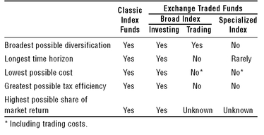
The first exchange traded fund, created in 1992 by Nathan Most, was named “Standard & Poor’s Depositary Receipts” (SPDRs), and quickly dubbed “Spider.” It was a brilliant idea. Investing in the S&P 500 Index, operated at low cost with high tax efficiency, and held for the long term, it held the prospect of providing ferocious competition to the traditional S&P 500 Index Fund. (Brokerage commissions, however, made it less suitable for investors making small investments regularly.) Most of the investors in the Spiders, however, were not long-term investors. They were active money managers, hedgers, and professional traders. Currently, some 65 million (!) shares of Spiders ($8.8 billion worth) are now traded every day.
第一只交易所交易基金由 Nathan Most 于 1992 年创立，名为「Standard & Poor's Depositary Receipts」（SPDRs），很快就被叫做「Spider」。这是个绝妙的主意。它投资于标普500指数，运作成本低、税务效率高，若长期持有，本有望对传统的标普500指数基金构成极其激烈的竞争。（不过，券商佣金使它不太适合那些定期做小额投资的投资者。）然而 Spider 的大多数投资者并不是长期投资者，而是主动型资金管理人、套期保值者和职业交易员。如今，每天大约有 6500 万股（！）Spider（价值 88 亿美元）在交易。
From that single fund, ETFs have grown to be a huge part—$410 billion—of the $1 trillion index fund asset base, a 41 percent share, up from just 9 percent as 2000 began and only 3 percent a decade ago. Led by index portfolios whose shares are rapidly traded in narrow market segments (despite their stark contradiction of each of the five concepts underlying the original index fund), ETFs have become a force to be reckoned with in the financial markets. Their amazing growth certainly says something about the energy of Wall Street’s financial entrepreneurs, the focus of money managers on gathering assets, the marketing power of brokerage firms, and the willingness—nay, eagerness—of investors to favor complexity over simplicity, continuing to believe, against all odds, that they can beat the market.
从那一只基金起步，ETF 已成长为 1 万亿美元指数基金资产基础中的一大块——4100 亿美元，占 41%；而 2000 年初这一比例仅为 9%，十年前更是只有 3%。引领这一增长的是那些在狭窄市场板块中被快速交易的指数组合（尽管它们与最初指数基金赖以立足的五个理念条条相悖），ETF 已成为金融市场上一股不可小觑的力量。它们的惊人增长，确实说明了华尔街金融创业者的干劲、基金经理对圈占资产的专注、券商公司的营销实力，以及投资者宁要复杂、不要简单的意愿——不，是热切。他们不顾一切地继续相信，自己能战胜市场。
The growth of ETFs has approached a stampede, not only in number but in diversity. There are now nearly 340 ETFs available, including 122 already formed during 2006, and the range of the investment choices available is remarkable. 22 There are 12 total stock market index funds (U.S. and international) such as the Spider, still the largest segment in terms of assets; 68 focused on investment styles; 173 based on stock market sectors; and 58 concentrating their assets in particular foreign countries. There are also a handful of bond ETFs and a scattering of ETFs utilizing high leverage (doubling the swings in the stock market), tracking commodity prices and currencies, and using other high-risk strategies.
ETF 的增长已近乎狂奔，不仅数量如此，种类亦然。如今市面上有近 340 只 ETF，其中 122 只是在 2006 年成立的，可选投资的范围令人瞠目。其中有 12 只全市场股票指数基金（美国和国际的），如至今在资产规模上仍占最大一块的 Spider；68 只专注于投资风格；173 只基于股市板块；58 只把资产集中于特定的外国。还有少数几只债券 ETF，以及零星若干采用高杠杆（把股市波动的幅度放大一倍）、追踪大宗商品价格与汇率、以及运用其他高风险策略的 ETF。
The march of assets into ETFs has also been impressive. Since 1999, ETFs have drawn $280 billion of net new money, even larger than the $190 billion flowing into their classic cousins. What’s more, the flow into style, sector, and foreign funds has overwhelmed the flow into the broad stock market index component. While these broad funds accounted for 100 percent of the total ETF inflow in the early years, they accounted for less than 20 percent from 2000 through 2006.
资金涌入 ETF 的阵势同样可观。自 1999 年以来，ETF 净吸纳新资金 2800 亿美元，甚至超过流入其经典同类的 1900 亿美元。更重要的是，流入风格、板块和海外基金的资金，已远远压过流入宽基股票市场指数那一部分的资金。早年这些宽基基金占 ETF 总流入的 100%，而 2000 年至 2006 年间，它们的占比不到 20%。
The renowned Purdey shotgun is great for big-game hunting in Africa. But it’s also excellent for suicide.
All-stock-market ETFs are the only instance in which an ETF can replicate, and possibly even improve on, the five paradigms of the original index fund listed earlier. But only when they are bought and held for the long-term. Their annual expense ratios are usually—but not always—slightly lower than their mutual fund counterparts, although commissions on purchases erode any advantage, and may even overwhelm it. While their tax efficiency should be higher, actual practice so far has failed to confirm theory, and investors who trade them are subject to their own taxes. Their use by long-term investors is minimal. The Spiders are, in fact, marketed to day traders. As the advertisements say, “Now you can trade the S&P 500 all day long, in real time.” I can’t help likening the ETF—a cleverly designed financial instrument—to the renowned Purdey shotgun, supposedly the world’s best. It’s great for big-game hunting in Africa. But it’s also excellent for suicide.
全市场股票 ETF 是唯一一种能够复制、甚至可能改进前面所列最初指数基金五个范式的 ETF。但前提是买入并长期持有。它们的年度费用率通常——但并非总是——略低于对应的共同基金，只是买入时的佣金会侵蚀掉这一优势，甚至可能完全抵消。它们的税务效率理应更高，但迄今为止实际表现并未印证理论，而且交易它们的投资者还得自行承担税负。长期投资者对它们的使用少之又少。事实上，Spider 是向日内交易者推销的。正如广告所说：「现在你可以全天候实时交易标普500指数。」我忍不住要把 ETF——这件设计巧妙的金融工具——比作那把号称世界最佳的著名 Purdey 猎枪。它是去非洲猎大型猎物的绝佳选择，但它用来自杀也很出色。
I suspect that too many ETFs will prove, if not suicidal to their owners in financial terms, at least wealth-depleting. We know that ETFs are largely used by traders, for the turnover of Spider shares is running at 3600 percent annual rate. The turnover for the NASDAQ Qubes is even higher, at 6,000 percent per year. It is only guesswork, but long-term investors hold perhaps 20 percent of the $100 billion assets of these Spider-like broadly diversified ETFs, or about $20 billion. The remaining assets, I presume, are held by market makers and arbitrageurs, making heavy use of short-selling and hedging strategies.
我怀疑，为数过多的 ETF 就算从财务上说不会令其持有人走上绝路，至少也会消耗财富。我们知道，ETF 主要由交易者使用，因为 Spider 份额的换手率年化高达 3600%。NASDAQ Qubes 的换手率更高，每年 6000%。这只是猜测，但在这些类似 Spider 的宽基分散 ETF 的 1000 亿美元资产中，长期投资者持有的或许只有 20%，约 200 亿美元。其余资产我推测由做市商和套利者持有，他们大量使用卖空和套期保值策略。
Assets of the other types of ETFs now total $310 billion. Trading these funds is also remarkably high. The shares of the major sector ETFs are typically turned over at an average annual rate of some 200 percent per year (an average holding period of just six months), with the most popular ETFs recently running turnover rates from 578 percent to 735 percent, all the way up to 7,100 percent (Russell 2000 iShares) and 8,500 percent (SPDR Energy shares). Could there be speculation going on here? In all, some $390 billion of the current $410 billion ETF base represents a vast departure from the beneficial attributes of the original index fund.
其他类型 ETF 的资产如今合计 3100 亿美元。这类基金的交易同样异常活跃。主要板块 ETF 的份额通常以每年约 200% 的平均速度换手（平均持有期仅六个月），而最近最热门的 ETF 换手率从 578% 到 735% 不等，甚至一路上升至 7,100%（Russell 2000 iShares）和 8,500%（SPDR Energy shares）。这里面会不会有投机在作祟？总而言之，当前 4100 亿美元的 ETF 资产基础中，约 3900 亿美元已大幅背离了最初指数基金的有益属性。
Yes, these specialized ETFs are diversified, but only in their narrow arenas. Owning the semiconductor industry is not diversification in any usual sense, nor is owning the South Korean stock market. And while sector ETFs frequently have the lowest expense ratios in their fields, they can run three to six times the level of the lowest-cost all-market index funds. What is more, sector ETFs not only carry brokerage and trading costs, but often are sold as parts of actively managed fund portfolios with adviser fees of 1 percent or more, or in wrap accounts with annual fees of 1.5 percent to 2.0 percent or more.
没错，这些专门化的 ETF 是分散的，但只在它们狭窄的领域内分散。持有半导体行业算不上通常意义上的分散，持有韩国股市也一样。而且，板块 ETF 的费用率虽然往往是各自领域中最低的，却可能达到成本最低的全市场指数基金的三到六倍。更何况，板块 ETF 不仅带有券商与交易成本，还常常作为主动管理基金组合的一部分被卖出，收取 1% 甚至更高的顾问费，或放在年费 1.5% 至 2.0% 甚至更高的全权委托账户（wrap accounts）里。
The net result of these differences is that sector ETFs as a group are virtually certain to earn returns that fall well short of the returns delivered by the stock market. Perhaps 1 percent to 3 percent a year is a fair estimate of these all-in costs, many times the 10 to 20 basis-point cost of the best classic index funds. It is not a trivial difference. For no matter how often derided or ignored, the tautology remains that sector funds, soundly administered, will earn a net return equal to the gross return of that sector, less intermediation costs.
这些差别造成的净结果是，板块 ETF 作为一个整体，几乎注定会赚到远远低于股市所提供回报的收益。这些综合成本合理估计约为每年 1% 至 3%，是最佳经典指数基金 10 至 20 个基点成本的许多倍。这绝非无关紧要的差别。因为无论这个同义反复被嘲笑或忽视多少次，它依然成立：管理得当的板块基金，其净回报等于该板块的毛回报减去中介成本。
But whatever returns each sector ETF may earn, the investors in those very ETFs will likely, if not certainly, earn returns that fall well behind them. There is abundant evidence that the most popular sector funds of the day are those that have recently enjoyed the most spectacular recent performance, and that such “after-the-fact” popularity is a recipe for unsuccessful investing. The lesson in Chapter 5—that mutual fund investors almost always do significantly worse than the funds they own, and still worse when they choose funds that are less diversified—is likely to be repeated in ETFs.
但无论每只板块 ETF 能赚到多少回报，投资于这些 ETF 的人所赚到的回报，很可能——如果不是必然——会远远落在它们后面。有大量证据表明，当下最热门的板块基金，正是那些近期表现最为耀眼的基金，而这种「事后」的热门恰恰是不成功投资的配方。第 5 章的教训——共同基金投资者几乎总是明显跑输自己所持有的基金，若他们挑选的基金分散程度更低，则输得更多——很可能在 ETF 上重演。
To illustrate this point, consider the record of the 20 best performing ETFs during 2003-2006. Only one earned a better return for its shareholders than the return it reported. The average shortfall in shareholder return was equal to 5 percentage points per year. The largest gap was 14 percentage points; iShares Austria reported a 42 percent return, but its investors earned just 28 percent. “Handle with Care” should be the first warning on the ETF label (though I have yet to see it used). Or perhaps: “CAU-TION: PERFORMANCE CHASING AT WORK.”
为说明这一点，不妨看看 2003—2006 年间表现最好的 20 只 ETF 的记录。只有一只为其股东赚到的回报高于它自己申报的回报。股东回报的平均缺口为每年 5 个百分点，最大的缺口达 14 个百分点；iShares Austria 申报回报 42%，但其投资者只赚到 28%。ETF 标签上的第一条警示应该是「小心轻放」（尽管我至今还没见谁用过）。或者也许该写：「注意：业绩追逐正在发生。」
A “double whammy”: betting on hot sectors (emotions) and paying heavy costs (expenses) are sure to be hazardous to your wealth.
And so we have a “double whammy”: the near-inevitability of counterproductive market timing (emotions), as investors bet on sectors as they grow hot—and bet against them when they grow cold—combined with those heavy commissions and fees (expenses). Together, these two enemies of the equity investor are sure to be hazardous to your wealth, to say nothing of consuming giant globs of your time that could easily be used in more productive and enjoyable ways.
于是我们就有了这记「双重重击」：一边是几乎无可避免、适得其反的择时（情绪）——投资者在板块变热时押注它们，在它们变冷时又反过来押注——另一边是那些沉重的佣金和费用（开支）。这两个股票投资者的敌人合在一起，必定会危害你的财富，更不用说还会吞噬你大把的时间，而这些时间本可以轻松用在更有成效、更令人愉快的事情上。
In 2006, ETFs were also at the cutting edge of the “market-beating” (at least in retrospect) strategies described earlier. These promoters and entrepreneurs seem to acknowledge that their “fundamental indexing” approach is a long-term strategy. Yet by choosing the ETF format, they strongly imply that bringing stockbrokers into the distribution mix and actively buying and selling the funds will lead to even larger short-term profits. I doubt it.
2006 年，ETF 也站到了前面所述那些「战胜市场」（至少事后看来如此）策略的最前沿。这些推销者和创业者似乎承认，他们那套「基本面指数化」方法是一种长期策略。然而，选择 ETF 这一形式，却强烈地暗示：把股票经纪商引入销售渠道、主动买卖这些基金，会带来更大的短期利润。我对此表示怀疑。
ETFs are an entrepreneur’s dream come true. But are they an investor’s dream come true?
ETFs are clearly a dream come true for entrepreneurs, stock brokers, and fund managers. But is it too much to ask whether these index funds nouveau are an investor’s dream come true? Do investors really benefit from being able to trade ETFs “all day long, in real time”? Is less diversification better than more diversification? Is trend-following a winner’s game, or a loser’s game? Are ETFs truly low-cost when we add brokerage commissions to their expense ratios? Is buy-and-sell (often with great frequency) really a better strategy than buy-and-hold? If the classic index fund was designed to capitalize on the wisdom of long-term investing, aren’t investors in these index funds nouveau too often engaging in the folly of short-term speculation? Doesn’t your own common sense give you the obvious answers to these questions?
对创业者、股票经纪商和基金经理来说，ETF 显然是一个得以成真的梦想。但问一句这些新派指数基金是不是投资者得以成真的梦想，这个要求过分吗？投资者真能从「全天候实时」交易 ETF 中获益吗？分散得少比分散得多更好吗？追趋势是赢家的游戏，还是输家的游戏？把券商佣金加进费用率之后，ETF 还真的低成本吗？买进卖出（往往极其频繁）真的比买入持有是更好的策略吗？如果说经典指数基金的设计初衷是利用长期投资的智慧，那么这些新派指数基金的投资者，是不是太常常陷入短期投机的愚蠢之中？你自己的常识，难道不已经给出了这些问题的显而易见答案吗？
On the broad spectrum that lies between advancing the interests of the business and the interests of the clients, where do ETFs fit? If you are making a single large initial purchase of either of those two versions of classic indexing—the Spider or the Vanguard Total Stock Market ETF—at a low commission rate and holding them for the long term, you’ll profit from their low expense ratios and may even enjoy a bit of extra tax efficiency. But if you trade them, you’re defying the relentless rules of humble arithmetic that are the key to successful investing. If you like the idea of sector ETFs, use the appropriate ones, don’t trade them, and use them in the right way—sparingly, and only to diversify your portfolio.
在「增进企业自身利益」与「增进客户利益」这条宽阔的光谱上，ETF 处在什么位置？如果你以低佣金率一次性大额买入经典指数化的那两种版本之一——Spider 或先锋全市场股票 ETF——并长期持有，你会从它们低廉的费用率中获益，甚至可能享受到一点额外的税务效率。但如果你交易它们，你就是在违背那条朴实算术的冷酷法则，而这条法则正是成功投资的关键。如果你喜欢板块 ETF 这个想法，那就用合适的那些，不要交易它们，并以正确的方式使用——用得节制，且只用来分散你的组合。
Let me now answer the question I asked at the outset of this chapter, “What have they done to my song, ma?” As the creator of the world’s first index fund all those years ago, I can only answer: “They’ve tied it up in a plastic bag and turned it upside down, ma, that’s what they’ve done to my song.” In short, the ETF is a trader to the cause of classic indexing. I urge intelligent investors to stay the course with the proven strategy. While I can’t say that classic indexing is the best strategy ever devised, your common sense should reassure you that the number of strategies that are worse is infinite.
现在让我来回答本章开头我提出的那个问题：「他们对我的歌做了什么，妈妈？」作为多年以前世界上第一只指数基金的创造者，我只能回答：「他们把它塞进塑料袋里、倒了个个儿，妈妈，他们就是这样对待我的歌。」简而言之，ETF 是经典指数化事业的叛徒。我敦促明智的投资者用这条久经检验的策略坚守正道。虽然我不能说经典指数化是有史以来设计出的最佳策略，但你的常识应当让你安心：比它更差的策略，数量是无穷的。
Chapter Sixteen
A Confirmation from Mr. Buffett
THE FIRST EDITION OF The Intelligent Investor was published in 1949. It was written by Benjamin Graham, the most respected money manager of the era, and coauthor (with David Dodd) of Security Analysis, a scholarly tome originally published in 1934. The Intelligent Investor is regarded as the best book of its kind—comprehensive, analytical, perceptive, and forthright—a book for the ages.
《The Intelligent Investor》（聪明的投资者）第一版出版于 1949 年，作者是本杰明·格雷厄姆（Benjamin Graham），那个时代最受尊敬的资金管理人，也是《Security Analysis》（证券分析）的合著者（与 David Dodd 合著）。那部学术巨著初版于 1934 年。《The Intelligent Investor》被认为是同类书中最好的一部——全面、善于分析、见解敏锐、直言不讳——是一部传世之作。
Although Benjamin Graham is best known by far for his focus on the kind of value investing represented by the category of stocks he describes as “bargain issues,” he cautioned, “the aggressive investor must have a considerable knowledge of security values—enough, in fact, to warrant viewing his security operations as equivalent to a business enterprise.... It follows from this reasoning that the majority of security owners should elect the defensive classification.”
尽管本杰明·格雷厄姆最为人所知的，当属他专注于被他称为「便宜货」（bargain issues）的那一类股票所代表的价值投资，但他也告诫说：「积极的投资者必须对证券价值有相当多的了解——事实上要多到足以把他的证券操作视同一门企业来经营……由这一推理可知，多数证券持有者应当选择防御型这一类别。」
The majority of investors should be satisfied with the reasonably good return obtainable from a defensive portfolio.
Why? Because “[the majority of investors] do not have the time, or the determination, or the mental equipment to embark upon such investing as a quasi-business. They should therefore be satisfied with the reasonably good return obtainable from a defensive portfolio, and they should stoutly resist the recurrent temptation to increase this return by deviating into other paths.” While the index fund was not even imagined in 1949, he was certainly describing the very approach that this precedent-setting fund would later follow. (Coincidently, it was also in 1949 that an article in Fortune magazine introduced me to the mutual fund industry, inspiring me to write my 1951 Princeton senior thesis on mutual funds, in which I even hinted at the index fund idea: “Mutual funds can make no claim to superiority over the market averages.”)
为什么？因为「[多数投资者]没有时间，也没有决心，更没有相应的头脑装备，去把这样的投资当作一门准生意来从事。因此他们应当满足于防御型组合所能获得的相当不错的回报，并且应当坚决抵制那种反复出现的诱惑——偏离到别的路上去以求得更高的回报。」虽然在 1949 年人们连指数基金的影子都还没有，但他所描述的，恰恰是这只开创先例的基金后来所遵循的做法。（巧合的是，也正是在 1949 年，《财富》杂志上的一篇文章让我初次接触到共同基金业，促使我以共同基金为题写下了 1951 年的普林斯顿毕业论文，我在文中甚至暗示了指数基金的构想：「共同基金无从宣称自己优于市场平均水平。」）
For the defensive investor who required assistance, Graham originally recommended professional investment advisers who rely on “normal investment experience for their results... and who make no claim to being brilliant (but) pride themselves on being careful, conservative, and competent... whose chief value to their clients is in shielding them from costly mistakes.” He cautioned about expecting too much from stock-exchange houses, arguing that “the Wall Street business fraternity... is still feeling its way toward the high standards and standing of a profession.” (A half-century later, the quest remains far from complete.)
对于需要帮助的防御型投资者，格雷厄姆最初推荐的是那些依靠「正常的投资经验取得业绩……不宣称自己才华出众，而是以谨慎、保守和称职自豪……对客户的主要价值在于使他们免于犯下代价高昂的错误」的专业投资顾问。他告诫人们不要对股票交易所机构期望过高，并主张「华尔街的生意圈子……仍在摸索着走向一门职业应有的高标准与地位。」（半个世纪之后，这一求索仍远未完成。）
He also noted, profoundly if obviously, that Wall Street is “in business to make commissions, and that the way to succeed in business is to give customers what they want, trying hard to make money in a field where they are condemned almost by mathematical law to lose.” Later on, in 1976, Graham described his opinion of Wall Street as, “highly unfavorable... a Falstaffian joke that frequently degenerates into a madhouse... a huge laundry in which institutions take in large blocks of each other’s washing.” (Shades of Harvard’s Jack Meyer and Yale’s David Swensen, from whom we heard earlier.)
他还深刻——虽然显而易见地——指出，华尔街「做的就是赚取佣金的生意，而在生意上取得成功的办法，就是把客户想要的东西给他们，让他们在一个几乎已被数学定律判定要输的领域里拼命赚钱。」后来，在 1976 年，格雷厄姆这样描述他对华尔街的看法：「非常不利……一个法斯塔夫式的笑话，常常堕落成疯人院……一间巨大的洗衣房，机构们在这里彼此送洗大块的衣物。」（这些影子，正是我们早先听过的哈佛的 Jack Meyer 和耶鲁的 David Swensen。）
In that first edition of The Intelligent Investor, Graham commended the use by investors of leading investment funds as an alternative to creating their own portfolios. Graham described the well-established mutual funds of his era as “competently managed, making fewer mistakes than the typical small investor,” carrying a reasonable expense, and performing a sound function by acquiring and holding an adequately diversified list of common stocks.
在《The Intelligent Investor》第一版中，格雷厄姆称赞投资者使用顶尖的投资基金，以此作为自己组建组合之外的另一种选择。他把当时那些成熟的共同基金描述为「管理称职，比典型的散户犯的错误更少」，收取合理的费用，并通过买进和持有分散得当的一篮子普通股，履行着一项健全的功能。
But he was bluntly realistic about what fund managers might accomplish. He illustrated this point in his book with data showing that from 1937 through 1947, when the Standard & Poor’s 500 Index provided a total return of 57 percent, the average mutual fund produced a total return of 54 percent, excluding the oppressive impact of sales loads. (The more things change, the more they remain the same.) Graham’s conclusion: “The figures are not very impressive in either direction... on the whole, the managerial ability of invested funds has been just about able to absorb the expense burden and the drag of uninvested cash.” In 1949, fund expenses and turnover costs were far lower than in the modern fund industry. That change explains why, as fund returns were overwhelmed by these costs in recent decades, the figures were impressive only in a negative direction.
但对于基金经理究竟能取得什么成绩，他现实得不留情面。他用书中的数据说明了这一点：1937 年至 1947 年间，标普500指数的总回报为 57%，而普通共同基金的总回报为 54%，这还没算上销售费那沉重的拖累。（事物越是变化，就越是保持原样。）格雷厄姆的结论是：「这些数字无论朝哪个方向看都不算亮眼……总体而言，所投资金的管理能力，仅仅勉强能够吸收掉费用负担和未投资现金的拖累。」1949 年，基金费用和换手成本都远低于现代基金业。这一变化正好解释了：近几十年来当基金回报被这些成本吞噬时，那些数字只是朝着负面方向才显得「亮眼」。
By 1965, Graham’s confidence that funds would produce the market’s return, less costs, was somewhat shaken. “Unsoundly managed funds,” he noted in a later edition of The Intelligent Investor, “can produce spectacular but largely illusionary profits for a while, followed inevitably by calamitous losses.” He was describing the so-called performance funds of the mid-1960s Go-Go era, in which a “new breed that had a spectacular knack for coming up with winners... (managed by) bright, energetic, young people who promised to perform miracles with other people’s money... (but) who have inevitably brought losses to their public in the end.” He could have as easily been presciently describing the hundreds of risky “new economy” mutual funds formed during the great bull market of 1998 to 2000, and their utter collapse in the subsequent 50 percent market crash that followed.
到 1965 年，格雷厄姆对于基金能产生市场回报减去成本之后的成绩这一信心，已有所动摇。他在《The Intelligent Investor》后来的一个版本中写道：「管理不当的基金，可以在一段时间内制造出可观却大体虚幻的利润，随后无可避免地招致灾难性的亏损。」他描述的正是 1960 年代中期「Go-Go」时代那些所谓的业绩基金：其中「一个新品种拥有令人瞩目的挑选赢家的本领……（管理者是一群）聪明、充满活力的年轻人，承诺要用别人的钱创造奇迹……（却）最终无可避免地给他们的公众带来了亏损。」他也完全可以用这些话，像先知一样精准地描述 1998 年至 2000 年大牛市中成立的那几百只高风险的「新经济」共同基金，以及它们在随后 50% 的市场崩盘中彻底瓦解的情形。
“Unsoundly managed funds can produce spectacular but largely illusionary profits for a while, followed inevitably by calamitous losses.”
Graham also would have been appalled, not only by the enormous (100 percent-plus) increase in those once-reasonable fund expenses, but also by the incredible increase in stock trading in mutual fund portfolios. During Graham’s era, portfolio turnover ran to about 15 percent per year. It now averages more than 100 percent. Graham would surely, and accurately, have described such an approach as rank speculation that flies directly in the face of his deeply held investment principles.
格雷厄姆还会感到震惊的，不仅是那些曾属合理的基金费用出现了巨大（超过 100%）的上涨，还有共同基金组合中股票交易的惊人增长。在格雷厄姆的时代，组合换手率每年约为 15%。如今平均已超过 100%。格雷厄姆想必会准确地把这种做法称为彻头彻尾的投机，与他深植于心的投资原则正面对撞。
Graham’s timeless lesson for the intelligent investor, as valid today as when he prescribed it in his first edition, is clear: “the real money in investment will have to be made—as most of it has been made in the past—not out of buying and selling but of owning and holding securities, receiving interest and dividends and increases in value.” His philosophy has been reflected over and over again in this book, exemplified in the parable of the Gotrocks family in Chapter 1 and the distinction between the business market and the expectations market in Chapter 2.
格雷厄姆留给明智投资者的永恒教诲，今天与他当初在第一版中开出时一样有效，而且说得明明白白：「投资中真正赚到的钱，将不得不——正如过去大部分的钱就是这样赚到的——来自持有和拥有证券、收取利息和股息并享受价值的增长，而不是来自买进卖出。」他的哲学在本书中一次又一次得到体现，第 1 章 Gotrocks 家族的寓言、第 2 章商业市场与预期市场之别，都是明证。
The real money in investment will be made not out of buying and selling but of owning and holding securities.
Owning and holding a diversified list of securities? Wouldn’t Graham recommend a fund that essentially buys the entire stock market and holds it forever, patiently receiving interest and dividends and increases in value? Doesn’t his admonition to “strictly adhere to standard, conservative, and even unimaginative forms of investment,” eerily echo the concept of market indexing? When he advises the defensive investor “to emphasize diversification more than individual selection,” hasn’t Benjamin Graham come within inches of describing the modern-day stock index fund?
持有和拥有一篮子分散的证券？格雷厄姆难道不会推荐一只实质上是买下整个股市并永远持有的基金，耐心地收取利息、股息并享受价值增长吗？他「严格遵守标准、保守、甚至毫无想象力的投资形式」这一告诫，难道不正是与市场指数化的理念惊人地呼应吗？当他劝告防御型投资者「要更强调分散化，而不是个股挑选」时，本杰明·格雷厄姆难道不是已经离描述现代股票指数基金只差咫尺了吗？
Late in his life, in an interview published in 1976, Graham candidly acknowledged the inevitable failure of individual investment managers to outpace the market. (Again coincidentally, the interview took place at the very moment that the public offering of the world’s first mutual index fund—First Index Investment Trust, now Vanguard 500 Index Fund—was taking place.) He was asked, “Can the average manager obtain better results than the Standard & Poor’s Index over the years?” Graham’s blunt response: “No.” Then he explained: “In effect that would mean that the stock market experts as a whole could beat themselves—a logical contradiction.”23
晚年的格雷厄姆在 1976 年发表的一篇访谈中，坦率地承认了个体投资管理人无可避免地无法跑赢市场。（又是个巧合：这篇访谈进行之时，世界上第一只共同指数基金——First Index Investment Trust，即现在的先锋 500 指数基金——的公开募集也恰好在进行。）他被问道：「普通管理人多年来能取得比标普指数更好的成绩吗？」格雷厄姆的回答干脆利落：「不能。」接着他解释道：「那实际上意味着股市专家作为一个整体能够战胜他们自己——这是逻辑上的自相矛盾。」
Then he was asked whether investors should be content with earning the market’s return. Graham’s answer: “Yes.” All these years later, the idea that earning your fair share of the stock market’s return is the winning strategy is the central theme of this Little Book. Only the classic index fund can guarantee that outcome.
然后他被问到，投资者是否应当满足于赚取市场的回报。格雷厄姆的回答是：「应当。」这么多年过去，赚到股市回报中自己应得的那一份才是制胜策略，这一观点正是这本小书的核心主题。只有经典指数基金能够保证这一结果。
Finally, he was asked about the objection made against the index fund—that different investors have different requirements. Again, Graham responded bluntly: “At bottom that is only a convenient cliché or alibi to justify the mediocre record of the past. All investors want good results from their investments, and are entitled to them to the extent that they are actually obtainable. I see no reason why they should be content with results inferior to those of an indexed fund or pay standard fees for such inferior results.”
最后，他被问及针对指数基金提出的一个反对意见——不同投资者有不同需求。格雷厄姆再次直言不讳地回答：「说到底，这不过是一句方便的套话或借口，用来为过去平庸的业绩开脱。所有投资者都希望自己的投资有好成绩，并且，只要这些成绩确实能够达到，他们就有权得到。我看不出有什么理由，让他们满足于比指数基金更差的结果，或者为这种更差的结果支付标准费用。」
“I see no reason why investors should be content with results inferior to those of an indexed fund.”
The name Benjamin Graham is intimately connected, indeed almost synonymous, with “value investing” and the search for undervalued securities. But his classic book gives far more attention to the down-to-earth basics of portfolio policy—the straightforward, uncomplicated principles of diversification and rational long-term expectations, two of the overarching themes of the little book you are now reading—than to solving the sphinxlike riddle of selecting superior stocks through careful security analysis.
本杰明·格雷厄姆这个名字与「价值投资」以及寻找被低估证券的活动密切相关，甚至几乎就是它的同义词。但他那本经典之作，着力更多的却是组合政策的朴实基本功——分散化与理性的长期预期这些直截了当、毫不复杂的原则（也是你现在正读的这本小书的两大统领性主题）——而不是去破解那个如斯芬克斯之谜般的难题：如何通过细致的证券分析挑选出优异股票。
Graham was also well aware that the superior rewards he had reaped using his valuation principles would be difficult to achieve in the future. In that 1976 interview, he made this remarkable concession, “I am no longer an advocate of elaborate techniques of security analysis in order to find superior value opportunities. This was a rewarding activity, say, 40 years ago, but the situation has changed a great deal since then. In the old days, any well-trained security analyst could do a good professional job of selecting undervalued issues through detailed studies; but in the light of the enormous amount of research now being carried on, I doubt whether in most cases such extensive efforts will generate sufficiently superior selections to justify their cost.”
格雷厄姆也很清楚，他运用自己的估值原则所获得的超额回报，未来将难以实现。在那篇 1976 年的访谈中，他做出了这一令人瞩目的让步：「我不再主张运用繁复的证券分析技术去寻找卓越的价值机会。这在比方说 40 年前是一项有回报的活动，但自那以后情况已大变。过去，任何训练有素的证券分析师都能通过细致研究，为挑选被低估的证券做出不错的专业工作；但鉴于如今正在进行的研究数量之巨，我怀疑在多数情况下，如此大量的努力能否产生足够优越的选择，以证明其成本是值得的。」
It is fair to say that, by Graham’s demanding standards, the overwhelming majority of today’s mutual funds, largely because of their high costs and speculative behavior, have failed to live up to their promise. As a result, a new type of fund—the index fund—is now gradually moving toward ascendancy. Why? Both because of what it does—providing the broadest possible diversification—and because of what it doesn’t do—neither assessing high costs nor engaging in high turnover. These paraphrases of Graham’s copybook maxims are an important part of his legacy to that vast majority of shareholders who, he believed, should follow the principles he outlined for the defensive investor.
可以说，按格雷厄姆严苛的标准衡量，当今绝大多数共同基金都未能兑现自己的承诺，这在很大程度上是因为它们高昂的成本和投机行为。于是，一种新型基金——指数基金——如今正逐渐走向主导地位。为什么？既因为它所做之事——提供尽可能广泛的分散化，也因为它不做之事——既不收取高昂成本，也不进行高换手。这些对格雷厄姆格言式箴言的化用，是他留给广大股东遗产的重要部分；他相信，这绝大多数股东都应当遵循他为防御型投资者所勾勒的原则。
“To achieve satisfactory investment results is easier than most people realize.”
It is Benjamin Graham’s common sense, clear thinking, simplicity, and sense of financial history—along with his willingness to hold fast to the sound principles of long-term investing—that constitute his lasting legacy. He sums up his advice: “Fortunately for the typical investor, it is by no means necessary for his success that he bring the time-honored qualities... of courage, knowledge, judgment and experience... to bear upon his program—provided he limits his ambition to his capacity and confines his activities within the safe and narrow path of standard, defensive investment. To achieve satisfactory investment results is easier than most people realize; to achieve superior results is harder than it looks.”
正是本杰明·格雷厄姆的常识、清晰的思考、简洁朴实、以及他对金融史的感觉——再加上他愿意坚守长期投资的健全原则——构成了他持久的遗产。他这样概括自己的建议：「对典型投资者来说幸运的是，他要获得成功，绝不需要把勇气、知识、判断力和经验这些由来已久的品质……运用到自己的方案上——只要他把自己的雄心限制在能力范围之内，把自己的活动局限在标准、防御型投资那条安全而狭窄的道路上。要取得令人满意的投资结果，比大多数人以为的要容易；要取得卓越的结果，则比看上去的要难。」
When it’s so easy—in fact unbelievably simple—to capture the stock market’s returns through an index fund, you don’t need to take extra risks—and wasteful costs—in striving for superior results. With Benjamin Graham’s long perspective, common sense, hard realism, and wise intellect, there is no doubt whatsoever in my mind that he would have applauded the index fund.
当通过一只指数基金捕捉股市回报如此容易——事实上简单得令人难以置信——你就不必为了追求卓越的结果而去承担额外的风险，付出浪费的成本。凭着本杰明·格雷厄姆的长远眼光、常识、冷峻的现实主义和睿智的头脑，我毫不怀疑，他一定会为指数基金喝彩。
Chapter Seventeen
Reprise
IF THE MESSAGE IN this book comes across as confident, please understand that it is little more than common sense. Even more, please understand that my confidence in the index fund is buttressed by the conclusions of many of the smartest, most experienced, most successful investors in the United States including Warren Buffett, Charlie Munger, and Benjamin Graham, along with top academics and endowment managers—Nobel Laureates Paul Samuelson, William Sharpe, and Daniel Kahneman and Princeton’s Burton Malkiel, Yale’s David Swensen, Harvard’s Jack Meyer, and MIT’s Andrew Lo.
如果本书传递出的信息显得信心十足，请理解，这不过是常识而已。更进一步说，请理解，我对指数基金的信心，来自美国许多最聪明、最有经验、最成功的投资者的结论，其中包括沃伦·巴菲特（Warren Buffett）、查理·芒格（Charlie Munger）和本杰明·格雷厄姆（Benjamin Graham），以及顶尖学者和捐赠基金经理——诺贝尔奖得主保罗·萨缪尔森（Paul Samuelson）、威廉·夏普（William Sharpe）和丹尼尔·卡尼曼（Daniel Kahneman），普林斯顿的伯顿·马尔基尔（Burton Malkiel）、耶鲁的大卫·史文森（David Swensen）、哈佛的杰克·迈耶（Jack Meyer）和麻省理工的安德鲁·罗（Andrew Lo）。
To these independent experts add fund industry insiders like Magellan’s Peter Lynch, former Investment Company Institute Chairman Jon Fossel, Philadelphia money manager Ted Aronson, hedge fund manager Cliff Asness, fund supermarket king Charles Schwab, and analyst Mark Hulbert. Then heed the similar advice of financial journalists, from Tyler Mathisen and Jason Zweig of Money magazine, to the Economist of London and its neighbor The Spectator; and Jonathan Clements and Holman Jenkins, Jr., of the Wall Street Journal. Perhaps even more important, don’t forget the convictions of intelligent investors—hundreds of corporate and government pension funds and millions of individuals, from the very wealthy to the man on the street—who have put their money where their mouth is, now investing some $5 trillion in index strategies.
在这些独立专家之外，再加上基金业内部人士，比如麦哲伦基金的彼得·林奇（Peter Lynch）、投资公司协会前主席乔恩·福塞尔（Jon Fossel）、费城基金经理特德·阿伦森（Ted Aronson）、对冲基金经理克利夫·阿斯内斯（Cliff Asness）、基金超市之王查尔斯·施瓦布（Charles Schwab），以及分析师马克·赫尔伯特（Mark Hulbert）。再听听财经记者们类似的建议：从《Money》杂志的泰勒·马西森（Tyler Mathisen）和杰森·茨威格（Jason Zweig），到伦敦的《经济学人》（the Economist）及其邻居《旁观者》（The Spectator），再到《华尔街日报》的乔纳森·克莱门茨（Jonathan Clements）和小霍尔曼·詹金斯（Holman Jenkins, Jr.）。也许更重要的是，别忘了那些明智投资者的信念——数百家企业与政府养老金计划、数以百万计的个人，从巨富到街头普通人——他们把钱押在自己说的话上，如今投入指数策略的资金已达约 5 万亿美元。
That confidence is further buttressed by simply looking at the record, as discussed in chapter after chapter. That record confirms the superiority of indexing—by a wide margin—over the average stock fund (and the average bond fund as well) and—by an even wider margin—over the average fund investor. Further, the superiority of the index fund is based, not on the fleeting accomplishments of a tiny handful of funds (often achieved by money managers who had ceased managing the funds’ portfolios years earlier), but on the permanent accomplishments of an all-market strategy where no money manager even enters the picture. Truly, the classic index fund is the only mutual fund you can hold forever.
只要看看历史记录，这份信心就更加稳固，本书一章又一章地讨论了这一点。记录证实了指数化相对于平均股票基金（以及平均债券基金）的优越性——而且优势明显；相对于平均基金投资者，优势还要更大。此外，指数基金的优越性并非建立在极少数基金的短暂业绩之上（这些业绩往往由多年前就已不再管理基金组合的基金经理取得），而是建立在全市场策略恒久不变的成就之上——在这样一个策略里，根本不需要基金经理出场。说真的，经典指数基金是唯一一只你可以永远持有的共同基金。
As John Maynard Keynes warned earlier in a different context, historical returns are of no value unless we can explain the source of those returns. In this context, let me reiterate the two basic sources of the superior returns achieved by the index fund: (1) the broadest possible diversification, eliminating individual stock risk, style risk, and manager risk, with only market risk remaining; and (2) the tiniest possible costs and minimal taxes. Together, they enable the index fund to provide the gross return earned in the stock market, minus a scintilla of cost.
正如约翰·梅纳德·凯恩斯（John Maynard Keynes）曾在另一个语境中警告过的：如果我们无法解释回报的来源，历史回报就毫无价值。在这个语境下，请允许我重申指数基金取得优越回报的两个基本来源：(1) 尽可能广泛的分散化，消除个股风险、风格风险和基金经理风险，只留下市场风险；(2) 尽可能低的成本和最少的税负。两者结合，使指数基金能够提供股票市场赚到的毛回报，只减去一丁点成本。
The two sources of the superior returns of the index fund: (1) the broadest possible diversification; and (2) the tiniest possible costs.
Actively managed equity mutual funds as a group also provide, as common sense tells you, a gross return equal to the average return of the market. Today, holding almost 25 percent of all U.S. stocks, they trade largely with one another, enriching on balance only the brokers who receive the commissions on their vigorous trading of portfolio securities (and who also happen to sell their shares) and the management companies that control them, as a result impoverishing, as it were, the net returns that the funds deliver to their investors.
常识告诉你，主动管理的股票型共同基金作为一个整体，所提供的毛回报同样等于市场的平均回报。如今，它们持有全美约 25% 的股票，却主要是在彼此之间交易，总体而言只养肥了两类人：一是从它们频繁买卖组合证券中收取佣金的经纪商（这些经纪商恰好也向它们卖出份额），二是控制它们的基金管理公司；结果就相当于掏空了这些基金交付给投资者的净回报。
Fund investment managers, distributors, marketers, administrators, brokers, and investment bankers have garnered staggering rewards for themselves. But the high prices they charge for their services, their high turnover policies and the attendant transaction costs, and the excessive taxes that their investors incur have siphoned off an enormous portion of the high real returns provided by the stock market in the past. With the subdued real returns on stocks that seem almost destined to prevail in the future (discussed in Chapter 7), those same huge rewards to those in the fund business will confiscate an even larger share—indeed, the lion’s share—of the stock market’s real return.
基金的投资经理、分销商、营销人员、行政人员、经纪商和投资银行家为自己攫取了惊人的回报。但他们为服务收取的高价、高换手率政策及其带来的交易成本、以及投资者承担的过度税负，已经抽走了过去股市所提供的高额实际回报中的极大一部分。而未来似乎几乎注定是股票实际回报低迷的环境（第 7 章有讨论），届时基金业内那些人拿到的同样巨额回报，将吞掉股市实际回报中更大的一块——事实上是最大的一块。
On the one hand, it is as certain as the rising and setting of the sun that the large cost advantage that exists for the index fund will continue in the years ahead. Price competition among index funds will keep the expense ratios of the low-cost providers at a minuscule level. On the other hand, marketing competition and the drive for profits among the giant financial conglomerates that hold dominion over the fund industry will create strong pressure to maintain the high fee revenues generated by their actively managed funds where, tragically, investors too often ignore the impact of the baneful fees that they pay.
一方面，指数基金所拥有的大幅成本优势在今后几年必将继续存在，这就像日出日落一样确定。指数基金之间的价格竞争，会让低成本提供者的费用率保持在极低水平。另一方面，掌控基金业的巨型金融集团之间的营销竞争和对利润的追逐，会形成强大压力，促使它们维持主动管理基金所产生的高额费用收入——而可悲的是，投资者往往忽视自己付出的那些有害费用所带来的影响。
It is at least theoretically possible that the fund industry will at last turn from its present competition to raise prices in order to serve the interest of fund sellers, to a new competition to cut prices and serve the interest of fund buyers. But it’s impossible to imagine that the huge gap between the all-in costs of the index fund and the all-in costs of the average equity fund—a gap that has now reached some 2.5 percentage points per year—will be significantly reduced. And even if the gap were slashed by one-half—which will only happen (to use a wonderful barnyard metaphor for the inconceivable) when pigs finally whistle—the classic index fund would remain the investment of choice.
至少在理论上，基金业有可能终于从眼下这场抬高价格、服务基金卖方利益的竞争，转向一场压低价格、服务基金买方利益的新竞争。但很难想象，指数基金的总成本与平均股票型基金的总成本之间那道巨大的差距——如今已达到每年约 2.5 个百分点——会被显著缩小。而即便这道差距被砍掉一半——这只有等到猪会吹口哨的时候才会发生（这是形容不可能之事的一个绝妙的农家比喻）——经典指数基金仍然是最佳选择。
There’s also no guarantee that fund investors will continue to suffer that additional loss of the 3 percentage points per year of return that they have incurred in the past through the twin penalties of market timing and fund selection. If investors, however, finally realize the error of their ways, the negative impact of their counterproductive emotions could be substantially reduced in the years ahead. At some point, after all, smart investors ought to figure out for themselves that pouring money into hot funds in hot markets, and pulling money out of those funds when they turn cool, often in cold markets, is a loser’s game.
同样也无法保证，基金投资者会继续承受他们过去因择时和选基这双重惩罚而每年损失的那额外 3 个百分点的回报。不过，如果投资者终于意识到自己的错误，那么在未来几年里，他们那些适得其反的情绪所造成的负面影响可能会大幅减少。毕竟，聪明的投资者总该自己弄明白：在市场火热时把钱投进热门基金，等这些基金转冷、常常是在市场也转冷时又把钱抽出来，这是输家的游戏。
On the other hand, with the craze in trading ETFs, the gap could get even larger. Whatever the case, it seems set in stone that a substantial gap between the return earned by fund investors and the returns reported by the funds themselves will continue to exist. If you expect a substantial reversal of that trend, I would simply warn: don’t count on it.
另一方面，随着炒卖交易所交易基金（ETF）之风盛行，这道差距甚至可能更大。无论哪种情况，基金投资者实际赚到的回报与基金自己报告的回报之间存在巨大差距，看来已成定局，并将继续存在。如果你指望这一趋势会大幅逆转，我只想警告一句：别指望。
But above all, I’m confident about the long-term success that lies in store for sound investment in business through the classic index fund and those who invest in it, because virtually the entire case that I present is based on “the relentless rules of humble arithmetic.” Lest we forget, let me again take you through these commonsense rules:
但最重要的是，我对通过经典指数基金稳健投资于企业——以及这样做的人——所将获得的长期成功充满信心，因为我提出的几乎全部论证，都建立在「朴素算术的无情法则」之上。以免我们遗忘，请让我再次带你把这几条常识法则过一遍：
QED 1: In investing, the winning strategy for reaping the rewards of capitalism depends on owning businesses, not trading stocks.
证毕 1：在投资中，要想收获资本主义的回报，制胜策略在于拥有企业，而不是交易股票。
The best protection for individual investors from the risks inherent in individual stocks is the broadest possible diversification.
个人投资者要防御个股固有风险，最好的办法就是尽可能广泛的分散化。
QED 2: Owning businesss in the aggregate through an all-market index fund is the consummate risk-reduction strategy. (Broad economic risks to corporate earnings and dividends, however, cannot be diversified away.)
证毕 2：通过全市场指数基金整体持有企业，是最极致的风险削减策略。（不过，企业盈利和股息所面临的普遍经济风险，是无法分散掉的。）
QED 3: Gross market return, minus costs, equals net return for investors as a group. (Again, remember the Gotrocks family.)
证毕 3：市场毛回报减去成本，等于投资者整体的净回报。（再说一次，别忘了 Gotrocks 家族。）
QED 4: Gross market return, minus costs, minus timing and selection penalties, equals the net return earned by mutual fund investors as a group.
证毕 4：市场毛回报减去成本，再减去择时与选基的惩罚，等于共同基金投资者整体赚到的净回报。
Let me remind you again of the “4 Es” that you read about in Chapter 5: The two greatest enemies of the equity fund investor are expenses and emotions. In that context, the index fund is the investment of choice because all the other choices have serious problems. These problems begin with the grossly excessive costs that overwhelm the ability of all but the ablest (or luckiest) fund managers to outpace the index fund. But they don’t end there, for the mutual fund industry has created for itself other problems that are wholly counterproductive to the interests of the investors that it seeks to serve.
让我再提醒你一次第 5 章里读到的「4 个 E」：股票基金投资者最大的两个敌人是费用和情绪（expenses 和 emotions）。在这个意义上，指数基金是最佳选择，因为其他所有选择都有严重问题。这些问题首先来自高得离谱的成本，它压过了除最能干（或最走运）的基金经理之外所有人跑赢指数基金的能力。但问题不止于此，因为共同基金业还为自己制造了另外一些问题，这些问题对它想要服务的投资者利益完全是适得其反的。
Common sense suggests that fund owners should control their funds.
These problems include:
这些问题包括：
No business can forever ignore the interest of its clients. The fund industry could do so during the 1980s and 1990s only because it was blessed with the powerful tailwind of financial markets that provided the highest returns in all history—18 percent from stocks, 80 percent above the long-term average of 10 percent; 10 percent from bonds, 100 percent above the long-term average of 5 percent. But while investors seemed willing to accept the loss of a few percentage points from those enormous returns (if they were even aware of the impact of those all-in costs), they surely will not accept such a loss in the environment of sharply lower returns on stocks and bonds alike that seem certain in the years ahead. And as investors come to rely on a measurement benchmark based not on nominal returns, but on real returns, they will be even more skeptical about the ability of the fund industry to serve their interests.
没有哪门生意可以永远无视客户的利益。基金业在 1980 年代和 1990 年代之所以还能这样做，只是因为它幸而得到了金融市场强劲顺风的相助，那是有史以来最高的回报——股票 18%，比 10% 的长期平均水平高出 80%；债券 10%，比 5% 的长期平均水平高出 100%。但是，尽管投资者似乎愿意接受从这些巨额回报中损失几个百分点（如果他们确实意识到全部成本的影响的话），在未来几年里股票和债券回报都将大幅下降、这看上去已成定局的情况下，他们肯定不会再接受这样的损失。而且，随着投资者转而采用不以名义回报、而以实际回报为基础的衡量基准，他们会对基金业服务其利益的能力更加怀疑。
No business can forever ignore the interest of its clients.
The fund industry, finally, will be hoist on its own petard—an explosion created by the lethal mix of a flawed governance structure with a failed industry mission. Its unremitting aim to build enormous assets through opportunistic marketing and “new product” adventurism, all lumped on top of costs that cannot possibly be recouped by superior performance. In a brutish world peopled by smart, educated, experienced, and professional money managers who are competing with one another, managers as a group are inevitably consigned to average returns before costs; and after costs are deducted, they are destined to be losers. The arithmetic is unarguable.
最后，基金业终将搬起石头砸自己的脚——这场爆炸源于有缺陷的治理结构与失败的行业使命的致命混合。它不遗余力地通过投机性营销和「新产品」冒险来堆积巨额资产，而所有这些又都压在那些绝无可能靠优异业绩赚回来的成本之上。在一个由聪明、受过良好教育、经验丰富的专业基金经理彼此竞争的无情世界里，基金经理作为一个整体，扣除成本之前必然只能拿到平均回报；而扣除成本之后，他们注定是输家。这算术无可争辩。
“Remember, O Stranger, arithmetic is the first of the sciences.” The mutual fund industry has forgotten that simple rule. Unless it changes, the industry will begin a long decline, condemned to its fate by its willingness, even its eagerness, to ignore the relentless rules of humble arithmetic. As more and more investors come to recognize the simple commonsense truth of these humble realities, the passively managed index fund is destined to become an even more formidable competitor to its actively managed rivals.
「记住，哦，陌生人，算术是第一门科学。」共同基金业已经忘了这条简单的法则。除非它做出改变，否则这个行业将开始漫长的衰落，而判定了它命运的，正是它自己愿意、甚至急于无视朴素算术的无情法则这一点。随着越来越多的投资者认识到这些朴素现实的常识真理，被动管理的指数基金注定会成为主动管理的竞争对手们更难对付的敌手。
Chapter Eighteen
Funny Money, Serious Money, and Investment Strategy
DEEP DOWN, I REMAIN absolutely confident that the vast majority of American families will be well served by owning their equity holdings in an all-U.S. stock-market index portfolio and holding their bonds in an all-U.S. bond-market index portfolio. (Investors in high tax brackets, however, would hold a very low-cost quasi-index portfolio of high-grade intermediate-term municipal bonds.) While such an index-driven strategy may not be the best investment strategy ever devised, the number of investment strategies that are worse is infinite. The rationale for a 100-percent-index-fund portfolio remains as solid as a rock. It’s all about common sense.
打心底里，我始终坚信，绝大多数美国家庭最好的做法是：把股票持仓放在一只全美股票市场指数组合里，把债券持仓放在一只全美债券市场指数组合里。（不过，处在高税率档的投资者，应当持有一个成本极低的准指数组合，由高评级中期市政债构成。）这样一种指数驱动的策略，也许不是有史以来最好的投资策略，但比它更差的投资策略却有无数种。100% 由指数基金构成的组合，其道理依然坚如磐石。归根结底，这就是常识。
While an index-driven strategy may not be the best investment strategy ever devised, the number of investment strategies that are worse is infinite.
But I also fear, again deep down, that very few investors will follow that approach—the essence of simplicity—for their entire investment portfolio. You must now be as exhausted as I am by the unremitting pounding of my theme that simplicity is the answer and that complexity simply doesn’t work. But we investors seem all-too-willing to ignore the verities described in this book. Instead of index funds, we opt for costly active funds and trade them to excess. Why? We are sold funds more often than we buy them. We have far too much self-confidence. We crave excitement. We succumb to the distraction that is the stock market. We fail to understand the arithmetic of investing, and the arithmetic of mutual funds.
但我同样打心底里担心，只有极少数投资者会把这套简朴至极的做法应用到自己的整个投资组合上。我一遍又一遍地敲打同一个主题——简单才是答案，复杂根本行不通——想必你已经和我一样听得精疲力竭。可我们投资者似乎太乐意无视本书描述的那些真理。我们不选指数基金，而去选成本高昂的主动基金，还过度交易它们。为什么？因为我们被推销基金的时候，多过我们自己主动去买。因为我们自信过头。因为我们渴望刺激。因为我们沉溺于股市这个让人分心的东西。因为我们不理解投资的算术，也不理解共同基金的算术。
I cannot tell you whether betting on a particular manager who pursues an active investment strategy will win or lose in the future. But I can guarantee that it hasn’t worked very well in the past. To be sure, there are lots of smart, engaging, purposeful money managers and financial advisers. And all of the activity that seems endemic to the investment business can be exciting and enticing. But after all is said and done, there are no surefire solutions for investment success—wealth without risk, if you will. It’s just not a realistic expectation. Nonetheless, building an investment portfolio can be exciting, and trying out modern remedies for age-old problems lets you exercise your animal spirits. If you crave excitement, I would encourage you to do exactly that. Life is short. If you want to enjoy the fun, enjoy! But not with one penny more than 5 percent of your investment assets.
我无法告诉你，押注某位奉行主动投资策略的基金经理，将来是赢是亏。但我可以保证，这种做法在过去表现并不怎么好。确实，有许多聪明、有魅力、目标明确的基金经理和理财顾问。投资这门生意里似乎无处不在的各种活动，也的确令人兴奋、充满诱惑。但说来说去，并不存在什么确保投资成功的灵丹妙药——比如，无风险的财富。这根本不是一个现实的期待。话虽如此，搭建一个投资组合可以是件令人兴奋的事，用现代办法去试试那些由来已久的老问题，也能让你释放自己的动物精神。如果你渴望刺激，我反倒鼓励你就去做。人生苦短。想享受这份乐趣，就去享受！但投入的钱，不要超过你投资资产的 5%，一分钱也不多。
That can be your Funny Money account. But at least 95 percent of your investments should be in your Serious Money account. That core of your program should consist of at least 50 percent in index funds, up to 100 percent. What about your Funny Money account? Enjoy the fun of gambling and the thrill of the chase, but not with your rent money and certainly not with college education funds for your children, nor with your retirement nest egg. Test, if you will, two or three aggressive investment strategies. You’re likely to learn some valuable lessons, and it probably won’t hurt you too much in the short term. Here are seven Funny Money approaches, and my advice about using them:
那可以算你的「娱乐资金」账户。但你的投资中至少 95% 应当放在「正经资金」账户里。而你整个方案的核心部分，至少应有 50% 放在指数基金上，最多可以到 100%。那「娱乐资金」账户呢？去享受赌博的乐趣和追逐的刺激吧，但别拿交房租的钱，更别拿孩子的大学教育金，也别拿你的退休养老金。想试的话，不妨试两三种激进的投资策略。你很可能会学到一些宝贵的教训，短期内大概也不会让你伤得太重。下面是七种「娱乐资金」玩法，以及我对如何使用它们的建议：
In your Serious Money Account, 50 percent to 95 percent in classic index funds. In your Funny Money Account, not one penny more than 5 percent.
If you decide to have a Funny Money Account, be sure to measure your returns after one year, after five years, and after ten years. Then compare those returns with the returns you’ve earned in your Serious Money Account. I’m betting that your Serious Money will win in a landslide. If it does, you can then decide whether all that fun was adequate compensation for the potential wealth you’ve relinquished.
如果你决定开设「娱乐资金」账户，一年后、五年后、十年后一定要衡量一下自己的回报，再把这回报与你在「正经资金」账户里赚到的回报作比较。我打赌，你的「正经资金」会以压倒性优势获胜。如果真是这样，你就可以判断一下：那些乐趣，是否足以补偿你为此放弃的潜在财富。
Fun, finally, may be a fair enough purpose for your Funny Money account. But how, you ask, should you invest your Serious Money Account—that 50 percent to 95 percent of your assets which you now depend on, or will one day depend on, for retirement? Use an index fund strategy. Even better, use it for 100 percent of your assets.
说到底，图个乐子，作为「娱乐资金」账户的存在理由也许已经足够。但你可能会问，那「正经资金」账户该怎么投——那可是你如今、或将来某一天要赖以养老的那 50% 到 95% 的资产？用指数基金策略。更好的做法是，把它用于你 100% 的资产。
The fact that few of you are likely to go that far doesn’t mean it isn’t the best strategy. Here, listen to Warren Buffett: “Most investors, both institutional and individual, will find that the best way to own common stocks is through an index fund that charges minimal fees. Those following this path are sure to beat the net results (after fees and expenses) delivered by the great majority of investment professionals.” (Don’t forget that indexing is also, for most investors, the best way to own bonds.)
你们当中很少有人会走到那一步，但这并不意味着它不是最好的策略。这里，听听沃伦·巴菲特（Warren Buffett）怎么说：「大多数投资者，无论是机构还是个人，都会发现，持有普通股的最佳方式是通过一只收取最低费用的指数基金。走这条路的人，一定能战胜绝大多数投资专业人士交出的净业绩（扣除费用和开支之后）。」（别忘了，对大多数投资者来说，指数化也是持有债券的最佳方式。）
Reasonable alternative strategies for supplementing the index funds in your Serious Money portfolio.
While I favor the pristine and classic all-U.S.-stock-market and all-bond-market approach, there are perfectly reasonable alternative strategies for supplementing the index funds in your Serious Money portfolio. Kept within limits, here are some acceptable variations:24
虽然我偏爱那种纯粹而经典的全美股票市场加全债券市场的做法，但要在「正经资金」组合里补充指数基金，其实也有完全合理的替代策略。只要控制在限度以内，下面这些变通都是可以接受的：
For all the inevitable uncertainty amidst the eternally dense fog surrounding the world of investing, there remains much that we do know.
As you seek investment success, realize that it’s never given to us to know what the returns stocks and bonds will deliver in the years ahead, nor the future returns that might be achieved by alternatives to the index portfolio. But take heart. For all the inevitable uncertainty amidst the eternally dense fog surrounding the world of investing, there remains much that we do know. Just consider these commonsense realities:
在你追求投资成功的时候，要明白我们从来无缘得知：未来这些年股票和债券会带来什么回报，也无法知道指数组合之外的替代选择将来能取得怎样的回报。但请振作起来。投资世界里永远笼罩着浓雾，必然充满不确定，但依然有许多事情是我们确知的。只要看看下面这几条常识现实：
Our task remains: earning our fair share of whatever returns that our business enterprises are generous enough to provide in the years to come. That, to me, is the definition of investment success. The classic index fund is the only investment that guarantees the achievement of that goal. Don’t count yourself among the losers who will fail to outpace the stock market. You will be a winner if you follow the simple commonsense guidelines in this Little Book.
我们的任务始终不变：在未来的岁月里，赚取我们的企业慷慨提供的那份回报中属于我们的公平份额。在我看来，这就是投资成功的定义。经典指数基金是唯一能保证达成这一目标的投资品种。别把自己归入那些跑不赢股市的输家之列。只要遵循这本小书里那些简单的常识准则，你就会是赢家。
IN WRITING THIS BOOK, I have received incredibly wonderful support from the entire (three-person) staff of Bogle Financial Markets Research Center, the Vanguard-supported unit that began its formal activities at the beginning of 2000.
I want to express special thanks to Assistant to the President Kevin P. Laughlin, who joined me in 1999 and is among the longest-serving of the 13 assistants who have worked with me over the years, going all the way back to 1960. Kevin has done just about everything but actually write this book—researching subjects, developing data, checking sources, helping to edit the text, working with the publisher. He has done it not only with excellence but with a patience and equanimity that have to be seen to be believed.
Emily Snyder, my executive assistant for 17 years now (and with 22 years of service on the Vanguard crew), has also been an enormous help, with extraordinary skill, steadfast finesse, and unfailing good humor. While I think she winced when I told her that, yes, I’d be writing my sixth book (and only a few short months after the publication of number five, The Battle for the Soul of Capitalism), she has turned my scrawled writing on piles of legal pages into a beautifully rendered typescript, and she patiently carried me through the usual eight or so edits that I can’t help myself from doing—all in the pursuit of a clear, accurate, logical, and reader-friendly text.
While Sara Hoffman is new to our little group, she, too, did her share of endless typing and retyping, adjusting the rhythm of my writing to the frantic pace of our activity, also with skill, patience, and good humor.
I should note that I take full responsibility for the strong opinions expressed in this Little Book. These opinions do not necessarily represent the opinions of the present management of Vanguard. I remain deeply dedicated to Vanguard and its crew members, and continue to “press on, regardless” in the furtherance of the values that I invested in the firm when I founded it in 1974, and during the 25 years in which I served as chief executive, then chairman, and then senior chairman.
Keep in mind that an index may also be constructed around bonds and the bond market, or even “road less traveled” asset classes such as commodities or real estate. Today, if you wish, you could literally hold all your wealth in a diversified set of index funds representing asset classes within the United States or the global economy.
These accumulations are measured in nominal dollars, with no adjustment for the long-term decline in their buying power, averaging about 3 percent a year since the twentieth century began. If we use real (inflation-adjusted) dollars, the return drops from 9.5 percent to 6.5 percent. As a result, the accumulations of an initial investment of $1 would be $1.88, $3.52, $6.61, $12.42, and $23.31 for the respective periods.
“Creative destruction” is the formulation of Joseph E. Schumpeter in Capitalism, Socialism, and Democracy, 1942.
To complicate matters just a bit, the Gotrocks family also purchased the new public offerings of securities that were issued each year.
But let’s be fair. If we compound that initial $1, not at the nominal return of 9.5 percent but at the real (after-inflation) rate of 6.5 percent, the accumulation grows to $793. But increasing real wealth nearly 800 times over is not to be sneezed at.
Changes in interest rates also have an impact, uneven though it may be, on the P/E multiple. So, I’m oversimplifying a bit here.
I’m not alone. I don’t know anyone who has done so successfully, or even anyone who knows anyone who has done so. In fact, 70 years of financial research show that no one has done so.
William of Occam expressed it more elegantly: “Entities should not be multiplied unnecessarily.” But the point is unmistakable.
The S&P Index originally included just 90 companies, rising to 500 in 1957.
Well, maybe one comment. Of the 360 equity mutual funds then in existence, only 211 remain.
I’ve ignored the hidden opportunity cost that fund investors pay. Most equity funds hold about 5 percent in cash reserves. If stocks earn a 10 percent return and these reserves earn 4 percent, that cost would add another 0.30 percent to the annual cost (5 percent multiplied by the 6 percent differential in earnings).
If a $100 million fund earns a return of 30 percent during a given year and $1 billion of its shares are purchased on the final day of the year, the average return earned by its investors would be just 4.9 percent.
Estimate of the gap was based on the difference between the 10-year time-weighted returns on the 200 largest mutual funds in 1999 and their actual dollar-weighted returns during the same period.
About one-half of all equity mutual fund shares are held by individual investors in fully taxable investment accounts. The other half are held in tax-deferred accounts such as individual retirement accounts (IRAs) and corporate savings, thrift, and profit-sharing plans. If your fund holdings are solely in the latter category, you need not be concerned with the discussion in this chapter.
The index fund investor would be subject to taxes on any gains realized when liquidating shares. But for an investor who bequeaths shares to heirs, the cost would be “stepped up” to their market value on date of death and no capital gain would be recognized or taxed.
A more-than-technical caveat: due to the issuance of additional shares of stock by corporations over the years, the rate of growth of corporate earnings per share is estimated to lag the growth of aggregate corporate earnings by as much as 2 percentage points per year.
The title of a provocative book by Nassim Nicholas Taleb.
In fairness, in 2002 Morningstar changed the basis for its rating system to reflect performance versus peers with similar objectives, rather than funds as a group. The relative performance of the four- and five-star funds has improved since then.
We’ll never know what would have happened had the contest continued. But the fact is that the Times terminated it at the very peak of the bull market, and at the moment of triumph for the index fund. Since then, the index fund, like the market itself, has barely held its own. While we don’t know whether the advisers would have changed their portfolios, we can calculate how those funds they held in 2000 have since performed. Two advisers did considerably better than the index fund during that subsequent period; one was worse, and one about the same. (The results of the fifth adviser can’t be measured, because two of the funds in his portfolio went out of business.) Despite this all-too-typical reversion to the mean, the index fund maintained its superiority for the full period, with a final profit of $131,800 compared with $117,700 for the fund portfolio of the average adviser, surpassing the results of three of the four remaining advisers.
Basically, a Monte Carlo simulation takes all the monthly returns earned by stocks over a long period—even a full century—scrambles them randomly, and then computes the annual rates of return generated by each of the thousands of hypothetical portfolios.
I apologize, sort of, for using Vanguard funds for the examples of market indexes. But there are few other bond funds in these categories that implement index or index-like strategies, and literally none with lower costs for individual investors.
Early in 2007, 343 ETFs were on the drawing board, soon to be launched. This stampede suggests a new investment fad. Such fads have rarely enhanced the well-being of investors.
That is to say, there is no evidence that professional experts earn higher returns than individual amateurs, nor that any class of institutional investor (e.g., pension managers or mutual fund managers) earns more than any other class.
Because of space limitations, I deal with each strategy in a cursory manner here. But further study on your part will be rewarded.
没有匹配的术语。